Title: Henry II
Author: L. F. Salzman
Release date: December 8, 2025 [eBook #77429]
Language: English
Original publication: Boston: Houghton Mifflin, 1914
Credits: Chuck Greif, MWS and the Online Distributed Proofreading Team at https://www.pgdp.net (This file was produced from images generously made available by The Internet Archive/American Libraries.)
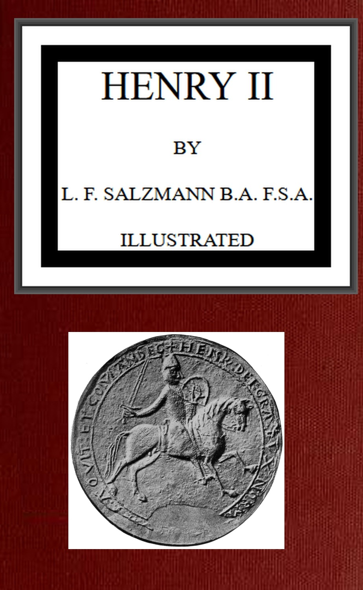
CONTENTS
ILLUSTRATIONS
BIBLIOGRAPHY
APPENDIX: ITINERARY OF HENRY II
INDEX
FOOTNOTES
Kings and Queens of England
EDITED BY
ROBERT S. RAIT M.A. AND WILLIAM PAGE F.S.A.
H E N R Y I I
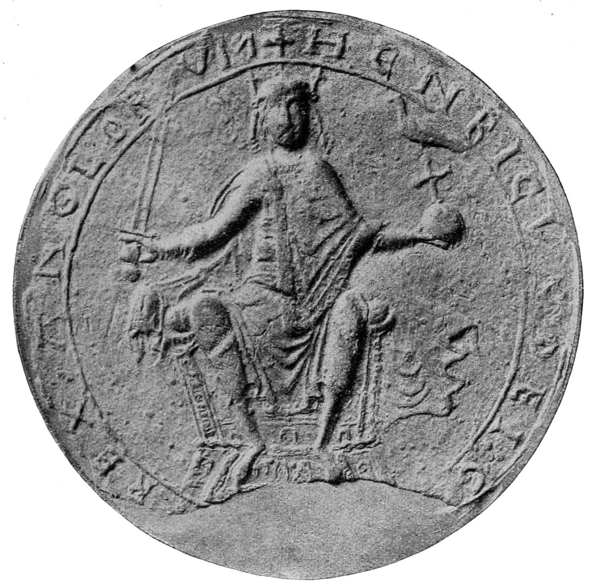
GREAT SEAL OF HENRY AS KING
(Obverse 1/1)
BY
L. F. SALZMANN B.A. F.S.A.
ILLUSTRATED
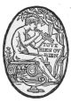
When the White Ship went down on 25th November 1120, carrying with her the only legitimate son of Henry I., the succession to the English throne became a question of great moment. Henry’s daughter, Maud, had been married to Henry V., Emperor of Germany, in 1114; it was clearly impossible for England and Normandy to be ruled in conjunction with the Empire, and Maud had no children to whom her father’s crown might pass. The king’s unruly brother, Robert of Normandy, was still alive, but a prisoner in England; and his son William, the most formidable candidate for the throne, was destined to die in Flanders in 1128. But before death had removed this dangerous and unpopular competitor, a fresh solution of the difficulty had become possible. Maud’s husband, the emperor, had died in 1125, [1]and on 1st January 1127,{2} King Henry declared Maud his heir, and caused the peers to swear to accept her as his successor in England and in Normandy. There was no precedent for female sovereignty in either country, and it was probably not anticipated that she should reign alone, but rather that she should by marriage bestow the crown upon some fitting partner. The important matter of this marriage Henry had virtually undertaken to submit to the decision of his barons, but at the end of May 1127 he betrothed her, with an absence of preparation that amounted almost to secrecy, to Geoffrey, son of Count Fulk of Anjou, a boy of fourteen, eleven years the junior of his bride. The marriage, as Henry had foreseen, was unpopular, though the addition of the neighbouring provinces of Anjou and Maine to Normandy made the King of England the most powerful of all the feudatories of France.
The marriage of Geoffrey, now Count of Anjou, and Maud took place in June 1129, but within a few weeks the quick-tempered count and his haughty bride had quarrelled and separated, and it was not until the autumn of 1131 that they came together again. Their reunion was made by Henry the occasion for causing his barons to renew their oath of allegiance to Maud as his successor, thereby quashing any objection that might have been made to the previous oath as invalidated by her marriage. The king was now more than sixty years old, and his anxiety for the future of his country and his dynasty{3} must have been greatly relieved by the birth of a son to Geoffrey and Maud on the 25th March 1133. The boy was called Henry, after his grandfather, and it is significant of the predominance attaching to his mother, as heiress of England and Normandy, that the title by which he was most commonly known to his contemporaries was that of Henry Fitz-Empress.
The death of Henry I., on 1st December 1135, seems to have taken the empress and her partisans by surprise. She went almost at once into Normandy to press her claims, half-heartedly and with little success; but in the meanwhile her cousin, Stephen of Blois, nephew of the late king, had crossed into England, and, with the assistance of his brother, Henry, Bishop of Winchester, had caused himself to be crowned king on 22nd December. The Norman barons accepted Stephen, and the final blow was given to Maud’s cause by the Pope’s declaration in favour of her rival. Her half-brother, however, Earl Robert of Gloucester, was not long in forming a party to support the claims of Maud and her son in England, and in 1139 Maud herself crossed the Channel with a small body of troops. With the varying fortunes of the long-continued war between the empress and Stephen we are not concerned, but it was when Maud’s cause was almost at its worst, in the winter of 1142, that her young son Henry, then in his tenth year, came over in charge of his uncle, Earl Robert, and was settled at Bristol. There he remained for four years under the tuition of a certain Master{4} Matthew, who cultivated in him that love for learning which made him in later days the most literary prince of his time and a worthy successor of his scholarly grandfather.
During those four years Henry’s father, Geoffrey of Anjou, had been strengthening his position on the Continent, though apparently making no effort to assist his wife in her struggle with Stephen. By the end of 1143 he had secured control of the greater part of Normandy, and early in 1144 Rouen surrendered and Geoffrey was recognised as Duke of Normandy. Having established himself securely he now sent for his son to join him, and accordingly, late in 1146, or at the beginning of the next year, Earl Robert of Gloucester escorted young Henry to Wareham and there bade farewell to him. Uncle and nephew were destined to meet no more, for on 31st October 1147 Earl Robert died. Immediately the earl’s death was known, Earl Gilbert of Pembroke, whose castle of Pevensey was then undergoing a siege, urged Henry’s return. He considered that the only hope for the empress’s cause, now that its mainstay had departed, lay in the presence of Henry in England. The boy—he was only fourteen—hurriedly crossed with a few companions, landed at one of the western ports, and made feeble attacks on Cricklade and Bourton, in Gloucestershire, from which he was easily driven off. His forces dwindled rather than increased, and his scanty supply of money soon came to an end. An application to{5} his mother for further funds proved ineffectual, as she was in the same straits herself. He then turned to the Earl of Gloucester for assistance; but Earl William was very different from his father; he cared little for war, had no enthusiasm for the cause of his cousin, and saw no reason why he should waste his treasure on a desperate and hopeless enterprise. Unable for lack of funds either to continue his injudicious venture or to leave the country, the humiliated prince had to apply for help to the rival whom he had so rashly attacked. Stephen, always chivalrous and good-natured even to weakness, in spite of the opposition and remonstrances of his advisers, at once supplied Henry with the necessary means of returning to his father’s court, where, in the early spring of 1148, he was joined by his mother, the empress.[2]
Geoffrey, now that he was firmly established in Normandy, seems to have begun to plan the{6} aggrandisement of his son, in whose right he had obtained the duchy. And so, in April 1149, Henry was sent to England to receive the honour of knighthood from King David of Scotland, his mother’s uncle. Landing, probably, at Wareham, he made a brief stay at Devizes, where we find in his company Roger, Earl of Hereford, Patrick, Earl of Salisbury, William Beauchamp, John St. John, Roger Berkeley, Hubert de Vaux, Henry Hussey, Manser Bisset and others.[3] Thence he passed peacefully northwards, the whole of western England being in the hands of magnates, such as the Earls of Leicester and Warwick, who were friendly to his cause or at least hostile to that of Stephen. To Carlisle he was brought by Earl Ralph of Chester, and there he was received by King David and his son Henry, Earl of Northumberland, and on Whitsunday, 22nd May, was duly invested with the insignia of knighthood. Henry and his ally of Scotland now persuaded the powerful Earl of Chester to join forces with them against Stephen, but before this scheme could be carried out King Stephen had outbid his rivals and bought the support of the earl by a bestowal of fiefs so lavish as to render him almost king of northern England.
Returning to his father in January 1150, Henry was invested with the dukedom of Normandy. But a little more than a year later Stephen’s son, Eustace, persuaded King Louis of France, with whom Geoffrey
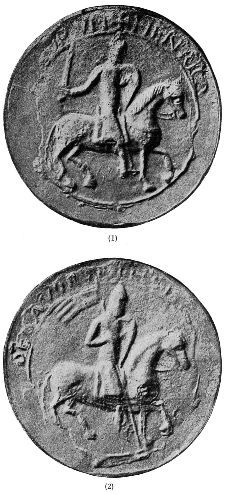
SEALS OF HENRY AS DUKE OF NORMANDY (3/4)]
had quarrelled, to assist him in regaining Normandy. The allies advanced as far as Arques, where they were opposed by the forces under the young duke. Henry here exhibited that scrupulous respect for his feudal overlord, the King of France, which he displayed so conspicuously in later years, and acted on the defensive, refusing to attack his suzerain. Eustace was a man of warlike spirit, but King Louis, who, though not averse to war, seems to have had a profound distaste for fighting, did not care to risk a battle and retired for the time. Later in the year he despatched another force to operate against Mantes, but Geoffrey now came to terms and agreed to surrender the Vexin, the borderland between France and Normandy, on condition that Louis should confirm Henry in the possession of the rest of the Norman duchy, and these terms the French king gladly accepted.
Henry had now established his claim to half of his grandfather’s dominions, and began to plan the recovery of the remainder by an invasion of England. His plans, however, were interfered with by the sudden death of his father on 7th September 1151. The recovery of England was postponed, but a great accession of territory was obtained by Henry in the following spring. Louis VII. had married Eleanor, the heiress of Aquitaine, in 1137, but relations between the able and energetic queen and her feeble husband had gradually become strained to breaking, and at last, early in 1152, they discovered{8} that they ought never to have married, being related to one another, distantly but within the degrees theoretically prohibited by the Church.[4] A divorce was granted on 18th March, and Eleanor, avoiding the too pressing attentions of Count Theobald of Blois and Geoffrey of Anjou, Henry’s younger brother, intimated her willingness to bestow her hand and great possessions upon the Duke of Normandy. Henry, now nineteen, but with a reputation that many an older man might have envied, hastened at once to meet Eleanor at Poitiers, and they were married in May. By this marriage Henry became master of Aquitaine and Poitou, in addition to Anjou, Maine, and Normandy, and his rule reached from the Channel to the Pyrenees.
He now once more prepared for the invasion of England, and was assembling his forces at Barfleur in June when he found himself called upon to face the combined forces of Eleanor’s late husband, King Louis, and her disappointed suitors, Count Theobald and Geoffrey of Anjou. Henry displayed the energy and rapidity of movement which in later years made the French king declare that he must be able to fly, dashed down to Pacey and prepared to attack the French forces, but Louis, with his usual discretion, retired at once. Henry promptly turned north to crush the rebellious Richer of L’Aigle and destroy his robbers’ castle of Bonmoulins. The Norman{9} frontier had been secured before the end of August, and the duke was free to turn his hand against his brother Geoffrey, which he did very effectually, reducing Montsoreau and compelling Geoffrey to sue for peace. A truce patched up between Henry and Louis was speedily renounced by the latter, but Henry, estimating his adversary’s military abilities at a low rate, continued his preparations for the invasion of England, and eventually crossed about the second week in January 1153, with a fleet of thirty-six ships.
It was probably at Wareham that Henry landed with his hundred and forty men-at-arms and three thousand infantry, and he would seem to have gone straight to Bristol, where he was joined by those magnates who had supported his cause in the past, or who considered that it would be to their advantage to do so in the future. Operations were at once begun against Malmesbury Castle, and the outer works were speedily carried, but the massive keep was too strong to be stormed and could only be reduced by starvation. Meanwhile Stephen had collected his forces and was marching to the rescue; after halting for the night at Cirencester he advanced to the relief of Malmesbury, but found the little Avon swollen and impassable, while a bitter wind and blinding rain and sleet, driving in the faces of his men, made it impossible for him to advance or to retain his position. Abandoning his enterprise, the king marched back to London, and the castellan{10} Jordan had no choice but to surrender. Enheartened by the capture of Malmesbury, Henry now directed his energies to the particular business which had brought him over—the relief of Wallingford. During the past five or six years, although the country as a whole had been at peace, some of the more restless spirits had carried on a sort of war on their own account, and of these one of the most prominent had been Brian Fitz-Count of Wallingford. In 1152 he had managed to destroy the castles set up at Brightwell and Reading to keep him in check, and Stephen had been obliged to besiege Wallingford Castle and blockade it by the erection of counter-works at Crowmarsh. Finding themselves in difficulties, the garrison had sent over to Henry for assistance, and he now came to the rescue and invested Crowmarsh. An outlying portion of the royalist siege works on Wallingford Bridge had already fallen into his hands, when Stephen once more offered fight. Henry, for his part, was very willing to give battle and drew out his forces, but the desire of the prelates to avoid further bloodshed, and the fear of the barons that a decisive victory might destroy the balance of power between the two parties and so render their own services less marketable, resulted in secret negotiations, and compelled the rivals to agree to a truce for five days, though suggestions for a more permanent cessation of hostilities, made at a private interview between Henry and Stephen, came to nothing. The terms of the truce were highly favourable to Henry,{11} the king being obliged to withdraw his garrison from Crowmarsh and allow the fortifications to be dismantled.
Wallingford having been relieved, and the royalists under William Cheyney and Richard de Lucy having been defeated in a cavalry action near Oxford, Henry seems to have recruited his forces in the western counties, visiting Evesham and Warwick, where the Countess Gundreda handed over to him the castle, from which she had ejected Stephen’s garrison. Then, turning eastwards, he besieged and captured Stamford Castle about the same time that Stephen reduced Ipswich. The duke next plundered Nottingham, but did not attempt to take the castle. By this time the peace party were beginning to gain the upper hand, and the efforts of Archbishop Theobald and Bishop Henry of Winchester gained strength by the removal of their chief opponent, the king’s son, Eustace of Boulogne. That bellicose ruffian, enraged at the tame conclusion of the Wallingford affair, had gone off on a ravaging expedition in the eastern counties. After plundering Cambridgeshire he paid a similar attention to the lands of Bury St. Edmunds, rashly pillaging the monastic lands on St. Laurence’s Day (10th August). The offended saints were not slow to avenge the outrage, and within a week Eustace lay dead. With his death died Stephen’s hopes of founding a dynasty, for his younger son, William, had borne no part in the civil war and possessed{12} neither the desire nor the ability to contest the crown with Henry.
After some weeks of negotiation a compromise was at last arrived at by which Stephen was to retain the crown for life on condition of acknowledging Henry as his heir, and on 6th November 1153 this agreement was ratified by the peers in council at Winchester; the rivals were reconciled and the barons of both parties did homage to the king and his successor. From Winchester the double court moved to London, where the news of the termination of the long and ruinous struggle was received with the greatest enthusiasm; and after Christmas king and duke met once more, at Oxford, on 13th January 1154, just a year since Henry had landed in England. A little later, when they met again, at Dunstable, Henry reproached Stephen for not having fulfilled one of the conditions of the treaty of peace, which was that the castles built since the death of Henry I. should be destroyed. The task was no small one, as these so-called adulterine castles had sprung up all over the country and were estimated by Robert of Torigny, usually an accurate authority, to number eleven hundred and fifteen. Stephen resented the charge of ill-faith, but the quarrel, if it deserve the name, was soon made up, and the two princes went down to Dover together in February to meet the Count and Countess of Flanders. While there it is said that Stephen’s Flemish mercenaries, without his knowledge but with the connivance of his son{13} William, planned to murder Henry. Whether a rumour of the plot reached his ears or whether he considered that affairs in Normandy required his presence, Henry soon afterwards parted from the king and returned to Normandy, where he spent the next five months strengthening his position. With King Louis he was now on good terms; and he was actually engaged in a military expedition on that king’s behalf when the throne of England fell to him by the death of Stephen on 25th October 1154.
Henry ascended the throne of England in singularly favourable circumstances. Still young, his character had been formed and his reputation had been established on the battle-fields of England and Normandy. Far inferior to his predecessor in personal character, he was as far his superior in kingcraft, possessing just those talents necessary for his position which the chivalrous, kindly, and erratic Stephen lacked. Something of this, which was to be demonstrated by the history of his reign, was already obvious, and the bulk of his English subjects were strongly prepossessed in his favour. The Church was on his side; the greater barons cared little who was king so long as their titles and their revenues were assured to them; the lesser lords and the peasantry, exhausted and impoverished by the twenty years of anarchy, welcomed a ruler strong enough to curb the lawless feuds of semi-independent chieftains, while, above all, there was no other claimant to the throne, the only possible rival, Stephen’s son, William, Earl of Warenne and Surrey, being, fortunately for himself, quite unambitious of regal honours. Possessing great powers of physical endurance, Henry was as active
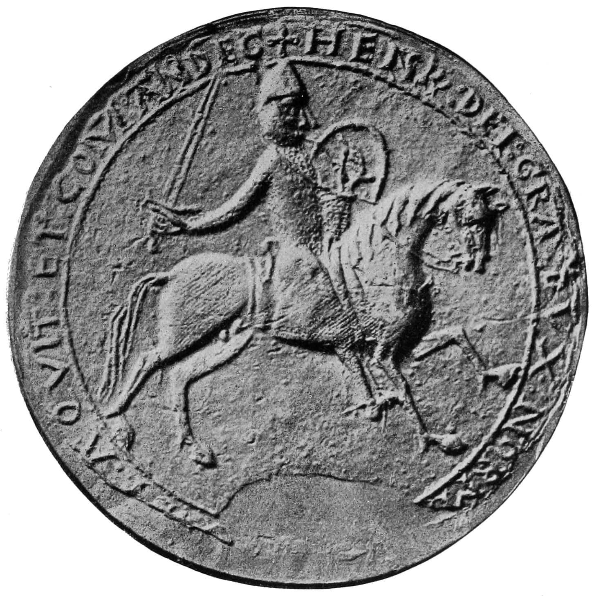
GREAT SEAL OF HENRY AS KING
(Reverse 1/1)
in mind as in body, a well-read scholar and an accomplished linguist; short, sturdy, with coarse hands and freckled face, unkempt and careless in his dress, he overcame the disadvantages of an unattractive appearance by his courtesy and the charm of his manner, which made him formidable in diplomacy or love. Although inheriting the volcanic temper of his Angevin forefathers and liable to outbursts of diabolic rage, he ruled his hot blood with a cool head, practically never allowing his feelings to dictate his policy and but rarely indulging in acts of cruelty or revenge. He was non-religious rather than irreligious, non-moral rather than immoral; though he made no attempt to bridle his lust, there is no reason to suppose that any of his numerous mistresses were unwilling victims; and though his irreverence and contempt of the Church’s sacraments shocked his contemporaries, he admired and chose for his friends such men as St. Hugh of Lincoln. Clear-sighted and self-centred, Henry was emphatically a strong man; and it is the irony of fate that the weak spot which was to prove his ruin lay in his most unselfish and amiable trait, his affection for his family.
Not the least of Henry’s qualifications for the kingship was his ability to select the right men for his ministers. It is possible that Archbishop Theobald may have had some influence in the appointment of the brilliant young Archdeacon of Canterbury, Thomas Becket, to the high office of Chancellor, but the king may be given the credit for choosing Robert,{18} Earl of Leicester, and Richard of Lucy as Justiciars. All three appointments proved to have been well made, and the first two were probably made before the coronation.[5] At this ceremony, on 19th December, besides the Archbishop of Canterbury, to whose see belonged the privilege of crowning the king, there were present the Archbishops of York and of Rouen, fourteen English bishops and the bishops of Bayeux, Lisieux, and Avranches, numbers of foreign noblemen, including Dietrich, Count of Flanders, and a multitude of English and Norman lords. There were the king’s two brothers—Geoffrey, with whom he was shortly to be at war for the second time, and William, for whose benefit he was no doubt already planning the conquest of Ireland; there were the royal officers Henry of Essex, Constable of England, Richard de Humet, Constable of Normandy, Warin Fitz-Gerald, the Chamberlain, and Hugh, Earl of Norfolk, hereditary High Steward; and there amongst the brilliant crowd would be such great lords as Reynold, Earl of Cornwall, son of King Henry I., and William, Earl of Arundel, the confirmation of whose privileges and estates was one of the new king’s first acts. Abbots, royal chaplains, clerks of the Chancery and Exchequer, wealthy merchants and burgesses, and the ladies of the court with their attendants, whose gay robes formed but the highest tone in an assembly{19} blazing with colour, complete the picture. Yet of all those in whose presence Henry swore to follow in the footsteps of his grandfather, to maintain the good laws of the realm and to abate the bad, very few were English and few even spoke the English tongue. The governing classes in Church and State were Norman by lineage, language, and sympathy, and at a time when an Englishman sat in St. Peter’s chair[6] scarce any of his compatriots held offices of trust in their native country. The fusion of English and Norman, which had already spread so far in the lower ranks of society, only began to affect the higher ranks in the course of the reign of Henry, who, by the ultimate failure of his life-long policy, was to give the English nation its individuality.
The affairs of the kingdom could not be neglected for coronation festivities, and at his Christmas court, held at Bermondsey, Henry took the first step for ensuring peace by the expulsion of the lawless Flemish mercenaries. Their leader, William of Ipres, was allowed to retain the large revenues from lands in Kent granted to him by Stephen and well earned by his loyalty and skill, and some few of his followers were sent to join the colony of Flemings established on the borders of Wales, but the bulk of the “Flemish wolves” were packed off to satisfy their appetite for war and plunder on the Continent. Having thus disposed of these alien robbers, the king had next{20} to deal with those of his own subjects who had abused their own powers and the weakness of the central government during the anarchy to extend their possessions at the expense of the royal demesnes and to strengthen their position by the erection of castles. The destruction of the “adulterine” castles, erected without royal licence, had been promised, and to some extent performed, by Stephen in the last months of his reign,[7] but Henry now determined to complete the work and at the same time to revoke the grants of royal demesne whether made by King Stephen or by the empress.
In thus recovering the Crown lands the king was no doubt partly influenced by the desire to increase the very scanty royal revenues, and partly by his deliberate anti-feudal policy. It did not require the acute intelligence which Henry possessed to learn from the events of the last twenty years that it would be wise to clip the wings of the great barons, who threatened to overshadow the throne itself, and to play for popular support. It was clearly to his interest that the people should be prosperous, contented, and loyal, and he was not slow to adopt measures which would render the nobles less able alike to oppose the Crown and to oppress the people. Throughout his reign he acted on these anti-feudal principles. Although Henry had a distinct appreciation of justice, it may be doubted if the legal{21} reforms, which were in many ways the most important features of his reign, would ever have seen the light had they not tended towards the elevation of the smaller men and the consequent depression of the greater. With a few exceptions it will be found that when Henry required, as he usually did, to increase his revenues by means of doubtful legality, he preferred to extort large sums from the wealthy rather than an equivalent multitude of small amounts from the poorer classes. So also the frequent substitution of money payments for military service helped to discourage the maintenance of large bands of armed retainers, kept nominally for the king’s service but liable to be used for the furthering of their lord’s ambition. Yet in all cases Henry acted with a wise moderation, which, leaving the great lords in possession of their titles and estates, left them in the position of having more to lose than gain by rebellion.
The king’s orders were as a whole acquiesced in with little resistance, the estates wrested from the Crown were restored, the castles demolished, life and property were once more secure, commerce revived, the merchants came forth to find customers and the Jews to seek their debtors. But William of Aumâle, Earl of Yorkshire, who, under Stephen, had enjoyed a semi-regal independence, hesitated to conform to the new state of affairs, and prepared to offer armed resistance to the king’s demands. Henry left Oxford, whither he had gone at the beginning of the new year, 1155, and moved slowly northwards, halting appa{22}rently at Northampton to re-create Hugh Bigot, Earl of Norfolk, his charter taking the form of a re-creation rather than a confirmation, possibly as a hint to the shifty earl that his dignities were not secure beyond all risk. By the time that the king reached York Earl William, finding himself unsupported, had reconsidered his position and wisely submitted to the royal demands, surrendering his fortress of Scarborough. A precipitous bluff projecting into the sea, whose waves washed it on three sides, joined to the mainland only on the west by a narrow neck, the rock of Scarborough presented an ideal spot for the rearing of a castle, and here accordingly the earl had set his great stronghold, surrounding the spacious plateau on the top of the cliff with a wall, digging a well, and building a keep four-square upon the narrow neck by which alone access was possible. Nestling against the western base of the rock lay the little town of Scarborough, itself surrounded with a wall and thus forming an outwork of the castle. The position was too formidable to be left in the hands of a subject, and King Henry took care to retain it for the remainder of his reign; and when in the course of a few years the earl’s keep fell into decay, it was rebuilt and enlarged at a cost equivalent to some £10,000 of modern money, the work beginning in 1159 and spreading over the next three years.[8]{23}
On his way either to or from York Henry appears to have visited Lincoln, the priory of Spalding, and the great abbeys of Peterborough, Thorney, and Ramsey. The news of the king’s approach to Nottingham so stirred the guilty conscience of William Peverel, burdened with the murder of the Earl of Chester, that he sought to save body and soul at the expense of his possessions by becoming a monk in a priory of which he was himself patron at Lenton. It was no doubt while in the neighbourhood of Nottingham that the king received information of the birth of his second son, Henry, on 28th February, and shortly afterwards he returned to London, where he held a council at the end of March. During the previous three months Roger, Earl of Hereford, had been contemplating resistance to the king’s demands for the surrender of his castles, but the arguments of his kinsman, Gilbert Foliot, Bishop of Hereford, supported by the success of Henry’s expedition into Yorkshire, brought him to a wiser mind, and he placed the castles of Hereford and Gloucester in the king’s hands. Hugh de Mortimer, however, the great lord of the Welsh Marches, who had been the chief instigator of Earl Roger’s disaffection, maintained his attitude of opposition and fortified his castles of Cleobury, Wigmore,{24} and Bridgnorth. Henry accordingly moved west, halting at Wallingford, where on 10th April he held a council at which the nobles swore allegiance to his elder son William, or in the event of his death, which occurred the following year, to the infant Henry. Mortimer’s strongholds were invested and, after some resistance, reduced, he himself making his peace with the king at Bridgnorth early in July.
With the collapse of Mortimer’s rebellion all active opposition to the king ceased. Henry, Bishop of Winchester, brother of the late King Stephen, having possibly displayed his sympathy with the defeated party too prominently, deemed it prudent to retire to the Continent, leaving his castles to share the fate of other private fortresses. Peace being thus ensured in England, King Henry was at liberty to look abroad, and at a council held in Winchester at Michaelmas he broached the subject of the conquest of Ireland, proposing to subdue that turbulent and uncivilised country and place it under the rule of his brother William. To strengthen his position and justify his action he sent John of Salisbury to represent to the pope the urgent need for reform, ecclesiastical and political, in Ireland. The pope at this time, Adrian IV., was an Englishman, his father being a poor clerk of Langley, who entered the monastery of St. Albans shortly after his son’s birth: the young Nicholas Brakespere, endeavouring to follow his father’s example, was rejected by the authorities at St. Albans and went out of England to Provence,{25} where he rose to be abbot of St. Ruphus; his monks, regretting their election of a foreigner, appealed to the pope to depose him, and he again prospered by rejection, as he was at once promoted to the bishopric of Albano and made papal legate to Scandinavia, where his success was so great that, upon the death of Pope Eugenius III., in December 1154, he was elected to the papacy, taking the title of Adrian IV. Pope Adrian heartily approved of Henry’s project, and sent back John of Salisbury with a letter commending the proposed crusade and an emerald ring symbolic of the sovereignty of Ireland, with which he invested Henry by virtue of the alleged supremacy of the popes over all islands.[10] Feeling in England, however, does not seem to have been in favour of the expedition, and the empress, doubtless foreseeing that William would find the Irish throne an insecure position of little glory and less profit, strongly opposed the project. Her influence with her son was sufficient to cause him to abandon the idea, or at least to postpone it until a more favourable opportunity.
Henry kept Christmas at Westminster, and early in January 1156 sailed from Dover for Normandy, his last act before leaving being to re-create Aubrey de Vere, who the previous year had paid 500 marks to be High Chamberlain of England,[11] Earl of Oxford.{26} At the beginning of the next month he met Louis VII. on the borders of France and Normandy and did homage to him for all his continental possessions, including Anjou and Maine, which his brother Geoffrey claimed under his father’s will. Geoffrey, persisting in his claims and refusing Henry’s offers of compensation, garrisoned his castles of Loudun, Chinon, and Mirabeau. By the beginning of July the two latter were in the king’s hands, and Geoffrey had agreed to be content with retaining Loudun and a money pension. Shortly afterwards the people of Nantes and Lower Brittany expelled their ruler, Count Hoel, and elected Geoffrey in his place. Henry gladly assented to the election, and upon Geoffrey’s death in 1158 successfully enforced his own claims, as heir to his brother, against Conan, Earl of Richmond and Count of Upper Brittany.
The king’s first daughter, Maud, had been born at London early in the summer, and towards the end of August Queen Eleanor crossed from England and joined her husband in Anjou. The court returned to England in April 1157, and a short tour was made through the eastern counties, the king wearing his crown in state at Bury St. Edmunds on 19th May and staying the following week at Colchester. In continuation of his former policy he now caused William de Warenne, Earl of Surrey, to surrender the castles of Norwich and Pevensey, which he had hitherto retained, apparently compensating him by further additions to his great estates in Norfolk.[12] Earl Hugh of Norfolk was also deprived of his castles, and in Essex one of Earl Geoffrey’s strongholds was destroyed.
Henry was now so firmly established on the throne that he could insist upon a far more important resumption of territory, and accordingly he demanded from the young King Malcolm of Scotland the cession of Northumberland, Westmoreland, and Cumberland. Malcolm, unable to offer any effective resistance to his demands, travelled south through Yorkshire and Lincolnshire to the castle of the Peak. Meanwhile Henry, after holding a council on 17th July at Northampton, where he left the queen, was moving westwards. The two kings met at the Peak and passed on together to Chester, where Malcolm formally restored the northern counties, receiving in exchange the earldom of Huntingdon, for which he did homage to Henry. The Scottish king then returned to his own country to repress the rebellion raised by his nobles in indignation at his surrender to the English demands, while Henry completed his arrangements for the invasion of North Wales.
The Welsh, who had been brought into at least nominal subjection by the strong hand of Henry I., were not slow to avail themselves of England’s weakness under Stephen to regain their liberty. Unfortunately the chief result of the removal of foreign control was the increase of those internal disputes which had always formed so large a part of the nation’s history.[13] Prince warred with prince, brother against brother, and cousin against cousin; treachery was met with treachery, and in the end the inevitable appeal of a disappointed claimant for foreign assistance against his successful rival brought an English army into Welsh soil once more. Owain Gwynedd, king of North Wales, had exiled his brother Cadwalader and seized his possessions, and it was on the pretext of restoring Cadwalader that Henry assembled his forces at Chester and prepared for the invasion of Wales in the summer of 1157.
The task was formidable alike from the nature of the country and the inhabitants. Wales was{27} divided into three parts—North Wales or Venedotia, South Wales or Demetia, and Powys, but, save that the lance was the weapon of the northern Welsh and the bow of the southern, the divisions were arbitrary and artificial, and unconnected with any differences in the character of the population. With the exception of the Brabantine mercenaries, a race apart, a tribe of professional Ishmaelites, ready to turn their hands against any man for pay, no nation was so thoroughly permeated by the martial spirit as the Welsh. With the English and Normans war was the business of the gentry, but throughout Wales the young men of all classes, gentle and peasant alike, devoted their leisure to the practice of military exercises and strove to perfect themselves in the art of war. Possessing a country whose woods and mountains, intersected by torrents and marshy valleys, were admirably adapted for the ambuscade and other tricks of guerilla warfare, the Welsh had cultivated those qualities which enabled them to make best use of these natural advantages. Simple in their requirements for food or dress, they were hardy, active, and endowed with wonderful powers of endurance. Of defensive armour they made practically no use, yet they did not hesitate to encounter any foe, however well equipped; their first attack, delivered to an accompaniment of yells and braying trumpets, was furious, but, as is inevitable when light armed troops engage with heavy, if it did not prove immediately successful, they soon broke and{28} fled, always ready, however, to resume the fight if opportunity offered. They did not disdain to strengthen their position with fortifications, and the whole land bristled with castles,[14] hardly a year passing without record of the erection, capture, recapture, or destruction of one or more castles in the course of the incessant wars waged either between local chieftains or with the Norman barons of the Marches; yet it was emphatically in the strategical use which they made of the natural advantages of their country that the Welsh were pre-eminent.
It is possible that the straightforward pitched battle between troops contending stubbornly under the open sky tends to promote the honourable traditions of chivalry, while the ambush, surprise, and night attack foster treachery and deceit. Certain it is that the Welsh were notorious amongst their contemporaries as liars and perjurers, men to whom the most solemn oaths were not binding; and their Norman neighbours, the lords Marchers, were not slow to follow their example, so that the history of the border warfare is constantly stained with treachery and broken oaths. The corollary to “Taffy was a Welshman” that “Taffy was a thief” was already recognised as an axiom at the time of the Domesday Survey, when the customs of the Herefordshire Welsh contained provisions for correcting this reprehensible propensity. Yet in spite of this{29} tendency to enrich themselves at the expense of their neighbours the Welsh were open-handed and generous; none need beg for a meal, nor need the wayfarer fear to lack a resting-place. Hospitality was not so much a duty as a commonplace of life amongst this people, and exercised without hesitation. The food was simple, for though orgies of gluttony and drunkenness were only too common after a successful plundering raid, yet the habitual excess prevalent in England was here unknown; but this simplicity was more than atoned for by the charms of female society and the delights of music. In music the Welsh surpassed even the Irish; in every house a harp was to be found, and it is noteworthy that they shared with the men of Yorkshire the peculiarity of singing not in unison but in parts. In their rhythmical chanted songs the nation’s exceptional powers of rhetoric found their highest form of expression, and their bards were held in such honour that in 1157, when Morgan, son of King Owain Gwynedd, was murdered, it is expressly noted that with him was slain Gwrgant ap Rhys, “the best poet.” Thus with music and eloquent conversation were passed the restful hours of the day, the remainder of which would be devoted to military exercise, hunting, the tending of flocks and herds, or, more rarely, agriculture, for which the poor soil and the inclinations of the people were alike unsuited. They were thus perilously dependent upon England for much of their food supply and therefore{30} liable to be starved into surrender in the event of war.
The antagonism existing between the peoples of England and Wales found some echo in the relations between the two branches of the Church. The Welsh Church, possessing a far longer continuous history than that of England, was less completely under the influence of Rome, and retained many primitive customs which were strange and even abhorrent to the more orthodox. Their clergy continued to marry, with the result that many benefices had become hereditary, descending from father to son like secular property. But if the marriage of the clergy was a primitive condition no longer canonical, the marriage customs of the laity were still more shocking to the orthodox, being in many cases not merely uncanonical but clearly survivals from pagan times, indefensible on any grounds except those of crude common-sense. The English Church, having control of the four sees of St. David’s, Llandaff, Bangor, and St. Asaph, should have been able to execute the necessary reforms, but unfortunately Norman prejudice forbade the appointment of a Welshman to any post of authority in Wales, and the sees were consequently occupied by foreigners who, for the most part, could not speak the language of their flocks, and only too frequently used their power to increase their slender revenues at the expense of their clergy. Despised by the Norman clergy as corrupt and by the nobles as barbarous, it is possible{31} that the Welsh appeared to Henry less formidable opponents than they really were. Moreover, he disregarded the advice of the lords of the Marches, whose whole lives were spent in fighting their Welsh neighbours, and determined to conduct his expedition on the most approved continental lines. Owain had entrenched himself at Basingwerk, and Henry accordingly advanced along the coast for some distance, and then, meditating a flanking movement, led a detachment of his forces through the woods of Consillt. This gave the Welsh the opportunity for which they had been waiting, and no sooner were the Normans entangled in the woods than the forces under Owain’s sons, David and Cynan, fell upon them, inflicting heavy losses. Caught at a disadvantage the invaders were thrown into confusion; two of their leaders, Eustace Fitz-John and Robert de Courcy, were slain, and a cry was raised that the king had been killed. Panic ensued, and it was afterwards said that Henry of Essex, the Constable of England, had thrown down the royal standard and fled. If the Constable really displayed cowardice on this occasion the fact must have been hushed up, for nothing is heard of it for six years, until in 1163 Robert de Montfort made it the subject of a formal accusation. Such an accusation could have only one outcome, and accordingly a duel was fought between the two parties at Reading in the king’s presence, when Henry of Essex, rashly abandoning a successful defence for the offensive, was defeated and left for{32} dead on the ground, but being nursed back to life by the monks of Reading, joined their community and spent the remainder of his days in their abbey. It is noteworthy that the challenger, Robert de Montfort, was a connection of his opponent’s and not improbably a rival claimant to the constableship, which Henry had inherited through the heiress of Hugh de Montfort.[15] On the whole it would seem more probable that Robert should have made his accusation as a taunt based on some flying rumour and that the result of the duel was unjust, than that King Henry should have condoned the Constable’s cowardice and allowed him to continue in honour at his court.
However Henry of Essex may have behaved, it is clear that the Normans had suffered a severe defeat, and Henry in a furious rage drew off his troops and rejoined the main body of his army, with which he advanced unopposed to Rhuddlan, Owain having withdrawn from Basingwerk to Conway. Meanwhile the fleet, which was acting in unison with the land forces, had been despatched to Anglesea, to ravage that fertile island, the granary of North Wales. But here bad discipline was the cause of a severe check; the attractions of looting churches and monasteries proved too great for the royal forces and delivered them into the hands of the ever vigilant natives. The sailors lost their commander, William Trenchemer, and most of their officers, while amongst{33} the men of note who fell was Henry, the king’s half-uncle, son of Henry I. by the famous Welsh princess Nest. In spite of these two initial successes Owain felt himself in a position of danger, and preferring to make terms rather than to have them forced upon him, made peace and gave hostages to Henry. Cadwalader was restored to his possessions, and homage was done by Owain to the English king, and the English frontier was once more pushed as far forward as Rhuddlan, where, as also at Basingwerk, Henry restored the castle. The campaign, therefore, might be regarded as fairly successful, although the only two engagements recorded had been disastrous.
Although Owain Gwynedd and the other princes had come to terms with King Henry, the redoubtable Rhys, son of Gruffudd of South Wales, proposed to continue the war. Finding, however, that he would receive no support from any other native princes, he was persuaded to make his peace with the king, who in return promised to grant him a complete cantref of land. The spirit of the agreement was broken by the grant of the land in scattered portions instead of in a continuous block, but Rhys accepted the gift and remained quiet until he found that the king would not do him justice against Walter Clifford, when he took the law into his own hands and made a series of successful attacks upon the strongholds of the Norman barons in Cardigan. About the same time, in 1158, Yvor the Little, a noble of Glamorgan, being deprived of his lands by Earl William of{34} Gloucester, made a daring night attack upon the castle of Cardiff, and in spite of its strength and the imposing numbers of its garrison, said to have numbered 120 men-at-arms, besides archers and others, carried off the earl with his countess and their son, who were only released after more than full restitution had been made to Yvor. Meanwhile Rhys, encouraged by his successes in Cardigan, attacked Caermarthen, and Henry, who was preparing for a great expedition into the south of France, was obliged to send a force under the Earls of Cornwall, Gloucester, and Clare to relieve the castle. This they did, and they were also successful in bringing Rhys to accept terms of peace.
Peace, so far as it ever existed on the Welsh borders, continued for a short time, but when Henry returned to England in 1163, he found the country in so disturbed a state that he was obliged to lead an army against Rhys. The latter offered little or no active opposition, and the expedition took the form of a military progress through Glamorgan and Gower towards Caermarthen and as far as Pencader, returning by the mountains of Plinlimmon to Radnor. It is said that during this progress the invading host came to a stream called Nant Pencarn, where the natives anxiously waited to see whether Henry would fulfil in his own person a traditional prophecy that the crossing of the ancient ford by a brave man with a freckled face should foreshadow the defeat of the Welsh. When they saw the king ride past the{35} old ford and set his horse to cross by one newer and better known, the Welsh set up such a blare of horns and trumpets that his horse took fright, and the king, turning round, made for the older ford and dashed across, this time without any orchestral welcome.
As a result of this campaign Rhys, with Owain of North Wales and other princes, attended Henry’s court at Woodstock and did homage to him there in July 1163. The king, apparently meditating the confiscation of his estates or possibly the extortion of a ransom, sent a knight to visit Dynevor, the capital of South Wales, and to report upon the nature of the country; the priest, however, who acted as guide, while professing to go by the best route, took the unsuspecting knight by all the worst and most impassable tracks, and so contrived to impress him with the utter poverty of the land and the inhabitants that the king, on the strength of his report, abandoned his first intention and released Rhys, only taking from him hostages for his good behaviour. Hardly had Rhys returned than he renewed the struggle, recapturing the whole district of Cardigan, invading Pembrokeshire and despoiling the Norman and Flemish settlers. His example was speedily followed by Owain Gwynedd and his sons, who ravaged the district round Rhuddlan. In October 1164 Henry had issued orders for a force to be raised against Rhys, and on his return to England in the following May, he found this force ready and with it{36} pushed hastily forward to Rhuddlan. Having relieved pressure in this district for the time being he returned to England to collect a larger army, furiously vowing to destroy the whole nation of Welsh. The border fortresses were set in order from Abergavenny, Grosmont, Llantilis, and Skenfrith in the south to Montgomery, Shrawardine, and Chirk in the north; foreign mercenaries were brought over and provided with arms, Ernald the armourer providing 300 bucklers for their use; lances and arrows were bought in Oxford and elsewhere and despatched to the frontier; and, above all, large sums of money were extorted from the cities, prelates, and nobles for the conduct of the war.[16] Operations on a small scale seem to have been carried on from Abergavenny, but the king, with the main part of his imposing army, advanced from Shrewsbury to Oswestry and so into Powys. For once the Welsh were united; Rhys of South Wales, Owain Gwynedd and Cadwalader his brother, the former ally of the English, the two sons of Madog of Powys, lesser princes such as Owain Cyveliog and Jorwerth the Red, all with their whole following were assembled to oppose the invader.
Henry advanced down the valley of the Ceiriog and, mindful of former disaster, endeavoured to protect his flanks by cutting down the woods. Indecisive skirmishing took place, resulting in heavy losses to both sides, but the Welsh avoided a pitched{37} battle and retired before the royal forces until the latter had penetrated as far as the mountains of Berwyn in Merionethshire. Here they encamped, ravaging the country round and plundering the churches, to the intense anger of the Welsh, who always scrupulously observed the sanctity of churches. Punishment speedily overtook the impious host: tremendous storms of rain, exceptionally vehement even for Wales, coupled with a shortage of provisions, drove the English back in a disorderly and disastrous retreat to Chester, where Henry waited for the arrival of a fleet from Ireland. When the ships came they proved to be insufficient for the conduct of further operations against the Welsh. The king, furious at his ill-success, took a mean revenge by barbarously mutilating the sons of Rhys and Owain and a score of other hostages in his power.[17]
Hardly had the English army retired from Wales when Rhys stormed the castle of Cardigan and captured its lord, Robert Fitz-Stephen. Next year, in 1165, the Normans and Flemings of Pembroke made two unsuccessful attempts to retake Cardigan, while in the north Owain Gwynedd destroyed Basingwerk. Internal dissensions led to the ejection from their lands of Jorwerth the Red and Owain Cyveliog,[18] and{38} the latter, in 1166, assisted the Normans to gain a small success in the capture of the castle of Caereinion, but this was more than counterbalanced by the action of Rhys and Owain Gwynedd, who, after a three months’ siege, captured the castles of Rhuddlan and Prestatyn. The development of Irish affairs now made friendly relations with Wales important, the main route to Ireland being by way of South Wales and the ports of Pembrokeshire. Accordingly we find Henry becoming reconciled to Rhys in 1171, and from henceforth treating him with an honourable courtesy which the Welsh prince reciprocated. Peace, therefore, varied with occasional border skirmishes, continued between England and Wales until the end of Henry’s reign, and the Welsh, deprived of the pleasure of molesting the foreigner, turned with the greater zest to the task of cutting one another’s throats.
The invariable failure of Henry’s military policy in Wales was due to his persistent disregard of the local lords of the marches and reliance upon men famous in continental warfare but totally ignorant of the very different conditions prevailing in the mountains and forests of Wales. Such a man as Gerald de Barri could have given the king far more useful advice in the conduct of a Welsh campaign than any of his great Norman barons. That acute historian afterwards set out at length the measures necessary for the conquest of his native country. No expedition should be undertaken hastily, but careful{39} preparations should be made, allies secured, and internal divisions carefully fostered; castles should be built along the frontier, trade with England, especially in provisions, stopped, and the coasts blockaded. This would, as a rule, be sufficient to bring them to terms, but if military operations were needful then an advance should be made in the early spring before the trees came into leaf; the troops should be light armed, and preferably men of the border used to the country rather than Flemish or Brabantines, good as the latter were on their own ground. The operations should be conducted by counsel of the lords marchers, and heavy losses must be expected and borne with equanimity, for while mercenaries are easily replaced the Welsh could not replace their men. Once subdued the natives should be treated with justice and kindness so long as they remain quiet, but their rulers should be ever watchful and should punish rebellion with severity. To diminish the chance of revolt the intervals of peace ought to be used for the building of roads and of castles, and at the same time the English border towns along the Severn might well have special privileges granted them to facilitate their growth, and in return they should be bound to maintain a fitting provision of arms and horses and to practise universal military training. “Yet for all this the nation shall not perish utterly, and at the last great Day of Judgment this little spot of land shall be answered for by the Welsh race, still speaking in their ancient tongue.”
After the ingloriously successful Welsh campaign of 1157 Henry seems to have returned to Woodstock and there rejoined the queen, who had given birth on 8th September to a third son, Richard. The remainder of the autumn was no doubt spent in hunting, but at the end of the year the court moved northwards to Lincoln, where Christmas was kept. A local tradition, or superstition, forbade the wearing of the royal crown within the city walls. Stephen, it is true, had defied this tradition in 1146, but the fortunes of Stephen were not such as to make his action an encouraging precedent, and Henry, preferring to be on the safe side, caused the ceremonial of coronation to take place in the church of St. Mary of Wigford outside the walls. From Lincoln the king moved on, at the beginning of 1158, to Carlisle to meet Malcolm of Scotland. The result of the meeting was unsatisfactory, and Henry abandoned his original intention of bestowing upon the young king that honour of knighthood which he had himself once received at the hands of Malcolm’s predecessor, David.
Easter in that year fell on 20th April, when the
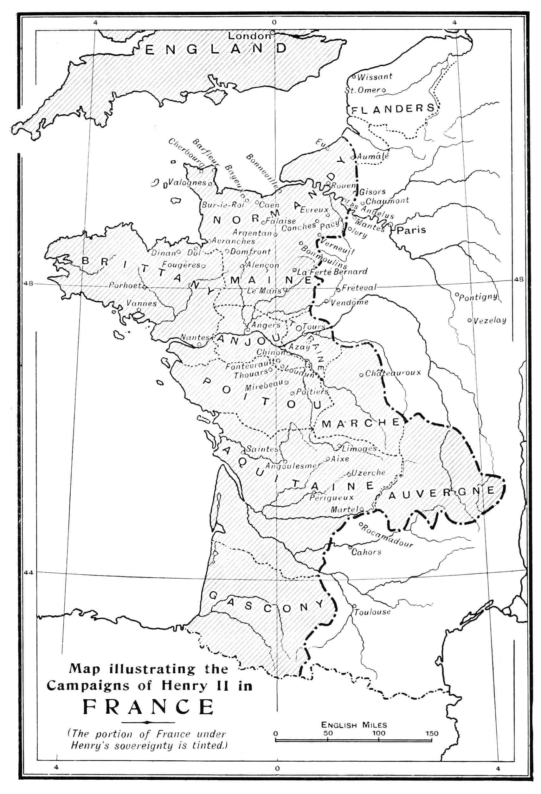
Map illustrating the Campaigns of Henry II in FRANCE
(The portion of France under Henry’s sovereignty is tinted.)
court was at Worcester, and Henry and Eleanor celebrated the festival by observing, for the last time, the elaborate ritual of coronation. When the service was over they laid their crowns upon the altar and vowed to wear them no more. There would seem to have been no deeper reason for this renunciation than Henry’s dislike of ceremony. To the restless king, who never sat except on the saddle and who whispered and scribbled notes to relieve the boredom of Mass, the elaborate ceremonial of the crown-wearing must have been distasteful and wearisome. The outward pomp and circumstance of royalty were nothing to the man whose rule extended from the Pennines to the Pyrenees, and the glitter of a crown was no enhancement to the clearest head in Europe, throbbing full with political problems, national and international. The kings of Wales and Scotland had done homage; Godred, King of Man and the Isles, was in attendance at Worcester; embassies had been received or were on their way from the kings of Norway, the King of Jerusalem, and the Emperor Frederic; and Henry was scheming for the further aggrandisement of his family and the extension of his continental dominions.
Louis VII. had by his second wife, Constance of Castille, a daughter
Margaret, at this time a baby of a few months old, and Henry determined
to forestall other possible aspirants for the hand of this very youthful
heiress. Accordingly, in the summer of 1158, he despatched his
chancellor, Thomas Becket,{41}
{42} to demand the hand of Margaret for his
eldest surviving son, Henry, who was now rather more than two years old.
If the king was inclined to underrate the value of display and outward
magnificence, his chancellor was very far from falling into the same
error. Becket, the king’s trusted minister and most intimate friend,
presented a curious contrast in every way to his royal master. He was
tall, of commanding presence, with clean-cut features and shapely hands;
in his splendour he was a prototype of Cardinal Wolsey, but stood out
the more prominently, as the sober court of Henry II. made a better foil
than the magnificence of Henry VIII. Intensely self-centred, whatever he
took up he threw himself into heart and soul, and as he was to prove the
most ecclesiastical of ecclesiastics, so now that he was the greatest
officer in the land he saw to it that his dignity was becomingly
supported. Lavish in his expenditure, he kept open house and enriched
his friends with open-handed generosity. Yet, though luxury and
ostentation formed the note of his household, it is to his honour that
in an age when views on morals were more than lax he was known
pre-eminently as a man of clean life.
The embassy to the French court presented Becket with an admirable opportunity for gratifying his taste for pageantry, and the splendour of his cavalcade struck amazement into the minds of the natives and impressed them with the greatness of the English king. In front of the procession came the serving{43} men and lackeys on foot in groups of ten or a dozen singing English songs, and some way behind them came huntsmen leading dogs and with their greyhounds in leash; then there rattled over the stones six great covered waggons containing the baggage of the chancellor’s household, and two other waggons loaded solely with the very best English ale as a present for the French. Each of these carts was drawn by five magnificent horses, each attended by its own groom, and as guard to each cart was a great mastiff. Next came the pack horses with their drivers, and as a picturesque touch there sat upon the back of each horse an ape or monkey. After these came the squires, some carrying the shields of their masters and leading their chargers, others bearing hawks and falcons; then the officers of the household, and the knights and clerks riding two and two, and finally the chancellor himself with his friends. Becket did not allow the effect of his arrival to be diminished by any failure to maintain his state during his stay in Paris, and the extravagance and luxury of his household at the Temple, which had been assigned for his accommodation, became proverbial. And when the business of his mission had been successfully settled he distributed all his gold and silver plate, his furs and gorgeous robes, horses and the other magnificent appointments of his establishment in lavish largesse.
Henry followed close on the heels of his splendid ambassador to complete the negotiations for the{44} proposed matrimonial alliance. The two kings met first on the borders of France and Normandy, near Gisors, and Henry then paid a formal visit to Louis in Paris, where his unassuming courtesy and refusal of all ceremonial honours made an impression quite as favourable as the magnificence of his chancellor had done. Not only did Louis fall in with the suggestion for the betrothal of Margaret to the young Henry, but he also agreed to assist the English king in his claim on the territory of Nantes and Lower Brittany. Geoffrey, Henry’s younger brother, had held this province for life by the election of the inhabitants, but upon his death in July 1158, Conan, Count of Brittany, claimed that it should revert to him. In face of the united forces of England and France Conan could only submit, surrendering Nantes in return for a confirmation of his rights in the remainder of Brittany. After taking over Nantes Henry led a brilliant little expedition against Thouars, in Poitou, capturing that strong position and its rebellious lord with surprising rapidity, and then, turning north, met King Louis at Le Mans, accompanied him on a pilgrimage to St. Michael’s Mount, and entertained him for some time at Rouen. Thanks to the French king’s good offices several favourable arrangements were made for the surrender of border castles to Henry, and it was with satisfaction that Henry could look back upon the recent results of his diplomacy when he celebrated the feast of Christmas that year at Cherbourg with Queen Eleanor, who
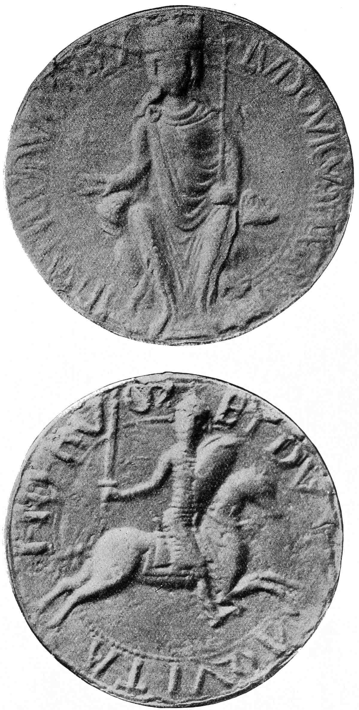
SEAL OF LOUIS VII (1/1)
had given birth to her fourth son, Geoffrey, in the previous September.
His policy having so far met with such remarkable success Henry now decided to revive his wife’s ancient and shadowy claim to the important province of Toulouse. This province had been sold by one of Queen Eleanor’s ancestors to his brother, Raymond of St. Gilles, but the legality of the sale had been questioned on more than one occasion, and Louis VII., at the time that Eleanor was his wife, had prepared to enforce his claim, but had come to an amicable agreement with the Count of St. Gilles, giving him to wife his sister Constance, widow of King Stephen’s son Eustace. Henry now made warlike preparations on an unprecedented scale, securing as an ally Raymond Berenger, virtual King of Arragon and Duke of Provence but proudly content to be known by his humbler ancestral title of Count of Barcelona, and calling on all his fiefs, English and continental, for aids of men and money. In the imposing army which marched upon Toulouse in July 1159, practically all the great barons of England and Normandy were present with their retinues, the chancellor as usual outshining his peers in the number and splendour of his knights. Malcolm of Scotland came with a band of his young nobles, and was rewarded by Henry with the coveted honour of knighthood, and there was one of the Welsh princes; but the main body of the troops consisted of Welsh and other mercenaries, hired with the money wrung from the{46} great prelates, the larger towns, and the Jews and other wealthy non-combatants. Such a force could easily have captured Toulouse, but King Louis had hastened to the aid of his brother-in-law and was within the town. For Henry to attack would therefore mean a direct assault upon the man who, as King of France, was technically his over-lord and suzerain, a breach of feudal law which Henry, to the disgust of Becket and other less scrupulous men, refused to commit. The only alternative was a blockade, and this proving futile and ineffectual the great army withdrew at the end of September, having achieved practically nothing but the capture of Cahors. On his way north, however, Henry was able to induce the Count of Evreux to hand over the castles of Montfort, Epernon, and Rochfort, and Louis, finding his lines of communication thus cut, hastily concluded peace.
During this war Pope Adrian had died, and Cardinal Roland Bandinelli had been elected by a majority of the electoral college, and, after a little hesitation, had accepted the papacy under the title of Alexander III.; the party of the Emperor Frederic, however, taking advantage of Roland’s hesitation, had declared their candidate, Octavian, elected, and had consecrated him pope as Victor III. The question of which pope should be recognised was discussed at councils held by Henry at Neufmarché in Normandy and by Louis at Beauvais, and in each case the decision was given in favour of Alexander, Victor being renounced as{47} schismatic. This result was largely due to the eloquence of Alexander’s legate, Cardinal William of Pavia. He, with Cardinal Henry of Pisa, was at the English king’s court at the end of October 1160, when the news arrived that Louis, within a fortnight of his wife’s death, had, in his eagerness to obtain an heir to his throne, married a sister of Theobald, Count of Blois. Henry at once persuaded the cardinals to celebrate the marriage between his son Henry, not yet five years old, and the French king’s daughter Margaret, then in her third year; the marriage having thus been performed with the consent of the Church, as stipulated in his treaty with Louis, Henry was entitled to demand as Margaret’s marriage portion the surrender of the Norman Vexin and its castles of Gisors, Néaufles, and Neufchâtel, which he accordingly received from the three Templars who were acting as trustees of the settlement.
This piece of sharp practice roused the resentment of Louis, but Henry’s defences were too strong for any effective military operations, and, after some desultory skirmishing on the borders, peace was patched up in the summer of 1162 and continued without actual breach for some five years. At the end of that time, in June 1167, Henry’s interference in the affairs of Auvergne afforded Louis excuse for a fresh campaign, whose prospects of success were the greater from its coincidence, no doubt designed, with a rising on an unusually large scale amongst the unruly Breton{48} nobles. The French accordingly ravaged the Norman border, but Henry virtually brought the campaign to an end by a single brilliant stroke. Knowing the provisions and munitions of the French army had been stored at Chaumont, he marched against that town, and while his men-at-arms engaged the garrison outside the walls his light-armed Welsh levies swam down the river and, gaining access to the town by that unexpected quarter, set it on fire. The whole town was destroyed, many of its defenders slain or captured, and the rest driven into the castle, where Henry left them unmolested, content with the destruction of the stores. Although this practically put an end to hostilities, no peace could be arranged until the French king’s impotent rage had been appeased, and the brilliant suggestion was therefore made by the Empress Maud that he should be allowed to burn some unfortified Norman town. Les Andelys was selected as the victim; the inhabitants were duly warned by Henry to leave the place, and the French army solemnly marched on the deserted town and burnt it. Having cheaply regained his honour by this puerile act of revenge, Louis agreed, in August 1168, to a six months’ truce. This gave Henry time to suppress the rising in Brittany and another in Poitou, while the refractory counts of Ponthieu and Perche received their chastisement during the ensuing negotiations, varied with occasional fighting, which resulted at last in a definite treaty of peace being concluded between the two{49} kings in January 1169. By this treaty it was agreed that Henry’s son, Richard, should be betrothed to the French king’s daughter, Alais, and should hold Poitou and Guienne, while Geoffrey, who had married Count Conan’s daughter in 1166, should hold Brittany under his elder brother Henry.
Henry’s two eldest sons were thus married or betrothed to daughters of King Louis and his third son married to the heiress of Brittany; the youngest, John, having only been born on Christmas Eve, 1166, was not yet provided for, but the king’s eldest daughter, Maud, had sailed from Dover in the autumn of 1167, under the escort of the Archbishop-elect of Cologne, the Earls of Arundel and Pembroke, and such lesser lords as Reynold de Warenne and William Cheyney, to marry Henry, Duke of Saxony. Thus by the power of the sword and the bond of marriage did Henry strengthen his position on the Continent
During the time that Henry was campaigning on the Norman borders, in April 1161, Archbishop Theobald of Canterbury died. For nearly a year the king kept the primacy vacant, but at last, in the spring of 1162, he declared his wish that Becket should take the archiepiscopate. The appointment, not unforeseen, of the courtly chancellor seems to have been distasteful to many of the clergy, but the only man who had the courage to brave the king’s wrath by opposing the election of his favourite was Gilbert Foliot, Bishop of Hereford, whose opposition was probably increased in vehemence but diminished in effect by the fact that he was himself Becket’s most dangerous rival in the race for the primacy. Foliot’s protest was supported by the Empress Maud, who, as a devoted daughter of the Church, doubtless considered Becket too lax and worldly for the post; but for once Henry disregarded his mother’s opinion. Becket himself must have seen in his promotion the chance of satisfying his ambition; as chancellor he was the second man in the realm, subject only to the king; but, subject to him, often directing the royal policy, but always liable to be checked by an expres{51}sion of the royal will; as archbishop, with the divine authority of the Church behind him, it would be for him to dictate and for the king to obey. Yet knowing, as he alone knew, the ultra-clerical course which he intended to take, he foresaw that it must sooner or later bring him into collision with Henry, and forebodings for the future, more particularly regret for the inevitable disruption of the ancient bonds of friendship which bound him to the king, made him hesitate to grasp the prize for which he longed. At last the insistence of the king, coupled with the persuasions of Cardinal Henry of Pisa, overcame Becket’s half-hearted resistance, and in May 1162 he sailed for England for consecration.
Besides the business attendant on his elevation to the primacy, the chancellor was charged with the carrying out of arrangements for an expedition against the Welsh and also with the performance of fealty to the king’s eldest son, Henry. The prince, who was at this time eight years old, had been entrusted by his father to Becket’s care, and a very genuine feeling of affection existed between the boy and his guardian, which was to continue, unaffected by the events of later years, until the archbishop’s death. It was therefore not unsuitable that the last recorded act of Becket in his official capacity as chancellor was to head the assembled peers at Westminster in taking the oath of fealty to the young Henry. On the occasion of this ceremony, which seems to have included an informal coronation—for a golden{52} crown and regalia were made for the prince[19]—Becket was formally elected to the see of Canterbury. The right of the monks of Christ Church, Canterbury, to appoint the archbishop, who was also nominally their abbot, was so far recognised that they were directed by the king’s messengers, the Bishops of Chichester, Exeter, and Rochester, Richard de Lucy and his brother the Abbot of Battle, to hold an election, but they were told definitely that their choice must fall on the chancellor. This formality over, there arose the question of consecration. The right to perform this ceremony was disputed between Roger, Archbishop of York, as primate, the Bishop of Rochester as Vicar of Canterbury, and the Bishop of Winchester as Precentor of Canterbury, while a claim was also put in by the bishop of one of the Welsh sees as the senior member of the episcopal bench. The see of London, whose bishop, as Dean of Canterbury, would have had the best claim to officiate, was vacant, but the dean and canons appointed Henry, Bishop of Winchester, to act for them, and to him eventually was assigned the honour of officiating.
On Saturday, 2nd June, Becket, who was still in deacons’ orders, was ordained priest, and on the{53} following day he was consecrated archbishop. To commemorate the occasion he ordained that the Sunday following Whitsunday should in future be kept as a great festival in honour of the Holy Trinity,[20] and even the zeal of the Reformers against the cult of Thomas of Canterbury did not blot out from the calendar of the English Church Trinity Sunday.
The consecration of Thomas as Archbishop of Canterbury was indeed an event worthy of commemoration, forming as it did the prelude to the struggle between clerical and lay power which was to occupy the next ten years of Henry’s reign. This struggle presents a curious problem of historical perspective. Seen through the atmosphere of the contemporary chronicle or through the rarified medium of history the Becket controversy presents very different features. To contemporaries it seemed of overpowering importance, eclipsing all other events of the time and entailing issues of enormous weight. To us the points at issue seem of slight significance, while the results appear almost negligible in comparison with the energy and heat expended to produce them. Whichever view, if either, is correct, there can be no doubt of the great part played by this episode, for though in the end the contending parties were left very much where they started the casual{54} results of the struggle influenced the history of the country most powerfully, so that in this controversy the incidents are of greater importance than the main matter of contention.
It is easy to be wise after the event, and Henry is constantly blamed by modern writers for having promoted Becket to the primacy and not having foreseen the consequences. Yet little reflection is required to show that nothing short of the gift of prophecy would have enabled Henry to foresee the position which Thomas was to take up. The chancellor had habitually neglected his duties as Archdeacon of Canterbury, calling down upon himself the rebukes of Archbishop Theobald, and had on several occasions shown very slight regard for the privileges of the Church. At the time of his appointment Gilbert Foliot scoffingly remarked that the king had performed a miracle, for he had converted a knightly courtier into a holy archbishop. Events proved Foliot’s jest a truth, and though it was Becket who wrought the marvellous metamorphosis himself, it remained a miracle unforeshadowed in the past life or character of the man.
Thomas, who was born on 21st December 1118, was the son of Gilbert Becket by Maud his wife. His parents, who were both of Norman extraction[21] but{55} had settled in London before his birth, belonged to the middle class and were comfortably off, and by them he was sent to the school of the canons of Merton Priory. While he was still quite young his mother died, and not long afterwards his father, who was in very reduced circumstances owing to losses by fire, followed her. Fortunately for himself Thomas, who was a good-looking boy of much promise, had attracted the attention of a powerful baron, Richer of L’Aigle, who had been in the habit of putting up at the Beckets’ house whenever he came up to London. Richer interested himself in the orphan, sending him to school in London and allowing him to spend his holidays with him in the country, presumably at his Sussex castle of Pevensey. Here Thomas practised hunting, hawking, and other manly sports, on one occasion nearly losing his life in the endeavour to rescue his falcon from a mill-stream. His patron appears to have sent him to study in Paris, and on his return he entered the service of his kinsman, Osbern Huitdeniers, one of the leading citizens of London. After some three years of official life in the city he determined to try a field more promising for his ambitions. Once again his father’s hospitality proved the means of his advancement, two of Gilbert’s former guests, the Archdeacon Baldwin and his brother, Master Eustace, introducing him to the notice of Archbishop Theobald. The archbishop, finding that the young man’s father had come from his own native town of Thierceville, gladly{56} enrolled him in his household and took a kindly interest in him. There were at this time at the archbishop’s court many men of distinction and learning, and one of these, Roger of Pont l’Evêque, afterwards Archbishop of York, jealous of the favour shown to Thomas, whose powers lay in the direction of showy brilliance rather than sound scholarship, did all that he could to injure and annoy him. Twice Roger persuaded the archbishop to dismiss the young man, but on each occasion Theobald’s brother, Walter, Archdeacon of Canterbury, took up his cause and secured his restoration to favour. As early as 1143, when he was in his twenty-fifth year, Thomas rendered his patron good service at the papal court in the matter of annulling the legatine commission formerly granted to Bishop Henry of Winchester. About this date he appears to have attended the famous law schools at Bologna, and afterwards at Auxerre. By this time he was beginning to become a person of importance; the churches of St. Mary-le-Strand and Otford, and prebends in St. Paul’s and Lincoln had been bestowed upon him, and in March 1148 he, with his rival, Roger of Pont-l’Evêque, attended the archbishop on his venturesome sail across the Channel to the Council of Rheims. Three years later, in 1151, Becket achieved a further diplomatic success in defeating Stephen’s efforts to obtain papal recognition for his son Eustace, and in 1154, when Roger of Pont-l’Evêque became Archbishop of York, Thomas succeeded him as Archdeacon of Canterbury.
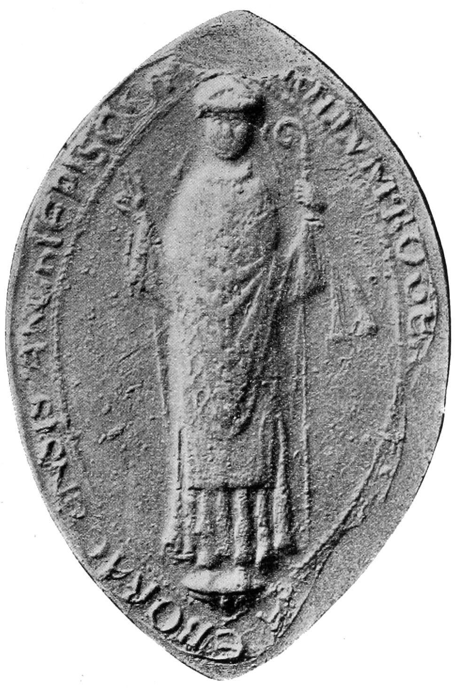
SEAL OF ROGER, ARCHBISHOP OF YORK (1/1)
On the accession of Henry II., as we have seen, Thomas was made
chancellor by the advice of Archbishop Theobald, with the generous
support of Bishop Henry of Winchester, whose claims he had once been
instrumental in defeating. Of the splendour and luxury displayed in his
household as chancellor something has already been said. The means to
satisfy his taste for magnificence and display were furnished not only
by the emoluments, regular and irregular,[22] of his office, but by
multitudinous extra preferments bestowed upon him, such as the
provostship of Beverley, the custody of the Tower of London, which he
restored and strengthened, and the honours of Eye and Berkhamstead. He
still retained his youthful love of sport and also displayed
considerable military ability; during the expedition to Toulouse he was
left in command at Cahors, and justified his appointment by leading his
troops in person to the capture of three other castles, while somewhat
later he overthrew a French knight in single combat. The king could
appreciate a man of spirit and a good sportsman, and the two men became
fast friends. Henry, on his way to or from the hunt, would often drop in
at the chancellor’s house and take a glass of wine with him, or,
vaulting the table, sit down and eat, noting with amusement the luxury
for which his friend was so famous. The story is well known{57}
{58} how, as
king and chancellor were riding together through the streets of London
one bitter winter’s day, they saw a poor old man clad in rags. Turning
to his friend the king said, “Would it not be a meritorious act to give
that poor old man a warm cloak?” The chancellor agreeing that it would
indeed, Henry exclaimed, “You shall have the merit of this worthy act!”
and seizing Becket’s magnificent fur-lined cloak, after a short struggle
secured it and flung it to the beggar.
The intimate friend of the king, a courtier, sportsman, and warrior, whose only interest in the Church seemed to be to draw the revenues of his many benefices and to extract money from its prelates for his royal master, no one could have foreseen Becket’s conversion into the most ultra-clerical of archbishops.
Almost the first act of the newly consecrated archbishop was to resign the chancellorship. As Becket must have been fully aware that the king expected him to continue in office and would never have bestowed the primacy upon him if he had declared his intention of resigning, his action was surprising and unjustifiable. Henry, though deeply annoyed, accepted the situation and displayed no ill-feeling towards Thomas. In fact when he landed at Southampton in January 1163, having been detained at Cherbourg over Christmas by bad weather, he greeted the archbishop with all the warmth of affection which he had formerly bestowed upon the chancellor. These good relations continued for some months, Thomas{59} supporting the king’s request to the pope for the translation of Gilbert Foliot from Hereford to the vacant see of London,[23] and Henry visiting the archbishop at Canterbury on his way down to Dover to meet the Count of Flanders in March. But Becket was now throwing himself with his usual thoroughness into the work appropriate to his position as head of the English Church. His taste for display continued unabated, but found new outlets. As archbishop he was the recognised patron of the younger sons of nobles as the king was of their elder sons, while amongst the crowd of high-born youths serving as his esquires was the heir to the throne; his household was as magnificent and his table as well-appointed as ever, but the clerks, who had formerly received little consideration, had now supplanted the knights in the place of honour, while a somewhat ostentatious prominence was given to the daily distribution of alms and feeding of large numbers of poor persons. Thomas himself presided gracefully over the splendid feasts, and, though far from practising the stern asceticism of Gilbert Foliot, observed a strict moderation suitable to the monastic habit which he had assumed; and although there was no lack of gaiety and animation at his table the jesters and minstrels of former days were now replaced by readers of the Holy Scripture.
Soon the erstwhile pluralist chancellor began to attack the bestowal of multiple benefices upon the king’s clerks, laymen in all but name, whose sole connection with their benefices was to draw their revenues. So long as Becket confined himself to this legitimate course of reform the king raised no objections, only insisting that the physician should first heal himself by surrendering the archdeaconry of Canterbury, which he had most inconsistently retained with the archbishopric. But soon Thomas passed from correcting the faults of his clergy to protecting their vices. The complaints of the laity against the extortions and injustice of the archdeacons and their officials had been brought to Henry’s notice in the time of Archbishop Theobald, and one particular case reported from Scarborough roused the king to declare that these clerical officers wrung more money from the people every year than the revenues of the crown. Had not matters of importance obliged Henry to leave England just at this time it is not improbable that he would have carried out, with the assistance of Thomas the Chancellor, some of those measures for the control of the clerical courts which Thomas the Archbishop devoted his life to opposing. The bishops ordained candidates without regard to their fitness, and, contrary to the canons, bestowed orders upon men who had no title. Inevitably the country was overrun with men of low character, without definite means of subsistence, who could laugh alike at the lay courts, which had no jurisdiction{61} over them, and at the ecclesiastical courts, whose proceedings were only too often a farce; for the clerk who held no church deprivation had no terrors, and it was well known that the bishops would rather a guilty clerk were acquitted than that they should be burdened with the cost of his keep in the episcopal prisons. Murders and other crimes were committed by these bastard sons of the Church, and any attempt to bring the offenders to book was foiled by the prelates. Becket, who as chancellor had imprisoned a clerk in the Tower for seduction, now threw the mantle of the Church over an unworthy clerk who had been guilty of a peculiarly atrocious murder and adultery. The king felt strongly in the matter, but it would seem that for a time his old affection kept him from pressing his anti-clerical measures to the point of an actual breach with the archbishop. Other matters, however, more personal, now arose to increase the estrangement between the former friends.
On his return from the Welsh expedition in July 1163, Henry appears to have found his affairs rather involved and to have proposed to increase his revenue by appropriating the annual payment known as the “Sheriff’s aid”; the exact points in dispute are obscure and will be discussed in a later chapter, but it is known that the king swore “by the eyes of God”[24] {62} that the payment should be made part of the Crown revenues and that the archbishop vowed “by his reverence for those same eyes” that no penny of it should be paid from his lands while he lived. In the end Henry had to give way, and he was again defeated by Becket about the same time in another matter still nearer to his heart. During the retreat from Toulouse in 1159 King Stephen’s son, William, Count of Boulogne, and, in right of his wife, Earl of Surrey and Warenne, had died, leaving no children. To prevent the county of Boulogne falling into the hands of any adherent of the King of France, Henry took William’s sister, Mary, out of the nunnery of Romsey, where she was abbess, and married her to Matthew, son of the Count of Flanders, in spite of Becket’s very proper protests. Earl William’s widow, Isabel de Warenne, being still unmarried, the king decided that her heritage would form a suitable provision for his brother William, for whom he had once proposed to conquer Ireland. He therefore began to push the marriage forward, but was stopped by the action of the archbishop, who forbade it on the ground that the contracting parties were related within the prohibited degrees.[25] A papal dispensation had been available for the marriage of Abbess Mary, but the opposition of Thomas the Archbishop proved{63} so much more potent than the protests of Thomas the Chancellor that the projected marriage had to be abandoned. The young William took the matter so much to heart that he retired to the court of his mother, the empress, at Rouen, where he shortly afterwards sickened and died on 30th January 1164.
Becket had deprived the king’s clerks of their benefices, protected criminals from the king’s justice, opposed the king’s financial schemes, and thwarted the king’s plans for his brother’s advance. He had also aggressively asserted the rights of Canterbury against the Earl of Clare and others of the king’s barons and had excommunicated the king’s tenant, William of Eynesford, in a dispute over the advowson of a church, the decision of which was claimed as belonging to the king’s court. Even if he had been entirely in the right in every one of these questions it would not have been extraordinary if the king, a violently self-willed man, had become completely estranged. And now the question of clerical immunities reached a climax. A long list of crimes committed by clerks was presented to the king by his justices, and one of these justices, Simon Fitz-Peter, made a special complaint against Philip de Broi, a canon of Bedford. The canon had been accused of the murder of a knight and had cleared himself by his oath before the Bishop of Lincoln, but Simon Fitz-Peter, who was holding assizes at Dunstaple, apparently considering that the verdict of the ecclesiastical court was contrary to evidence, ordered him to stand his{64} trial before himself; Philip refused, and in course of argument used insulting expressions towards the justice, which the latter reported to the king. Henry, enraged at the insult to his representative, demanded that Philip should be retried on both charges, of murder and contempt of court, before a lay tribunal. This claim Becket successfully combated, and the king had to be content with a trial before an ecclesiastical court. The prelates who formed the court decided that the question of the murder had been finally disposed of by the acquittal before the Bishop of Lincoln and could not be re-opened, but for the insult to the king’s officer they commanded that Philip de Broi should forfeit his prebend and go into exile for two years, and should also make a public apology to Simon Fitz-Peter clad in penitential garb. Henry declared that the sentence was absurdly light, and determined to bring the whole question of clerical and lay jurisdiction to a definite issue.
An opportunity soon offered, and at a council held at Westminster in October 1163, Henry definitely demanded that the bishops should swear to obey the ancient customs of the realm, which, he claimed, allowed a clerk to be indicted before a lay tribunal, sent for trial to the ecclesiastical court, and, if found guilty, degraded and, being no longer a clerk, sent back to the lay court to receive sentence. There was no question of trying clerks before lay judges, but the bishops, headed by Becket, took up the line that the Church’s sentence must of necessity be just,
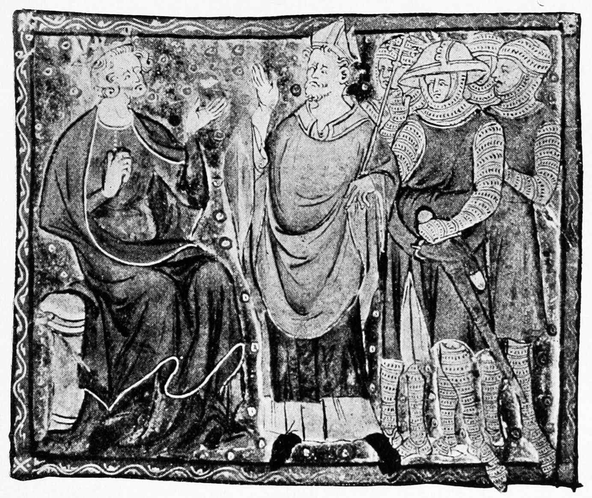
HENRY II DISPUTING WITH BECKET
(From Cott. M.S. Claud. Dii)
and that to inflict a further punishment after degradation would be to punish a man twice for one offence; they would therefore only consent to the “ancient customs,” of which they denied the antiquity and legality, “saving the rights of their order,” or in other words reserving the liberty to interpret them as they pleased. The king at once broke up the council, deprived Becket of the custody of the honours of Eye and Berkhamstead, and withdrew the young Prince Henry from his care. An interview between the king and the archbishop outside Northampton did not mend affairs, but by the advice of Arnulf, Bishop of Lisieux, Henry adopted the policy of detaching the bishops from Becket and gradually isolating him. Bishop Hilary of Chichester had from the first been willing to accept the customs, and Gilbert Foliot of London, and Roger, Archbishop of York, lent their aid, more from dislike of the primate than from approval of the king’s schemes. Finding himself almost unsupported the archbishop listened to the arguments of the papal nuncio, Philip, Abbot of Aumône, and Robert of Melun, Bishop-elect of Hereford, and agreed to withdraw the obnoxious reservation and accept the customs. Not content with the verbal promise thus made before him at Oxford, Henry determined to have the acceptance of the customs formally and publicly ratified, and accordingly he summoned a great council to meet at Clarendon in January 1164.
At this Council of Clarendon were present the{66} peers, both spiritual and lay, in full force; the Earls of Cornwall, Leicester, Hertford, Essex and Chester, Arundel, Salisbury and Ferrers; the Counts of Brittany and Eu; Richard de Lucy, the justiciar; Richer of l’Aigle, Becket’s old patron; Simon Fitz-Peter, the insulted justice, and the representatives of such great families as Bohun, Mowbray, Braose, Warenne, Cheyney, Beauchamp, and Dunstanville, all of whom gave their assent to the code of laws now presented on the king’s behalf as embodying the customs of the realm concerning the Church prevalent in the time of his grandfather, Henry I. The prelates had apparently expected that they would be called upon to promise obedience to certain vague and undefined “ancient customs,” which could be subsequently eluded by denying that any particular regulation which infringed their privileges rightly belonged to that category. When they heard the very definite and exact claims advanced by the Crown they met the demand for their assent with an absolute and united refusal, as was indeed to be expected.
The details of these Constitutions of Clarendon will be discussed elsewhere, but the main points were, briefly, as follows. The claim, already referred to, that clerks might be accused before a lay judge, and if condemned and degraded by the ecclesiastical court, the proceedings in which were to be watched by one of the king’s justices, might be sentenced as laymen. That appeals might be made from the bishop’s court to that of the archbishop and from{67} the latter to the king, without whose leave no appeal should be made to the Pope; to strengthen this latter provision it was ordained that no ecclesiastic should leave the kingdom without the royal licence. That no tenant-in-chief should be excommunicated or his lands interdicted without the king’s leave; that pleas touching advowsons should belong to the king’s courts; and that the sons of villeins should not be ordained without the permission of their lords. Becket, as leader of the Church party, rejected the customs completely. He reasserted the finality of sentences passed in ecclesiastical courts, and declared that the proposed sentencing of the condemned clerk by the lay court would be “to bring Christ before Pilate a second time.” The prohibition of papal appeals he denounced as contrary to the consecration oaths of the bishops, by which they were bound to allow such appeals, and the restriction on the passage of the clergy across the seas he declared would place them in a position of inferiority as compared with laymen and would discourage pious pilgrimages. Finally, on the whole question he took up the uncompromising attitude that the Church was the giver of laws and the ruler of kings, and that human laws which interfered with its privileges were of no effect.
Negotiations were opened on the king’s behalf by the Bishops of Norwich and Salisbury, who pointed out to Becket the probable consequences for all the prelates of inflaming the king’s anger, which con{68}sequences they themselves would be the first to feel, as they were out of favour with Henry. Their representations proving of no effect, the Earls of Cornwall and Leicester besought him to consider the difficult position in which they and other peers, faithful sons of the Church, would be placed if the king persisted in his demands to the point of ordering the arrest and trial of the archbishop. Finding him obdurate they withdrew, and the next attempt at effecting a compromise was made by two knights of the Order of the Temple, Richard de Hastings, the English Grand Master, and Otes de St. Omer. Combining in themselves the attributes of knights and ecclesiastics, they were well suited to act as arbitrators, and their arguments appear to have had some effect; so that when at last the impatient crowds of courtiers began to threaten and show signs of violence, the wearied archbishop broke down under the strain and condescended to an unworthy act of casuistry. Turning to his astonished fellow prelates he exclaimed, “If the king insists upon my perjuring myself I must do so, and must hope to purge the sin by future penance.” Proceeding to the king’s council chamber he declared his acceptance of the customs, “honestly, in good faith and without deceit,” and at his command the bishops also signified their consent. Henry at once demanded that Becket should swear to observe the customs, and should affix his seal to a written copy thereof. To the first demand Becket replied that a priest’s word was as good as an{69} oath, while the question of sealing he managed to waive for the time being, accepting a copy of the customs by way of protest. Following up his victory, Henry caused both archbishops, of Canterbury and York, to write to the pope desiring him to confirm the customs. This they did, to please the king, knowing well that the pope would refuse to sanction any such infringement of the Church’s privileges. At the same time Henry desired the pope to appoint the Archbishop of York legate for all England. Alexander, while refusing to confirm the customs, granted the legation to Archbishop Roger, but by exempting Becket and the church of Canterbury deprived the grant of its point. Henry indignantly returned the letters of legation and refused a further offer of the legation for himself.
Becket left Clarendon deeply humiliated at his own weakness, and even went so far as to suspend himself from the performance of divine service for a time. A letter to the pope explaining and lamenting his action received a sympathetic reply virtually absolving him from the promise which he had made but had never intended to keep. Not content with this, however, he determined to visit the papal court, at this time established at Sens, in person, and actually set sail from Romney with that intention, but was foiled in his attempt to cross the Channel by contrary winds, coupled with the boatmen’s fear of incurring the king’s anger. This infringement of one of the articles of the Clarendon Constitutions was{70} reported to Henry, and served to embitter him yet more against Becket and to precipitate the crisis which now arose. One of the king’s officers, John the Marshal, having brought an action in the archbishop’s court touching an estate held of the manor of Pagham in Sussex, being defeated in his claim availed himself of the section in the Constitutions which permitted an appeal to the king, and made such an appeal, taking oath that justice had not been done to him. The archbishop was accordingly ordered to attend and answer the plea at Westminster on 14th September 1164. On that day Becket was unwell, and sent four knights with letters from himself and from the sheriff of Kent testifying that he was ill, and alleging that John’s case ought to be set aside as he had deceitfully sworn upon a tropiary, or hymn-book, instead of upon the Gospels. The king vowed that Becket’s plea of illness was false, stormed at the knights, refused to listen to them, and named a fresh day, 6th October, for hearing the suit at Northampton. By this time the breach between the once inseparable friends had so widened that the king would not send even formal documents direct to the archbishop, as to do so would involve addressing him with a polite formula of salutation which was very far from expressing his real feelings. For the council to be held at Northampton, therefore, Becket, instead of receiving the personal summons due to his rank, was summoned through the sheriff, and{71} when he greeted the king at Northampton he was refused the kiss of welcome.
John the Marshal was absent on the king’s business at the Exchequer on the first day of the council, but next day he duly appeared in court, and Becket was ready to answer him. Henry, however, swept aside Becket’s arguments and pleadings, accused him of contempt of court for not having appeared in person on the previous occasion, and demanded sentence against him. The court, fearing the king and considering that Becket had been guilty of contempt, condemned him to be “at the king’s mercy.” Theoretically this meant that he forfeited all his chattels to the king, but in practice the forfeiture was commutable for a fixed sum, which varied in different parts of the country: for a citizen of London the fine was a hundred shillings, for a man of the privileged county of Kent only forty shillings. In this case, however, the court arbitrarily departed from the established custom and pronounced sentence of complete forfeiture. To decide on the verdict was one thing, to pronounce sentence against the head of the English Church was another; the barons declined to do so, and said it was clearly a task for the spiritual peers; the latter retorted that they could not be expected to sentence their own head; but finally by the king’s order sentence was pronounced by the aged Bishop Henry of Winchester, a thorough supporter of Becket’s ecclesiastical policy. Hardly{72} had this been done when Henry demanded of the archbishop an account of three hundred pounds owing for the honours of Eye and Berkhamstead which he had held of the king’s grant. Thomas very rightly replied that he had had no notice of any such demand, and further stated that he had laid out the whole amount, and more, in building operations on the king’s behalf. So far as Berkhamstead is concerned, the Pipe Rolls seem to show that all arrears due to the king had been paid the previous year; but as the honour of Eye was not accounted for while Becket held it as chancellor, it is possible that there might have been some foundation for the claim, though nothing could justify the way in which it was advanced. Whatever the rights of the case the verdict was, of course, against Becket, and when he protested against the indignity of being called upon to find sureties for payment he was told that his goods having been declared forfeit he was no longer a man of substance. Accordingly, the Archdeacon of Canterbury became his surety for one hundred pounds, and the Earl of Gloucester, the Count of Eu, and William of Eynesford for one hundred marks apiece.[26]
Next day Henry renewed his attack upon the same lines, demanding back five hundred marks which he had lent Thomas as chancellor at the time of the Toulouse expedition, and calling for an account of all the issues of vacant sees and abbeys which had{73} been in his custody during the period of his chancellorship. The king’s intention of breaking the archbishop by fair means or foul was now so clear that the time-serving lords who had till lately been proud to pay court to Becket now avoided him; his old friend and supporter the Bishop of Winchester advised him to resign his see, and Hilary of Chichester urged the same course, which other counsellors as strongly discountenanced. Worn out by the strain, Becket fell ill and was unable to appear in court on the sixth day, Monday, 12th October; Henry again disbelieved his excuse, and sent a number of barons to see him and report. Thomas undertook to come next morning even if he had to be carried in a litter. He now determined to bring matters to a crisis and prepared to face the worst. His preparations were significant, if somewhat theatrical. Early in the morning he went into the chapel of St. Andrew’s Priory, where he was lodging, and going to the altar of St. Stephen celebrated the mass of the proto-martyr. After this his intention had been to proceed to the court in full canonicals, barefooted and carrying his own cross; from such an ostentatious defiance to the king to do his worst his friends managed to dissuade him, and he rode in the usual way to the castle. But when he had dismounted at the entrance to the hall he took the processional cross from the hands of Alexander Llewellyn, his Welsh cross-bearer, and insisted upon carrying it himself. Such a plain challenge to the king, signifying his{74} appeal to the protection of the Cross from the royal injustice and violence, horrified his followers. The Archdeacon of Lisieux besought the Bishop of London to prevent it; Foliot replied, “My good friend, he always was a fool and always will be!” Nevertheless he attempted to dissuade the archbishop from his fatal course, claiming the right to carry the cross himself, as Dean of Canterbury, and even endeavouring to wrest it from Becket by force. Finding his efforts of no avail he desisted, contenting himself with the remark that if the king now drew his sword they would make a fine pair. Becket then entered and seated himself apart, holding his cross and attended by Herbert of Bosham and William Fitz-Stephen. Meanwhile the bishops had been called in to speak with the king, and Becket’s old enemy, Roger, Archbishop of York, had availed himself of the opportunity to insult his fallen rival by having his archiepiscopal cross carried before him, a deliberate infringement of the privileges of the see of Canterbury, within whose province Northampton lay.[27] While the course that events would take was still uncertain, Becket’s attendants were giving him very contradictory advice: Herbert of Bosham, the fiery theologian, counselled him to hurl the thunders of excommunication against his enemies if they dared to offer violence to his person, but the cautious and{75} level-headed lawyer, William Fitz-Stephen, deprecated such a course and urged him to imitate the saints of old and suffer wrong with meekness and patience.
The archbishop having inhibited the bishops from sitting in judgment upon him for any plea touching matters prior to his consecration, and having also appealed to Rome against the excessive and unprecedented sentence of forfeiture, Gilbert Foliot at once lodged a counter appeal and Bishop Hilary of Chichester protested against Becket’s breach of the Constitutions, which he, and at his suggestion all the bishops, had so recently promised on their priestly word to obey “honestly, in good faith and without deceit.” Becket’s defence was to the effect that the very qualifying words which Hilary quoted justified his action, for nothing could be observed in good faith that was contrary to the Christian faith, or honestly which was against the Church’s honour; adding that if they had shown weakness at Clarendon it was the more necessary that they should be strong now. Finding all hope of compromise gone, the king sent the Earl of Leicester to pronounce sentence upon the archbishop. The sentence would most probably have involved imprisonment, but it was never pronounced, for Becket indignantly ordered the earl to desist from uttering sentence against his spiritual father, further declaring with justice that he had been summoned to answer only in the case of John the Marshal and could not be called upon to{76} account for all his doings as chancellor without summons, especially as at the time of his consecration the king’s ministers had expressly undertaken that he should not be called to account for any of his acts as chancellor.
The earl retired abashed, and after a decent interval Becket rose and, still carrying his cross, left the hall. As he went he stumbled against a faggot, and Randulf de Broc cried out that he stumbled like the traitor that he was. The taunt of traitor was taken up and repeated in particular by Hamelin, the king’s illegitimate brother, now Earl of Surrey and Warenne by his marriage with the Countess Isabel. Turning angrily on the earl, Becket exclaimed, “If it were not for my cloth I would show you whether I am a traitor or not!” The clamour reached the king’s ears, and he at once sent a messenger to proclaim that no one was to insult or molest the archbishop. He accordingly reached his quarters at St. Andrew’s safely, and while seated at supper meditating upon his further course of action he received an omen which confirmed the intention, already half formed in his mind, of flight, for in the evening lection occurred the passage, “If men persecute you in one city, flee unto another.” As he heard this phrase read out, Thomas looked across significantly at Herbert of Bosham, and as soon as he had an opportunity of speaking to him in private he bade him hasten to Canterbury, obtain as much money as possible from the archiepiscopal estates, and then cross to the monas{77}tery of St. Bertin at St. Omer and await his coming. Then he expressed his intention of keeping vigil throughout the night in the church, refusing the proffered company of the monks; and a little before daybreak he stole away in disguise under the guidance of a canon of Sempringham, with only two other companions.
When Henry heard next morning of the archbishop’s flight he sent orders to Dover and other ports to prevent his crossing, and then turned with some relief to the business of the approaching expedition against the Welsh. Meanwhile Thomas, knowing that search would be made for him in Kent, had turned north, reaching Grantham on the first day, and then on to Lincoln, where he stayed at the house of a fuller. From Lincoln he went by water to Sempringham Priory and so to Boston. Probably finding that that port was watched, he turned south, and after visiting Haverholme proceeded by unfrequented paths into Kent, travelling chiefly at night, and for a week lay hidden at Eastry, until on the evening of 2nd November circumstances enabled him to set sail. After a rough voyage he landed in Flanders near Gravelines; but he was not yet in safety, for Henry, whose embassy to the papal court had just crossed the Channel, had warned the Count of Flanders of the possibility of Becket’s landing in his territory, and the count bore the archbishop ill-will for the opposition which he had offered to the marriage of the Abbess Mary of Boulogne to the{78} count’s brother. Worn out by the hardships of the sea voyage Thomas found himself unable to walk, and the only means of conveyance obtainable proved to be a pack-horse. Laying their garments in place of the lacking saddle his companions lifted the weary archbishop on to the horse, and in this humble guise he, whose gorgeous cavalcade had once been a nine days’ wonder, entered Gravelines. Yet, though in poor dress, treated by his companions with a careful absence of ceremony and passing as “Brother Christian,” there were little distinctions between him and his friends which nothing could efface, and which did not escape the notice of the innkeeper at whose house he put up. The man and his servant, who also recognised the archbishop, proved honest, and Thomas safely accomplished the remainder of his journey to St. Omer. Here he met not only his faithful Herbert of Bosham but also the justiciar, Richard de Luci. The justiciar having vainly endeavoured to persuade Becket to return to England, promising him his own good services with the king, formally renounced all allegiance to him and departed.
To follow the course of the struggle between king and archbishop during the six years of Becket’s exile in detail is a wearisome and unprofitable task. Constant efforts at mediation, incessant appeals and counter-appeals to Rome, broadcast excommunications involving the most prominent men at Henry’s court and all who had dealings with them, till hardly a person of eminence stood outside the Church’s ban,{79} mutual recriminations, and anything and everything except reason and compromise. The king’s absolute insistence upon the Constitutions of Clarendon was met by Becket with a blank refusal. So far as we can judge Henry might have been persuaded to accept a compromise had the archbishop shown the least inclination to meet him half-way, and such a course would certainly have had powerful support from the wiser and more temperate royal officers. As it was, it is remarkable that, while a considerable number of prominent ecclesiastics were in opposition to Becket, he does not seem to have had the support of a single English or Norman layman of any eminence.
Henry, in a moment of anger at Becket’s flight, had sent an imperious letter to King Louis demanding the return of Thomas, “late Archbishop of Canterbury”; Louis inquired, with some justice, who had deposed the archbishop, adding that he in his kingdom could not displace the meanest clerk; the request for the return of Thomas he refused, going out of his way to offer the fugitive cordial hospitality. Henry’s embassy to the pope at Sens, consisting of the Archbishop of York, the Bishops of Chichester, London, and Worcester, the Earl of Arundel and others, met with equal unsuccess. The archbishop and the Bishops of London and Chichester all spoke with great vehemence against Becket, but the papal court was more amused at certain slips of accent and construction in their Latin than convinced by{80} their argument, and it was only the calm and reasoned speech of the Earl of Arundel, who spoke in his native French, that produced any impression. The pope refused to do anything until Becket had come to state his own case, and the embassy, having strict orders to return at once, withdrew. Thomas on his arrival produced his copy of the Constitutions, which the pope had not previously seen. They were, naturally, declared to be intolerable infringements of the rights of the Church and St. Peter, and the pope sternly rebuked Thomas for ever having given his consent to them. At this time, apparently, Becket surrendered the primacy into the pope’s hands, receiving it back again from him. By so doing he was not only confirmed in full possession of the see but was in the position to deny that he owed his archbishopric to the king. Pope Alexander was now very awkwardly placed, for while his position as head of the Church compelled him to uphold Becket, his recognition as pope had been largely due to Henry’s support, and if that support were withdrawn and given to the schismatic antipope, Alexander’s hold on the papacy would be dangerously weakened. The reality of this danger was soon made clear, when, in May 1165, Henry’s ambassadors, Richard of Ilchester, Archdeacon of Poictiers, and John of Oxford, who were present at the Emperor Frederic’s council at Wurzburg nominally on business touching the proposed marriage of Henry’s daughter Maud, virtually pledged their royal master{81} to support the emperor and the antipope against Alexander. Feeling, however, ran too strongly against Henry in this matter, and he had to repudiate the action of his ambassadors.
The pope, cautiously avoiding a complete breach with Henry, declared that certain of the Constitutions were quite inadmissible but that others were tolerable, and, by refraining from any definite pronouncement as to any particular sections, left an opening for negotiations. At the same time he attempted to bring the king to reason through the mediation of the Bishops of London and Hereford, Archbishop Rotrou of Rouen, and the Empress Maud. But matters had already gone too far for any friendly arrangement to be possible. Becket, who after his interview with the pope had established himself, in December 1164, at the Cistercian abbey of Pontigny, was determined to yield nothing, and had already commenced the campaign of letters, argumentative, mandatory, supplicatory and threatening, with which he disturbed the peace of Western Europe for the next five years; and Henry, at his Christmas council at Marlborough, had retorted by confiscating the property of the see of Canterbury. Not content with this legitimate seizure of the archbishop’s revenues, the king extended his attack to all persons connected with Becket by family or official ties, and all his poor relations and such of his clerks as had proved themselves faithful to his cause were stripped of their possessions and sent into exile{82} under a vow to join their patron. This step, designed to worry Becket and to strain his already straitened finances, seems to have owed its full rigour if not its inception to Ranulf de Broc, into whose hands the property of the see had been committed, and was opposed by Bishop Hilary of Chichester on the ground that, while so manifestly unjust an act would put the king in the wrong, the chief effect would be to strengthen Becket by surrounding him with a crowd of faithful servants.
During the year 1165 little worthy of note occurred, but with the spring of 1166 Becket began to adopt more vigorous measures. Assured in his own mind of the support of the pope, who on 24th April appointed the archbishop Legate of England, Thomas wrote three successive letters to King Henry, couched in language of increasing severity, warning and threatening him. The king, who was at Chinon, could only tie Becket’s hands by an appeal to Rome against his threatened action, and accordingly sent the Bishops of Séez and Lisieux to Pontigny to give notice of his appeal. On their arrival at Pontigny on Ascension Day, 2nd June, they found that Thomas had gone to Soissons to visit the shrine of St. Drausius, a favourite resort of persons about to fight a judicial duel. Invigorated by his visit to the combative saint, Becket went on to the abbey of Vézelay, and on Whitsunday, 22nd June, to the astonishment and dismay of his unsuspecting companions, publicly excommunicated Richard de Luci{83} and Joscelin de Bailliol as authors of the Clarendon Constitutions, Richard of Ilchester and John of Oxford for taking part with the schismatics at Wurzburg, John of Oxford being further condemned for accepting the Deanery of Salisbury in spite of prohibition, and Randulf de Broc and others for usurping the possessions of the church of Canterbury, while the king himself was threatened with a similar fate. The sentences created little excitement outside the circle of Becket’s own audience; most of those against whom they were fulminated were becoming seasoned to excommunication, and the king was sustained by the comfortable knowledge that the pope would support him. In the previous May Henry had given orders for a levy throughout his dominions on behalf of the Crusade, and some months earlier he had shown further evidence of his zeal for the Church by presiding at Oxford over a council which condemned a little band of German or Flemish heretics who had settled in England. These heretics, humble weavers under the leadership of one Gerard, seem to have held opinions similar to those of the Waldensian Protestants; they met with little or no success in their missionary efforts, and, having refused to recant, were branded and scourged and turned out into the snow, to perish of cold and hunger. Fortified with the knowledge of his good services to the Church, Henry did not even hesitate to appoint the excommunicate John of Oxford as envoy, with John Cumin and Ralph of{84} Tamworth, to the papal court. On their arrival Pope Alexander gave them a friendly welcome, absolved John of Oxford and confirmed him in possession of the Deanery of Salisbury, quashed Becket’s sentences and ordered him to refrain from molesting the king, at the same time promising to appoint commissioners to arbitrate between the king and the archbishop.
Towards the end of the year 1166 Henry had been successful in procuring Becket’s removal from Pontigny by threats against the Cistercian order. His star was distinctly in the ascendant, and he could afford to await with equanimity the long-delayed arrival of the papal commissioners, the cardinals Otto and William of Pavia. Becket, on the other hand, was angered by the pope’s action and especially by the appointment of Cardinal William, and expressed himself with a vehemence which even his friend John of Salisbury considered excessive. The enormous mass of correspondence concerned with the Becket controversy which has been preserved is throughout remarkable rather for vigour than elegance. In letters which are a mosaic of quotations and reminiscences from the Vulgate, with an occasional phrase from a classical poet, the writer’s adversaries are compared to the most notorious villains of Scripture, while contempt is poured on them by means of sarcastic puns, Richard de Luci, the great justiciar, becoming “Luscus”—the one-eyed or half-blind—and the Archdeacon of Canterbury{85} figuring as the “archdemon.” The whole correspondence breathes a spirit of intolerance which augured ill for the efforts of would-be mediators. Of these mediators the one of whom most might have been hoped, Henry’s mother, the Empress Maud, died at Rouen on 10th September 1167. As a devoted daughter of the Church she had condemned the excessive severity of her son’s anti-clerical legislation, though as “a daughter of tyrants” she had approved the general trend of the Clarendon Constitutions. Her influence with Henry was great, and if compromise had been possible it would no doubt have been exerted to that end, but, as it was, she could do nothing beyond such moderating measures as interfering on behalf of an imprisoned and tortured bearer of papal letters.
When the papal legates at last opened negotiations in November 1167, by an interview with the archbishop at Planches on the borders of France and Normandy, they found him resolute to agree to nothing without the addition of the disputed phrase “saving the liberty of the Church,” and all their arguments were useless. When they made their report to Henry he dismissed them angrily with some uncomplimentary remarks on the subject of cardinals. A renewed appeal by the English bishops tied Becket’s hands till November 1168, and in May of that year the pope remonstrated with him and ordered him to take no action against the king until the beginning of Lent, 5th March 1169. At the{86} same time Alexander made an effort to bring matters to a settlement by appointing two monks, the Prior of Mont Dieu and Simon de Coudre of Grammont, as commissioners. They did not act until 7th January 1169, when Henry and Louis met at Montmirail to negotiate a treaty. Becket was with the French king, and when the commissioners had presented to Henry a letter from the pope urging him to a speedy reconciliation, the archbishop came forward with every appearance of humility and expressed his desire for peace. Henry was willing to receive him back into favour if he would undertake to act loyally, but Becket would only pledge himself to obedience “saving the honour of God,” or in other words “the liberty of the Church.” In vain Henry offered him every right and possession that his predecessors in the see of Canterbury had held, provided that he would obey the laws that they, many of them saints, had obeyed. A suggestion that Thomas should return to his post without any definite mention being made of the Constitutions, with a tacit understanding that the more objectionable sections should be modified, was also rejected, and the conference broke up.
Shortly after this the commissioners presented to Henry letters from the pope couched in stern language and warning him of the consequences if he did not soon come to terms with Becket. Nevertheless Alexander was not prepared to take extreme measures, and accordingly he appointed yet other mediators,{87} the Cardinals Gratian and Vivian, and wrote to Becket ordering him to take no action against the king or his supporters until they had performed their mission. Before this order reached the archbishop at Sens, where he had fixed his headquarters since his expulsion from Pontigny, he had availed himself of the expiration of the term of inaction previously set him, and early in March excommunicated the Bishop of Salisbury, Earl Hugh of Norfolk, and other offenders, laymen and clerks, following this up on Palm Sunday, 13th April, with the excommunication of the Bishop of London and the announcement of a similar fate in store for Geoffrey Ridel, archdeacon of Canterbury, Richard of Ilchester, Richard de Luci, and others. Anticipating his action the two bishops had already made provisional appeals to the pope, while precautions were taken to prevent the delivery of the notice of excommunication. But on Ascension Day, 29th May, during the celebration of mass in St. Paul’s, a young Frenchman, Berenger by name, under pretence of making an oblation, handed to the priest celebrant the archbishop’s letters, charging him to deliver them to the Bishop of London and publicly denouncing the latter excommunicate. Bishop Foliot, while accepting the sentence as valid, renewed his appeal to the pope, who strongly disapproved of Becket’s action and ordered him to suspend his sentences until the nuncios had seen the king.
Gratian and Vivian reached Damfront on 23rd{88} August, and next day had an interview with the king, in which he endeavoured to dictate to them, insisting that the excommunicates should be absolved at once. For a week no progress was made, but on 31st August, at Bayeux, Henry undertook that if the excommunicates were absolved at once he would receive back the archbishop and his friends and allow him to hold his church and former possessions “to the honour of God, of the Church, of the king and of the king’s sons.” Next day, however, he insisted upon the further significant addition of the phrase “saving the dignity of my realm.” Even to get so far as this had proved a difficult task. The meeting had been held in the open air, and twice Henry had mounted his horse and turned to ride off in a rage, expressing his contempt for the nuncios and their threats of excommunication and interdict. A proposal to counterbalance the “dignity of the realm” with “the liberty of the Church” having failed, negotiations were broken off. Becket, as papal legate for England, having threatened to lay England under the dread sentence of interdict, by which all public services and religious ministrations were suspended, Henry issued orders that the bearer of such a sentence and any persons who obeyed it should be held guilty of high treason, at the same time prohibiting all monks and clergy from crossing the seas without his leave, and ordering the search of all laymen coming into England from foreign countries. He further consented to another meeting{89} with the archbishop at Montmartre, whither he had gone to visit King Louis.
The negotiations at Montmartre in November 1169 turned chiefly upon the question of the restoration of Becket’s estates. While the king was willing to restore him to the possession of what he held when he left the country, Thomas insisted upon full payment of all arrears, the surrender of certain disputed estates and the displacement of such clergy as had been presented by the king to Canterbury livings during his exile. Offers of arbitration were refused by Becket; and, while Henry consented that he should have all that his predecessors had on the same terms by which they held, his promise of due service to the king was qualified by the obnoxious phrase, “saving the honour of God.” Henry therefore refused Becket the “kiss of peace,” and the conference broke up. The terms offered by Henry appear to have made a favourable impression upon Pope Alexander, and he determined to make a final effort for a settlement on those lines. Accordingly, in the early spring of 1170, the Archbishop of Rouen and the Bishop of Nevers were appointed to negotiate; the Canterbury estates were to be restored in full, but the question of arrears might be waived; there was to be no reference to the Constitutions, and the kiss of peace was to be given by either the king or his son. If Henry refused to come to terms sentence of interdict should be laid upon his continental domains.
Negotiations remained for some little time in abeyance, as Henry had crossed to England, for the first time for four years, landing at Portsmouth on 3rd March, after a stormy passage during which at least one of his forty ships was lost. The chief matter necessitating the king’s return to England was his intention of establishing the succession to the throne beyond all doubt by the coronation of his eldest son, Henry, now sixteen years old. The need for this coronation of the heir during his father’s lifetime, for which precedents could be found on the Continent but not in England, is far from clear, and its ultimate results were to prove disastrous. The most immediate result was the creation of a fresh grievance for Becket. It would seem that the pope, willing to please Henry and not knowing that the right to crown kings was a privilege of the Archbishops of Canterbury, had granted permission for the Archbishop of York to crown the young Henry, or else such permission had been granted during the vacancy of Canterbury in 1162. When the news of the proposed coronation reached Becket he wrote letters to Archbishop Roger and the English bishops in general prohibiting them from officiating, and similar letters were sent by the pope; but none of these appear to have been delivered, and on Sunday, 14th June, the younger Henry was crowned at Westminster by Archbishop Roger, the Bishops of London, Durham, Salisbury, and Rochester assisting. For some reason the young king’s wife, Margaret,
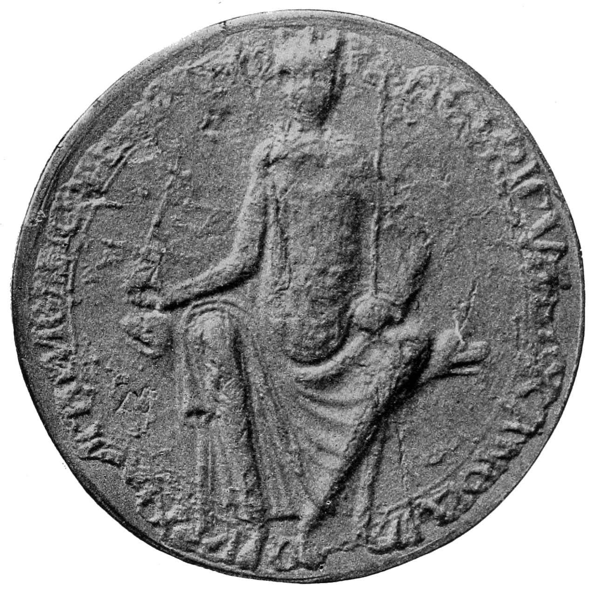
SEAL OF THE “YOUNG KING” HENRY (1/1)
had not been crowned with him, although a royal outfit had been provided for her,[28] and she had been ordered to hold herself in readiness at Caen, where the queen was in residence. The omission was taken by Margaret’s father, King Louis, as a deliberate insult, and was possibly so intended; but it is far more probable that Henry had intended her to be crowned with her husband, but had been obliged to hasten the coronation in order to avoid the publication of the prohibitory papal letters.
Returning to Normandy, Henry met the papal commissioners at Falaise and
agreed to accept the terms which they proposed. They then had an
interview with Becket and persuaded him to come to Fréteval, where the
French and English kings were to hold a conference. On 22nd July,
therefore, Thomas rode out to meet Henry. The king was in an excellent
temper, and as soon as he saw the archbishop he pressed forward, doffing
his cap and saluting him affectionately. The two then withdrew and held
a long private consultation. Becket began by reproaching Henry for his
action in regard to the coronation. The king defended himself, pleading
historical precedents, which Becket rejected as unsound, and producing
papal letters granting leave for the Archbishop of York to crown the
young Henry; these letters, however, dated from 1162, when, as we have
seen, some such coronation was mooted if not actually performed, and
were issued{91}
{92} during the vacancy of the see of Canterbury. In the end
Henry promised to do justice in the matter, and added some ambiguous
remarks to the effect that he would punish all who played either him or
the archbishop false. No word was said about the Constitutions, but the
king promised to restore to Becket all that he had held three months
before the date of his exile and to receive him and his friends back
into favour. Becket dismounted and knelt before the king, but the latter
leapt from his horse, raised the archbishop and held his stirrup while
he remounted. The two old friends, once more united, rode back together
and announced the conclusion of peace, to the amazement of all; and even
a passage of arms between the excommunicate Archdeacon of Canterbury and
Becket, due to the latter’s refusal to reciprocate the king’s general
amnesty by absolving the excommunicates, was not allowed to disturb the
serenity of the atmosphere. The only cloud was the king’s persistent
refusal of the kiss of peace, based on the rash oath which he had sworn
in the presence of the French that he would never give it. On this Henry
was resolute, though he expressed his willingness to kiss “his mouth,
and his hands, and his feet a hundred times” when he returned to
England. So much importance did Becket attach to this symbolic act that
he endeavoured to obtain the kiss by a ruse at Amboise in October. For
this purpose he came to the chapel where Henry was going to hear mass,
in the course of which service{93} the king would be obliged to give the
ceremonial kiss; but, warned by the much excommunicated Nigel de
Sackville, Henry ordered the celebration of a mass for the dead, in
which the ceremony of the pax is omitted.
About this time Henry wrote to the young king and the regency council in England announcing the conclusion of peace between himself and the archbishop, and ordering the restoration of the former possessions of the see and the holding of a judicial inquiry into the question of the honour of Saltwood. Early in November the king sent a message to Becket regretting that military affairs in Auvergne prevented his meeting him at Rouen, but urging him to delay his departure no longer, and appointing John of Oxford, Dean of Salisbury, to accompany him. Becket accordingly proceeded to Witsand, whence he was to cross to England. During the previous three months he had been busy corresponding with the pope, and had procured from him letters suspending and excommunicating the Archbishop of York, the bishops who had taken part with him, and the inevitable Archdeacon of Canterbury. The sentence against York, London, and Salisbury, Becket despatched from Witsand to Dover, where those prelates happened to be, before his own departure. At last, on 1st December 1170, the archbishop set sail, and, avoiding Dover, landed at Sandwich. Here he was met by Randulf de Broc, Reynold de Warenne, and Gervase of Cornhill, sheriff{94} of Kent. Their threats of violence were restrained by John of Oxford, and after reproaching the archbishop for coming into the realm with fire and sword they suffered him to proceed to Canterbury, where he was joyfully welcomed by the clergy and populace.
The messengers whom he had sent over after the conclusion of peace between himself and the king had warned him that the estates of the see had been plundered, and their appeal to the royal officers for the promised restoration of property had been postponed long enough to enable the actual holders to secure the rents payable at Michaelmas. Becket now found that most of the Christmas rents had been anticipated, and the manors so thoroughly pillaged that nothing but empty barns and ruinous houses remained. He had, however, other matters to occupy his mind: the representatives of the censured prelates came to him desiring him to absolve their masters. So far as Archbishop Roger was concerned Becket professed inability, the pope having reserved his case to himself, but he was ready to absolve the Bishops of London and Salisbury, conditionally on their undertaking to submit to the pope’s demands. This they were willing to do, but they were dissuaded by Archbishop Roger, and all three went over to Normandy to make complaint to the king. Becket, anxious from personal affection as well as from policy to pay his respects to the young king, sent Richard, Prior of St. Martin’s, to Winchester to announce his intention, and presented Henry with{95} three magnificent chargers gaily caparisoned. The king, or rather his council, declined the archbishop’s proffered visit, but undeterred he started for Winchester, intending after his visit to the court to make a tour of visitation throughout his province. The first night he spent at Rochester and the next at the Bishop of Winchester’s house in Southwark, but here he was met by Joscelin of Arundel, brother of Queen Adelisa, who ordered him to return to Canterbury. This he did, taking with him a small escort of some five or six men-at-arms. The existence of this escort was magnified by his enemies into a charge of riding about with a great army to capture the king’s castles, but it was certainly necessary, for threats were being openly made against his life, and the Brocs at Saltwood were indulging in a regular campaign of outrage and insult. They seized his wine, they hunted in his preserves, poached his deer and stole his hounds, and as a culminating insult cut off the tail of his pack-horse.
Becket was not a man to suffer insult patiently, and on Christmas Day he preached in the cathedral, and, after alluding to the probability of his murder, delivered a furious denunciation of his enemies, and excommunicated Robert de Broc and a number of other offenders. The news of his action was at once conveyed to King Henry, who was keeping Christmas at Bur-le-Roi, near Bayeux. Infuriated by this fresh breach of the peace, Henry uttered a wild tirade against the upstart priest and against{96} his courtiers who sat idle and allowed their master to be insulted without avenging him. Four knights, William de Tracy, Hugh de Moreville, Reynold Fitz-Urse, and Richard le Breton, determined to gain the king’s favour by the murder of the archbishop. Taking horse at once they made for the coast, and favoured by the wind reached Saltwood Castle on Monday, 28th December. Meanwhile Henry, while refusing to go so far as Engelger de Bohun and William Mauvoisin, who urged the archbishop’s execution, had determined on his arrest. Richard de Humet was sent to England to Hugh de Gundeville and William Fitz-John, the young king’s guardians, while Earl William de Mandeville and Saer de Quincy watched the continental ports in case Becket should try to escape. The four knights, openly proclaiming that the king had decreed Becket’s death, collected a considerable force from the garrisons of the neighbouring castles, and on Tuesday, 29th December, rode into Canterbury. Failing to persuade the town authorities to assist them, they warned them not to interfere and rode on to the palace. Striding into the room where the archbishop and his attendants were sitting, the four knights, without a word of greeting, sat down in front of him. After a pause Reynold Fitz-Urse ordered him, in the king’s name, to absolve the excommunicates and afterwards to stand his trial before the young king at Winchester. Before they delivered their ultimatum, Becket, understanding{97} that they had a private message from the king, had caused his attendants to withdraw, but he now recalled them and delivered a calm and dignified reply justifying his action and explaining his position. To their threats he replied that the king had granted him his peace, but that in any case he would never yield or waver in his obedience to God and the pope for fear of death.
The knights had entered the archbishop’s presence unarmed, and they now withdrew, uttering threats and defiance, to bring the argument of steel to bear where words had proved unavailing. The Brocs and others of their associates had seized the gatehouse of the palace and placed it in charge of Simon de Crioill and William Fitz-Nigel, the archbishop’s steward, who had joined the conspirators; Becket’s own esquire, Robert Legge, was forced by Reynold Fitz-Urse to assist in arming him, and one of the archbishop’s knights, Ralph Morin, was placed under arrest. As the armed crowd pressed forward the great door of the archbishop’s apartments was shut and bolted and for a moment they were foiled, but Robert de Broc knew the palace well, and, snatching up an axe left on the stairs by a workman, attacked a wooden partition that would give access to their victim’s room. Hearing the crash and splintering of the woodwork the monks and clerks, powerless against the mail-clad assassins, seized Becket, and in spite of his protests and resistance hurried him by a private entrance into the church. Contrary{98} to his wishes the door was shut behind him, but when the pursuers began to thunder upon it he insisted upon its being opened, that the church might not seem to be turned into a fortress. The four knights and their followers rushed in, headed by Reynold Fitz-Urse, who flung down the axe with which he had attacked the door and brandished his sword. Hugh de Moreville faced the terrified people clustered in the body of the church, while his comrades searched for their victim. In the pillared gloom of the dim evening Becket was not at first visible, and he could easily have escaped into the darkness of the crypt or by the neighbouring stairway to the safety of the roof, but hearing cries of “Where is the traitor? Where is the archbishop?” he stepped forward, saying, “Here am I, no traitor but the priest of God. And I marvel that you are come into the church of God in such guise. What will ye with me?” To their threats of instant death he replied by commending his soul to God, St. Mary, St. Denis, and St. Elphage, and their endeavours to drive or drag him out of the church he resisted with all his strength, striking William Tracy a blow which almost felled him to the ground. Tracy replied with a cut at his head, but Edward Grim, one of the only three clerks who had remained with their master, intercepted the blow with his arm. Although most of the force of the stroke was spent on Edward Grim it drew blood from the archbishop’s head. A second blow, from Reynold’s sword, drove Becket
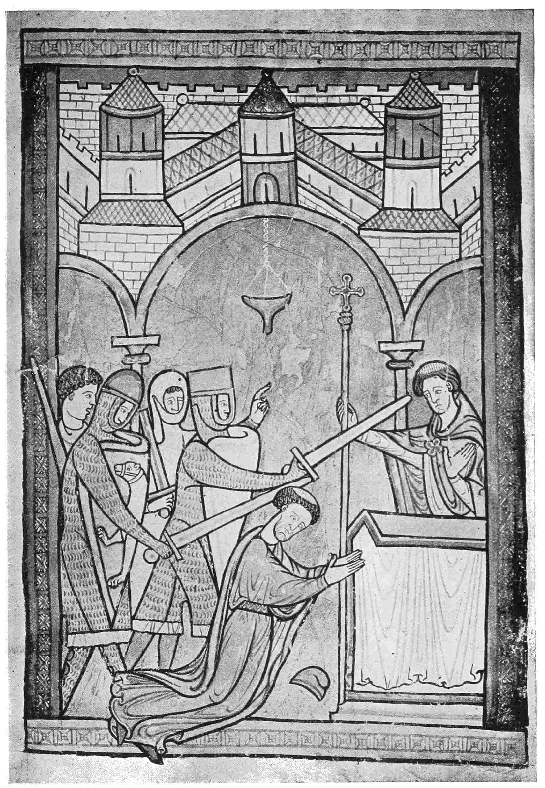
THE MURDER OF BECKET
(From Harl. MS. 5102)
to his knees, and with the third he fell with his arms stretched out towards the altar of St. Benedict. As he fell Richard le Breton struck him again with such violence that his sword broke upon the pavement, crying, “Take that for the love of my lord William, the king’s brother,” Richard having served the young William, whose early death was attributed to the foiling of his matrimonial schemes by Becket. As the assassins turned to leave the church, one Hugh Mauclerc, whose name is unknown to history save for this infamy, thrust his sword into Becket’s gaping skull and scattered his brains upon the pavement. Thus fell Thomas Becket, the obstinate and imperious archbishop, and thus rose from his dead body Thomas of Canterbury, martyr and virtual patron saint of England.
Having wreaked their vengeance on the archbishop the murderers turned to
the plunder of his palace. Everything of value they seized, sending off
a parcel of papal bulls and similar documents to their royal master.
Then they rode off, the four knights soon afterwards retiring to
Moreville’s castle of Knaresborough, while the Brocs remained at
Saltwood, whence they threatened to return to Canterbury and outrage the
martyr’s body. Hearing of their threats the monks of Canterbury, by the
advice of the Abbot of Boxley and the Prior of Dover, proceeded at once
to bury the body, which, after lying for some time neglected during the
panic which followed the murder, had been reverently placed before the
high altar.{99}
{100} Accordingly the martyred archbishop was laid in a marble
tomb in the crypt, clad in the penitential hair-shirt, which, to the
surprise of all, he was found to have worn beneath his other garments,
and in the vestments worn at the time of his ordination and preserved by
him against his burial. The church having been polluted by bloodshed,
Mass could not be said in it, and so without the rites and services of
the Church were laid to rest the remains of him whose shrine was to be
for future generations the great national centre of prayer and
pilgrimage.
When news of Becket’s murder reached Henry at Argentan on 1st January 1171, he was terribly perturbed, and, retiring to his apartments, remained for three days in solitude, fasting and reviewing the situation. It must have seemed at first as if the officious knights by their rash action had wrecked his whole policy. The murder was bound to alienate many whose sympathy would otherwise have been with the king; it would put a fresh weapon in the hands of his enemies; and, above all, it would practically force the pope into that position of direct antagonism which he had hitherto skilfully contrived to evade. To extract himself from his position without complete loss of dignity and surrender of all for which he had fought was a task worthy of Henry’s diplomatic genius. It was necessary to be cautious but prompt, for his enemies were losing no time; before Henry had resumed public life the Archbishop of Sens, legate of France, King Louis and the Count of Blois had all written to Pope Alexander denouncing Henry as the murderer, and three weeks later the Archbishop of Sens had proclaimed an interdict upon the king’s continental dominions on the{102} strength of a papal letter addressed to himself and the Archbishop of Rouen ordering such a course to be adopted in the event of the arrest or imprisonment of the Archbishop of Canterbury. Against this action the Archbishop of Rouen and the Bishops of Worcester, Evreux, and Lisieux at once appealed, and the interdict was temporarily suspended. About the end of January, when the appellants and the king’s special envoys started for the papal court at Frascati, news of the murder reached the pope. Accordingly when Richard Barre, the Archdeacons of Salisbury and Lisieux, and the other royal envoys reached Frascati they could not at first obtain a hearing, and it was generally believed that on Maundy Thursday, 25th March, the pope would excommunicate Henry and lay England under interdict. The efforts of the envoys, however, backed with the powerful argument of English gold, averted this danger, and the dreaded day brought forth only an excommunication of the actual murderers and their abettors. A month later, after hearing the appeal of the Bishops of Worcester and Evreux, Pope Alexander confirmed the sentence of interdict published by the Archbishop of Sens, but exempted the king and gave orders for the absolution of the Bishops of London and Salisbury. At the same time he announced his intention of sending legates to Henry to settle the terms of his absolution.
Henry meanwhile was preparing to carry into effect the plan which he had had to abandon in 1155{103} for an invasion of Ireland. The scheme possessed several attractions. To begin with, affairs in that island really called for his active interference; there was also the advantage that in Ireland he would be more completely out of reach of any unwelcome papal messengers than he would be in almost any other spot in the civilised world; and finally, by undertaking the reform of the Irish Church, which had been urged upon him by Pope Adrian IV., he would give to his expedition something of the nature of a crusade and would earn the gratitude of the pope.
Prior to 1166 Ireland had been practically exempt from English interference and had settled its own affairs by primitive methods of violence. Resembling their nearest neighbours, the Welsh, in many respects, the Irish were even more quarrelsome and less advanced in the social scale. Utterly lacking in political unity, their score of kings and princelets acknowledged the theoretical supremacy of their Head King, or Ard-Righ, for just so long as he could maintain his position by power of the battle-axe. The battle-axe, that excellent weapon for quick-tempered men, doing its work with complete finality in less time than a man can unsheathe sword or notch arrow to bow, was the constant companion of the Irishman and the arbiter of all his politics. By a not unusual combination the Irish were at the same time utter barbarians and consummate artists. Their poetry was of a high standard; in music no{104} nation but the Welsh could compare with them; and in metal work, carving, and painting such fragments as have come down to us show a complete mastery of the beauties of line and colour. Commerce they left to the Scandinavian settlers along their seaboard. Possessing a fertile soil and a favourable climate they lacked the industry and stability for agriculture, but grazed great quantities of cattle, which served alike for the standard of exchange, coined money not being in use, and for the objective of raids during their incessant hostilities. When St. Patrick banished the reptiles and vermin it would seem that they must have left their venom and vice behind for the use of the inhabitants of the island, for never was there a race so prone to anger, so ungrateful and so treacherous, and even the miracles recorded of their saints were more often concerned with vengeance wrought upon sacrilegious offenders than with rewards bestowed upon faithful devotees.
In this race of Ishmaelites there was one man of evil pre-eminence whose hand was against all men and all men’s against him. Dermot MacMurrogh, King of Leinster, since the beginning of his reign in 1121 had had even more than his share of fighting; his voice had grown hoarse with the shouting of his battle-cry; his borders had been enlarged at the expense of his neighbours, and the envy and hatred of rival chieftains had been incurred without gaining him the affection of his own subjects. In 1152
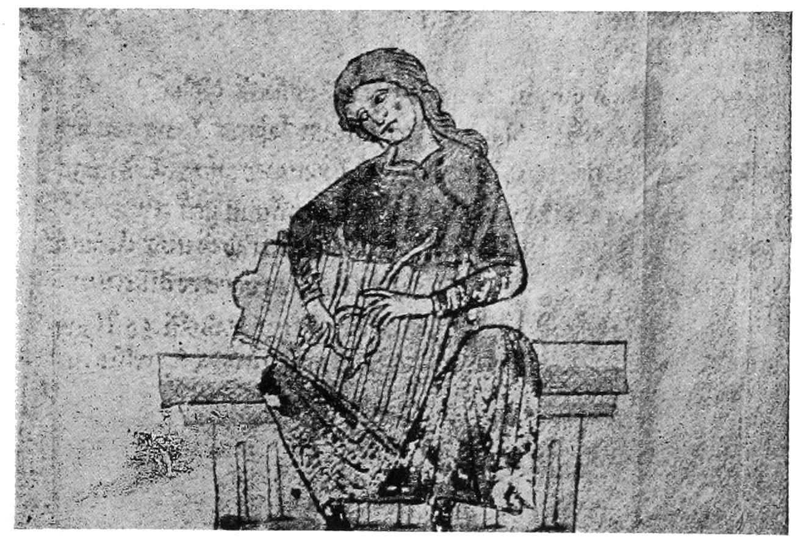
IRISH WOMAN PLAYING A ZITHER
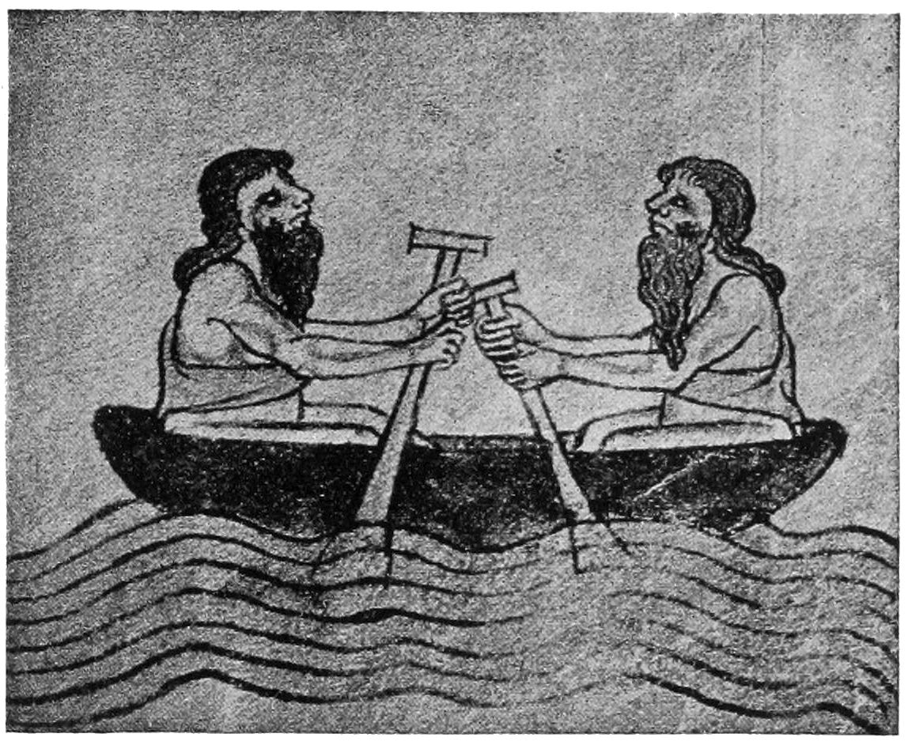
IRISHMEN ROWING IN A CORACLE
(From Royal MS. 13 B.viii)
he had carried off Dervorgille, the beautiful but middle-aged wife of Tiernan O’Rourke, King of Breifny; as the lady was well past forty and Dermot some ten years older the elopement would seem to have been less a matter of romantic passion than a studied insult to Tiernan. Dermot was speedily forced by Turlogh O’Conor, then Ard-Righ, to give up Dervorgille, but escaped for the time any serious consequences. O’Rourke, however, did not forget, and at last, in 1166, found an opportunity to head a formidable combination against Dermot. Finding himself isolated Dermot seems to have looked to England for help, for “the chancellor of the Irish king” came to this country in 1166, and certain Irishmen appear to have visited Henry’s court at Woodstock early in the same year.[29] No assistance being obtained and resistance being impossible, Dermot, with some sixty followers, crossed to England and settled for a time at Bristol under the protection of the wealthy Robert Fitz-Harding.
In the spring of 1167 Dermot crossed to Normandy and had an interview
with King Henry. The latter had his hands too full to meddle with Irish
affairs, but the opportunity for getting some sort of footing in Ireland
which might be useful in the future was too good to be missed; he
therefore took Dermot’s homage and issued a general licence in vague
terms encouraging any of his subjects to assist the exiled king. With
this Dermot returned to Bristol, and after{105}
{106} vain attempts to obtain
assistance in England crossed into Wales, where he succeeded in
interesting Richard of Clare, Earl of Pembroke, in his cause. The earl,
whose extravagance had seriously impaired his finances, was attracted by
the hope of plunder and broad lands and by the promise of Dermot’s
daughter Eva in marriage, with the ultimate prospect of the throne of
Leinster; he was, however, too cautious to risk his English and Welsh
estates by embarking on this enterprise before he had obtained leave
from King Henry. Dermot therefore turned to King Rhys of South Wales,
who not only gave him a small force of soldiers but undertook to allow
his prisoner, Robert Fitz-Stephen of Cardigan, to collect troops and
cross over to Ireland. At last Dermot landed in his country once more
with a small force, part of which was commanded by Richard Fitz-Godebert
of Pembrokeshire. After a little fighting Dermot came to terms with his
adversaries and dismissed his mercenaries.
For a short time Dermot remained quiet, but about the end of 1168 he despatched his interpreter, Morice Regan, to remind Robert Fitz-Stephen of his promise and to obtain other assistance. Fitz-Stephen accordingly crossed to Ireland early in May 1169. With him came Meiler Fitz-Henry, grandson of Henry I., and Miles, son of the Bishop of St. David’s, Maurice Prendergast and Hervey de Montmorency, the needy uncle of Earl Richard, and Robert de Barri, a nephew of Fitz-Stephen and brother of the historian Gerald. These adventurers landed with some three hundred{107} followers at Bannow near Wexford, and here they were welcomed by Dermot and his son Donnell Kavanagh. An assault on Wexford was repelled with loss, but next day the city surrendered and was granted to Fitz-Stephen. This success was followed by an expedition against the King of Ossory, in which the English, by skilful manœuvring, drew the Irish out into open ground, where they were able to use their cavalry with deadly effect; the flying natives were further punished by an ambuscade of archers, and at the end of the day two hundred heads were laid before Dermot for that savage king to gloat upon. MacKelan of Offelan and O’Toole of Glendalough were defeated and plundered, but Roderic O’Conor, the Ard-Righ, was able to force Dermot to acknowledge his supremacy and to surrender his son as hostage. Tired of the somewhat unprofitable fighting, Maurice Prendergast and his two hundred men proposed to return to Wales, but Dermot refused to let them sail from Wexford. Maurice at once transferred his services to the King of Ossory and assisted his former enemy against his former friends until such time as he discovered that the jealous men of Ossory were plotting his destruction, when he withdrew his contingent secretly by night to Waterford and thence crossed into Wales.
About the time that Maurice Prendergast left Ireland Maurice Fitz-Gerald, a half-brother of Robert Fitz-Stephen, had landed with some hundred and forty soldiers, and not long afterwards, in the early{108} summer of 1170, the Earl of Pembroke obtained leave from King Henry to undertake the Irish adventure. He first sent a small force under the redoubtable Raymond the Big, who threw up a temporary fort at Dundonuil, where they had hard work to defend themselves. By the ingenious device of driving a herd of cattle before them the invaders shattered the Irish ranks and, profiting by the confusion, slew many and captured seventy prisoners. By the advice of Hervey de Montmorency the prisoners were butchered, the business of beheading them being entrusted to a bloodthirsty Welsh girl whose lover had been killed in that battle. Shortly afterwards Earl Richard landed with Maurice Prendergast, Miles de Cogan, and other barons and fifteen hundred men. Two days later, on 25th August, the attack on Waterford began, and its capture was celebrated by the marriage of the earl and Eva, daughter of King Dermot. The king and his English allies next marched against Dublin, avoiding the great host assembled against them under the Ard-Righ on Clondalkin moor. The city was not prepared to offer armed resistance, and the terms of surrender were being discussed between Morice Regan, Dermot’s representative, and the saintly Archbishop Laurence O’Toole and Hasculf Torkil’s son, the Scandinavian lord of Dublin, when suddenly, without warning, Miles de Cogan, who had no intention of being deprived of his anticipated loot by the peaceful surrender of the city, raised his war cry and stormed the{109} walls. Hasculf and such of the inhabitants as were fortunate enough to gain the ships escaped by water, but very many were slain and the city was given over to plunder. Miles was rewarded for his treacherous act by the grant of the custody of the city, while Earl Richard retired to Waterford and Dermot to his capital at Ferns, where on 1st January, 1171, he died.
By the death of Dermot MacMurrogh, Earl Richard became virtual King of Leinster. But the success of the earl and his companion adventurers was by no means a cause of satisfaction to King Henry, who had no intention of allowing a warlike and independent kingdom to grow up so close to his own realm. He accordingly made his feelings on this subject obvious by seizing the Earl of Pembroke’s English estates, and the earl hastened to clear himself from the charge of disloyalty by sending his lieutenant, Raymond the Big, to place all his conquests at the king’s disposal. Henry, who had gone so far as to forbid the sending of any assistance in men or munitions to Ireland and to order the immediate return of the adventurers on pain of perpetual banishment, was not appeased, though he determined to profit by the earl’s submission. Raymond seems to have returned to his lord with an order for the latter’s personal appearance before the king. Matters, however, were too involved to permit of Earl Richard’s immediate departure. Under pressure from Archbishop Laurence O’Toole King Roderic{110} O’Conor had summoned a great force for the siege of Dublin, and all the native chiefs had rallied round him, glad of an opportunity of revenging the wrongs they had suffered at the hands of the foreign invaders. Provisions soon began to fail in the city, and an attempt to come to terms having failed, the Ard-Righ insisting upon the surrender of all the conquered territory except the three towns of Dublin, Waterford, and Wexford, the only course open was to risk all in an attack upon the besieging host. The attempt might well seem desperate in view of the disparity of numbers, but its very boldness proved its salvation. Leaving a small garrison to guard the city, some six hundred picked men marched out in three columns, under Miles de Cogan, Raymond the Big, and the earl himself. The surprise was completely successful; secure in the knowledge of their numbers the Irish had neglected outposts or guards and were caught quite unprepared; many of them were actually bathing when the English cavalry dashed into their camp. Discouraged by this severe defeat, in which they lost very heavily, the Irish forces broke up and drifted away. Earl Richard was now free to attempt the relief of Robert Fitz-Stephen, who, after dangerously depleting his own forces to strengthen the garrison of Dublin, had been gallantly standing a siege in his castle of Carrick near Wexford. The earl’s forces, after a desperate action in the pass of Odrone, in which Meiler Fitz-Henry particularly distinguished himself, reached Wexford to find the
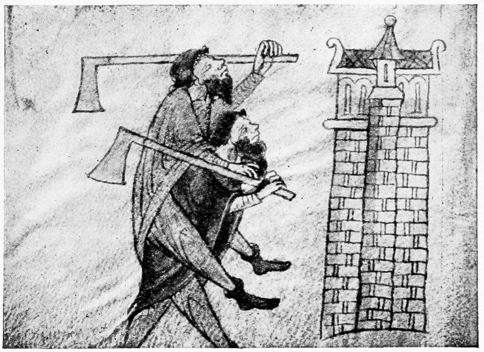
IRISH AXEMEN
(From Royal MS. B.viii)
town in flames, Carrick Castle fallen and Fitz-Stephen a prisoner. The earl now turned to Waterford and prepared for an expedition against MacDonnchadh, King of Ossory, but the latter offered to come in and make terms if his old ally Maurice Prendergast would obtain him a safe conduct. This Maurice did, but when MacDonnchadh came before the earl, King O’Brien of Munster, who was acting at this time with the English, urged his arrest and execution, and it was only by the vigorous action of Prendergast, who brought his men-at-arms on the scene, that the barons were prevented from thus treacherously breaking their oaths.
Leinster was now pacified and a further imperative summons from King Henry, already on his way towards Pembroke, necessitated the departure of Earl Richard. Hardly had he gone when Hasculf, the former lord of Dublin, landed with an army raised from Norway, the Isles, and Man, under the command of a man known from the berserk fury of his valour as John the Wode, or the Mad. These well-armed Scandinavians were foes of a different type from the wild Irish, but Miles de Cogan boldly charged upon them from the east gate, while his brother Richard, with a small force of thirty men-at-arms, rode secretly out of the west gate to take them in the rear. John the Wode, wielding his great axe with fearful effect, forced back the English, and had even gained footing within the gate when Richard’s attack threw his men into confusion. Rallying his forces Miles charged{112} again upon the Northmen, who broke and fled; John the Wode was killed fighting gallantly, and Hasculf was captured and beheaded. Another assault on the city, early in September, by the forces of Tiernan O’Rourke, ended disastrously for the Irish, and Dublin was left in peace.
Henry had landed at Portsmouth on 2nd August, and after a visit to the aged Bishop Henry of Winchester, then on his deathbed, had marched towards Bristol. At Newnham, in Gloucestershire, he was met by Earl Richard, who surrendered to him the cities of Dublin, Waterford, and Wexford, receiving in return the royal favour and a grant in fee of the residue of his conquests. About 8th September, when the English army was approaching the borders of Wales, King Rhys ap Gruffudd came to meet Henry with the offer of a tribute of horses and oxen. This tribute Henry soon afterwards respited, taking only thirty-six horses as a token of friendship; at the same time he restored to Rhys his son Howel, who had long been held as hostage. Rhys showed his appreciation of the king’s friendship next year by sending Howel to the English court to serve King Henry. The peaceful passage of the English army in Pembrokeshire, where the fleet was assembling at Milford Haven, had been secured by this tactful conciliation of King Rhys, and a troublesome chieftain, Jorwerth ap Owain, was reduced to order by the capture of his castle of Caerleon-on-Usk before Henry reached Pembroke. For some three weeks the{113} English host lay weather-bound at Pembroke, part of the time being spent by Henry in a pilgrimage to St. David’s, where he offered in the cathedral and visited the bishop, David Fitz-Gerald. At last, on 16th October, the wind shifted and the fleet of some two hundred vessels crossed over to Crook, near Waterford. For a fortnight Henry remained at Waterford, the government of which town he had entrusted to Robert Fitz-Bernard. Here he received the submission of the kings and chieftains of Ireland, with the exception of the lords of Ulster and Roderic O’Conor, the Ard-Righ. Hither also the men of Wexford, in accordance with an undertaking given to Henry at Pembroke by their envoys, brought Robert Fitz-Stephen and his fellow-prisoners; and Henry, whose personal intervention in Ireland had been influenced in some degree by complaints of the tyranny of some of the adventurers, thought it politic to appease the natives by committing Robert to prison for a short time. If he was mindful of the demands of justice he was still more mindful of his proposed reformation of the Irish Church, and having received the homage of the Irish bishops he summoned a council or synod at Cashel in November.
At this Council of Cashel canons were passed for the observance of the degrees of affinity in marriage, the performance of baptisms by priests in the church—the local custom being for the father of the child immediately after its birth to plunge it three times into water, or into milk if the family were noble or{114} wealthy—the payment of tithes, and the immunity of clerks and church property from secular exactions. As soon as it was over Henry sent an account of the proceedings, and of the submission tendered to him by the bishops and princes of Ireland, to the pope by the hands of the Archdeacon of Llandaff. It would seem that he also endeavoured to obtain from Alexander a confirmation of Pope Adrian’s commendatory letter issued in 1155, at the time when the conquest of Ireland was first proposed. Alexander did not grant this confirmation, but wrote letters to Henry, to the bishops and to the kings of Ireland, expressing his satisfaction at the steps taken to remedy the monstrous irregularities of which the Irish had been guilty, and his hope that Henry’s supremacy would make for the peace and better government of the island. These letters must have reached England some time in the summer of 1172. Henry, however, does not seem to have been satisfied with these expressions of papal approval; possibly he had in the first instance obtained the submission of the Irish prelates by representing himself as commissioned by Pope Alexander to reform their Church; however this may be, it would seem that a synod was held at Waterford to which William Fitz-Audelin brought probably Alexander’s letters and certainly the letter of Adrian (that famous centre of controversy “the Bull Laudabiliter,” so called from its beginning with the word Laudabiliter and, as befits an Irish document, its not being a{115} Bull),[30] and with it a confirmation by Pope Alexander, which was almost undoubtedly a forgery.
But before this synod of Waterford was held much had happened. Christmas in 1171 had been spent by the king at Dublin, where an elaborate palace, built of wattles in the native fashion, had been erected for him, and where the magnificence and luxury of his household, simple though it was if judged by continental standards, struck surprise into the minds of the Irish. But if the royal table presented a spectacle of unwonted luxury to the natives, the food of the country, the absence of wine, and the impurity of the water proved disastrous to the English. An exceptionally stormy winter aggravated the scarcity of provisions and consequent mortality, prevented operations against Roderic of Connaught, and by severing all connection with England left Henry a prey to unappeasable anxiety. Early in March 1172, news having possibly reached him of the arrival of the papal legates in Normandy, he moved down to Wexford, the greater part of his army going at the end of the month to Waterford; but for over six weeks the weather rendered the crossing to Wales impossible, and it was not till Easter Monday, 17th April, that Henry landed near St. David’s, whence he made his way to Portsmouth, from which place he crossed to Normandy early in May.
The arrival of the papal legates, coupled with rumours of a conspiracy being formed by the young King Henry and his brothers, had compelled Henry to return from Ireland without attempting the subjugation of the Ard-Righ and without strengthening his hold upon the portions of the island already conquered by the erection of a series of castles. Before leaving, however, he took measures intended apparently to weaken the power of the original adventurers alike for action independent of himself and for the oppression of the natives. The government of Dublin, with the province of Meath, he granted to Hugh de Lacy, a man of character and ability, who justified his selection by adopting a just and conciliatory policy towards the Irish. With him were associated in the charge of the city Robert Fitz-Stephen and Meiler Fitz-Henry, while Waterford and Wexford were committed to Robert Fitz-Bernard. Earl Richard retained possession of Leinster, and was apparently recognised as in control of the conquered portion of Ireland; while the province of Ulster, whose chiefs had refused to accept the English supremacy, was handed over to John de Courcy to subdue and enjoy as best he might.
The earl, who had made Kildare his chief seat, had bestowed his daughter in marriage upon Robert de Quency, whom he created hereditary constable of Leinster; but not long after the marriage Robert was killed in an expedition against O’Dempsey of Offaly, leaving an infant daughter, who eventually{117} married the son of Maurice Prendergast. Raymond the Big then demanded the hand of the earl’s widowed daughter, with the constableship, and upon his demand being refused retired into Wales. About the same time, in the summer of 1173, Henry, hard pressed by the rebellion of his sons, summoned some of the leading barons from Ireland, including Earl Richard, whom he made governor of Gisors. The appointment was of short duration, and the earl was soon invested with the government of Dublin, Waterford, and Wexford, and sent back to Ireland with letters recalling Hugh de Lacy, Fitz-Stephen, Fitz-Bernard, Prendergast, and others, who crossed at once, in time to take part in the battle at Fornham on 17th October 1173. The English forces in Ireland were thus seriously depleted, and an expedition led by the earl and Hervey de Montmorency into Munster having ended disastrously, all Ireland began to rise and endeavour to shake off the foreign yoke. Earl Richard hastily sent for Raymond, promising him the hand of his daughter, for which he had asked in vain before; Raymond responded to the offer, landed with a small force at Waterford and marched to Wexford, where he reduced the town to order and obtained his coveted bride. Next year, in 1175, he led a force into Limerick and captured that town, but his successes, and possibly his excesses also, were displeasing to King Henry, and early in 1176 he was summoned to England to account for his actions. The state of affairs at Limerick, however, was too{118} desperate to permit of his absence, and after relieving the garrison he thought it good policy to obtain a renewal of their oaths of fealty to the king of England from the kings of Connaught and Thomond. Raymond was therefore still in Ireland at the beginning of June 1176, when Earl Richard died and William Fitz-Audelin landed as procurator or justiciary of Ireland.
Fitz-Audelin and his two coadjutors, Miles de Cogan and Robert Fitz-Stephen, were recalled in 1177, and Hugh de Lacy was appointed justiciary, Fitz-Audelin being associated with Robert le Poer in the custody of Waterford and Wexford, Miles and Robert receiving South Munster, and North Munster, as yet unsubdued, being granted to Philip de Braose,[31] from which he got as little good as he deserved. For the next seven years Henry left Ireland pretty much to itself, and Lacy continued to strengthen the position of the English settlement by building castles and by a firm but conciliatory attitude towards the natives. Unfortunately his success, coupled with his marriage with a daughter of the king of Connaught, aroused Henry’s jealousy, and in 1184 he was removed from office. As early as 1177 Henry had declared his intention of making his young son John king of Ireland, and in 1185 the furtherance of this design afforded an excuse for keeping the beloved boy from{119} the distant dangers of the Crusade. John was at this time in his nineteenth year, vain, pampered, vicious, and as completely void of any redeeming virtue as any young man could be. His father, to whom he was as the apple of his eye, could hardly have found in all his broad realms any person more dangerously incompetent to undertake the difficult government of Ireland.
On 31st March 1185, the king knighted his son at Windsor, and almost immediately afterwards John set out, under the charge of Ranulph de Glanville, the justiciar, for Gloucester. After a few days’ stay in that city the heavy baggage and provisions for the expedition, with the greater part of the forces, were sent on to Bristol, while John himself with the remainder passed on to Milford Haven, whence he sailed for Waterford on 24th April. His force was of imposing dimensions—it is said to have contained three hundred knights—and as we find such men as William le Poer and Stephen le Flemeng each bringing fifty horses, the total number of the cavalry must have been large; there was probably a contingent of Flemish mercenaries, as Godescalk, “the master of the Flemish serjeants,” came from Kent, and there must have been the usual proportions of archers and foot soldiers. Significant is the entry on the Pipe Rolls of payments for Roger Rastel and other huntsmen with horses and dogs who went from Somerset into Ireland, and still more significant are the entries of large sums spent in furnishing John’s kitchen and{120} bakery. The bulk of John’s followers were Norman courtiers, despising their English companions, who in turn regarded the Irish as despicable savages. On John’s arrival the friendly chieftains came to welcome the son of the most powerful prince in Christendom, but found an ill-mannered youth surrounded by a crowd of fashionable effeminate flatterers. The Normans mocked at the barbaric dress of the native princes, and carried their ill-bred insolence so far as to pluck them by their long beards. In justifiable anger the princes left the court at Waterford and went to warn their compatriots of the treatment in store for them. The kings of Connaught, Limerick, and Cork, who had meditated tendering their fealty to John, now naturally held aloof, and soon the faithful natives were driven by the insults and injuries suffered at the hands of the invaders into active revolt. Meanwhile the newcomers had completely alienated the early settlers, depriving them of their hard-won conquests and distributing offices of importance and honour with a complete disregard for the fitness of the candidates. The Norman courtiers, used to the luxurious life of large towns and the aristocratic campaigning of the Continent, utterly refused to endure the hardships inseparable from service in the interior of the country, and clung to the seaboard towns where alone wine was available. Hugh de Lacy and the barons who had won and held Leinster by their strength and military ability kept grimly aloof and watched{121} disaster after disaster overtake the incompetent and inexperienced army of invasion.
Matters soon reached such a pitch that it was clear that some man of ability must be put in command, and accordingly in the autumn of 1185 John de Courcy, whose conquest of Ulster had proved him to be a warrior of consummate skill and daring, was appointed chief governor with excellent effect, and two months later Prince John returned to England. He had no difficulty in persuading his infatuated father that his failure was due to the treachery of Hugh de Lacy, and it was with unconcealed delight that Henry heard of Lacy’s murder in 1186. Early in that same year Pope Urban III. had acceded to Henry’s request for the coronation of John as king of Ireland, and had even sent him a crown of gold and peacocks’ feathers—borrowed plumes sufficiently suitable for the empty head they were to adorn. John was therefore despatched to Ireland to seize Lacy’s great fief into the king’s hand in August, but before he could sail news arrived of the death of his brother Geoffrey, and he was recalled. For the remaining three years of his reign Henry was too busy with English and foreign affairs to devote his attention to Ireland.
Henry had left Ireland, as we have seen, on 17th April 1172, and about the second week in May he crossed from Portsmouth to Barfleur with a considerable following, at least twenty-five ships accompanying him. On 17th May he met the cardinals at Savigny, and was informed by them of the terms offered by the pope for his reconciliation to the Church. It would seem that these included the entire abrogation of the Constitutions of Clarendon, and to this Henry absolutely declined to consent, declaring that sooner than accept these conditions he would return to Ireland. The diplomatic Bishop Arnulf of Lisieux now intervened and succeeded in effecting a compromise, and on Sunday, 21st May, Henry came to the cathedral of Avranches and was absolved from the guilt of the murder of Becket on a promise to comply with the modified requirements of the legates. He was to find the money to support two hundred men-at-arms for one year in the Holy Land, to go for three years on Crusade, to restore the property of the church of Canterbury, and take back into favour all who had suffered for their support of the archbishop; he was also to support{123} the claims of Alexander and his successors against the schismatics, to permit appeals to the pope in ecclesiastical causes, and to abolish all customs injurious to the Church which had been newly introduced in his reign. The wording of the last clause left matters exactly as they were at the beginning of the quarrel with Becket, for the whole point of the dispute was Henry’s contention that the Constitutions were in force in the time of his grandfather. The final issue of the conflict was thus decidedly in Henry’s favour, and the murder, instead of proving, as it must have done in the case of a less able man, disastrous, had actually been beneficial. The king’s strength is also shown in his dealings with the four knights who had murdered the archbishop; a weaker man would almost certainly have sacrificed the murderers to appease public opinion, but Henry, admitting that they had acted on his behalf though not in accord with his intentions, took no action against them, possibly not sorry to let ecclesiastical claims reduce themselves to a logical absurdity by showing that the Church could only deal with the ecclesiastical offence of the murder of an archbishop by the ineffective method of excommunication.
The young King Henry was present at the ceremony at Avranches and joined with his father in swearing to obey the terms imposed, so far as they were not personal to the elder king; but it would seem that the representatives of France and other important personages were absent, and it was therefore{124} arranged that the ceremony should be repeated at a later date at Caen. The absolution was duly repeated about Michaelmas, but whether at Caen or again at Avranches is not quite clear. Meanwhile Henry had arranged for the deferred coronation of his son’s wife Margaret, the daughter of King Louis. It has already been mentioned that, much to her father’s anger, she had not been crowned with her husband, but it would seem that Henry had had the genuine intention of allowing her to be crowned subsequently. He appears to have promised Becket that he should officiate, and it may have been for this purpose that Margaret crossed over to England in September 1170. She remained at Winchester until 3rd April 1171, when she crossed again to Normandy, and was no doubt with her husband at Christmas that year, when the young Henry held his court at Bur-le-Roi, to which flocked the chivalry in such numbers that it is recorded that in one hall there dined together a hundred and three knights whose Christian name was William. In August 1172 Margaret and her husband went back to England, and on the 27th of that month they were crowned together in Winchester Cathedral by Rotrou, Archbishop of Rouen, and the Bishops of Evreux and Worcester. Their stay was not of long duration, as early in November they were summoned back to Normandy by the old king. They obeyed unwillingly, but instead of joining the English court paid a visit to King Louis, who seized the opportunity to urge{125} upon the young Henry that he should demand from his father the complete sovereignty of either England or Normandy, or at any rate something more substantial than the shadowy royalty which he had hitherto enjoyed. The counsel fell on willing ears; the prince had long smarted under his father’s strict control and the surveillance of ministers who were practically his masters, and he was in no mind to remain a king without a kingdom and without even a sufficient income.
After Christmas, which the young king and his queen kept at Bonneville while the elder Henry and Eleanor were at Chinon, the two Henrys went to Montferrand and afterwards to Limoges to negotiate for the marriage of John, now six years old, with Alais, daughter and heir of the powerful Count Hubert of Maurienne, lord of Savoy. The count undertook to make a most liberal provision for the young couple, but when it came to Henry’s turn to fix what he would bestow upon them he named the castellanies of Chinon, Loudun, and Mirabeau. The young Henry at once indignantly protested that these castles belonged to him as Count of Anjou, and absolutely declined to make them over to his brother. This, combined with his father’s action in refusing to increase either his power or his allowance and in removing from his company certain young men of bad influence, roused the young king’s resentment, which was sedulously fanned by his mother, Queen Eleanor. The latter, egged on by her uncle, Ralph{126} de Faye, urged her son to open rebellion, and afterwards persuaded his brothers, Richard and Geoffrey, to join him in opposition to their father. At last, on 5th March, the young king slipped away, and evading pursuit reached the court of Louis.
The rebellion thus begun bore a formidable aspect and seemed to have every prospect of success. Young Henry was an admirable centre for the concentration of the disaffected. Tall, remarkably handsome, and adding to his father’s charm of manner an open-handed liberality which the elder Henry lacked, he was already earning the reputation which he established a few years later as the flower of chivalry, while his apparently complete lack of solid qualities in no way detracted from his popularity. In the struggle with his father he could of course count upon the assistance of King Louis, and though that king was singularly incompetent his resources were very considerable. The more lawless English lords, whose wings had been clipped by Henry’s anti-feudal legislation, might also be counted upon; and in this category were old Hugh Bigot, Earl of Norfolk, the other Earl Hugh, he of Chester, the young Earl of Leicester, son of the loyal justiciar who had died in 1168, Earl Ferrers of Derby, and Roger Mowbray. The discontented lords whose lands lay within Henry’s continental domains were still more numerous, and included the Counts of Ponthieu, Evreux, Eu, and Meulan, William de Tancarville, chamberlain of Normandy, and Geoffrey and Guy de Lusignan.{127} Amongst those who seem to have supported the young king out of affection for him rather than out of hatred of his father were William Marshal, younger son of Becket’s adversary and one of the most brilliant knights of his time, Hasculf de Saint Hilaire, Robert Tregoz, and William de Dives. Further important allies were secured by recklessly liberal promises of reward: to Count Philip of Flanders young Henry promised the county of Kent with the castles of Dover and Rochester and £1000 of rent; to his brother, the Count of Boulogne, the county of Mortain and other lands; to Theobald, Count of Blois, the castle of Amboise and £500 of rents from Anjou; and a little later, when the unsatisfactory state of affairs in Normandy rendered desirable a diversion in England, Westmoreland with Carlisle and possibly also Northumberland were offered to King William of Scotland, while to his brother David the earldom of Huntingdon and Cambridge was granted.
On the other hand, though his continental domains were seething with discontent, King Henry could count upon powerful support from the English magnates. The Earls of Cornwall, Surrey, Arundel, Essex, Northampton, and Salisbury could be relied upon; Richard “Strongbow” of Pembroke was loyal, though too much engaged with affairs in Ireland to be of much assistance; and William of Gloucester, though married to the young Earl of Leicester’s sister, would be at worst neutral. The best part of the baronage, headed by the great justiciar, Richard{128} de Luci, “the Loyal,” were to be depended upon, and included men of the military ability of Humphrey de Bohun, Robert de Stuteville, William de Vesci, and Odinell de Umfraville. The kings of Wales, David ap Owain and the redoubtable Rhys ap Gruffudd, with their hardy warriors, were also allies not to be despised. The valuable support of the Church was also, contrary to what might have been expected, strongly on the elder king’s side, the only conspicuous exceptions being the Bishop of Durham and, curiously enough, Henry’s former ardent partisan, Arnulf of Lisieux. To further strengthen his position Henry now filled up the six vacant English bishoprics, taking the opportunity to promote his faithful archdeacons; Richard of Ilchester, Archdeacon of Poictiers, receiving the see of Winchester, Geoffrey Ridel of Canterbury that of Ely, and Reynold, Archdeacon of Salisbury, that of Bath; Robert Foliot, Archdeacon of Lincoln and brother of the Bishop of London, obtained Hereford, Joscelin was promoted from the deanery to the bishopric of Chichester, and the great see of Lincoln was bestowed upon the king’s illegitimate son Geoffrey. In this manner Henry showed his obedience to the papal demand that the vacant sees should be filled, and at the same time he obtained practical control of the episcopal bench. The primacy was for a time left unfilled, owing to disputes between the monks of Canterbury and the bishops of the province, and to other causes; but in June, Richard, Prior of Dover,{129} was elected by general consent, and, by a happy coincidence, on the day of his election there arrived a letter from the pope announcing that the martyred Thomas of Canterbury had been enrolled amongst the saints.
Thanks to his wise policy in encouraging the trading and mercantile communities and in protecting the small men from the oppression of the great, Henry had on his side the bulk of the populace and especially the citizens of London, Rouen, and the other great towns. Finally, he had great financial resources, and it was this abundance of money that turned the scale in his favour by enabling him not only to hire large numbers of mercenaries but also to buy off many of the French nobles who were supposed to be supporting his rebellious sons.
As soon as it was clear that his son had fled to raise the standard of rebellion Henry proceeded to Gisors and set that and his other frontier castles in a state of defence. While he was so doing a rumour reached the rebels that he was advancing to attack them and they at once prepared for battle. The young king had not yet been knighted, his father having intended that King Louis should bestow the dignity upon him; but feeling that it would befit his position as leader of the army he now hastily sought the honour of knighthood at the hands of his faithful comrade and instructor in the art of arms, William Marshal. The alarm proved false; Henry, so far from attacking, retired to Rouen,{130} where he spent the greater part of the next four months hunting and apparently ignoring the outbreak, but really keeping a watchful eye upon events and waiting the opportunity to strike a crushing blow.
About the last week in June Henry appears to have made a hurried visit to England, going straight to Northampton, spending four days there, and then returning at once to Rouen.[32] Affairs in England were calculated to give rise to some anxiety. Although so many castles had been thrown down or taken into the king’s hand since the beginning of his reign a considerable number still remained in private hands, and of these at least a score were now held for the rebels. On the east coast Hugh Bigot held Framlingham and Bungay; in the Midlands, Huntingdon was held for David of Scotland; the Earl of Leicester had Leicester, Mountsorel, and Groby; the Earl Ferrers Tutbury and Duffield; while Chester was held for Earl Hugh. In the north the Bishop of Durham had fortified Durham, Norham, and Northallerton, and Mowbray held Thirsk, Malzeard, and Axholme; Hamo de Masci had castles at Dunham and Ullerwood, Geoffrey de Costantin at Stockport, and Richard de Morville at Lauder, and there were a number of smaller fortresses which might prove{131} centres of danger. The castles in the hands of the king and his supporters must have been at least five times as numerous, and the royal officers speedily set in order those in the districts most likely to be affected—the south-east, exposed to the raids of Flemish and French, and the north, where the Scots were to be feared. Porchester, Southampton, and Winchester were strengthened, so were Arundel, Chichester, and Hastings; in Kent much money was spent on the castles of Dover, Canterbury, Rochester, and Chilham; the Tower of London was of course a centre of activity; at Oreford the outer defences were strengthened; Walton, Colchester, and Norwich were garrisoned; so were Hertford, Cambridge, Wisbeach, and Lincoln. Windsor, Oxford, Berkhamstead, Wallingford, Kenilworth, Warwick, Worcester, Nottingham, and the Peak carried the chain of royal strongholds across the country, while in the north were York, Bowes, Richmond, Carlisle, Prudhoe, Appleby, Wark, and Newcastle. For the present the chief centre of danger seemed to be Leicester, and it was no doubt as a result of the king’s flying visit to Northampton that operations were set on foot early in July against Leicester.
About the time that Henry returned to Rouen, on 29th June, Count Philip of Flanders captured Aumâle, probably by the connivance of its defender, Count William of Aumâle, and, after a more energetic resistance, the castle of Driencourt. This last success, however, was neutralised by the death of{132} Philip’s brother, Count Matthew of Boulogne. Meanwhile the French army under King Louis and the young King Henry was vainly besieging Verneuil. Hugh de Lacy and Hugh de Beauchamp, who were in command of the defence, had no difficulty in repelling their attacks, but after a month’s siege provisions ran short in the outermost of the three “bourgs” into which the town was divided, and the inhabitants agreed that if they were not relieved before 9th August they would surrender, the French on their side swearing to do them no harm. Henry, realising that instant action was necessary, advanced at once, burning the Earl of Leicester’s abandoned castle of Breteuil on the way. When the two armies were in sight of one another on 8th August Louis sent envoys and obtained a truce until the next day, and Henry, not suspecting his good faith, retired to Conches. Next day Louis demanded the surrender of the bourg in accordance with the former agreement, and at once treacherously set it on fire and, adding cowardice to treachery, fled back to France, hotly pursued with great slaughter by Henry. The centre of action now shifted to Brittany, where the turbulent Breton nobles had risen under Ralph of Fougères and the Earl of Chester. Against them Henry sent a strong force of Brabantine mercenaries under William de Humez, who inflicted a very severe defeat on the rebels, capturing Hasculf de Saint Hilaire, William Patrie and others, and driving the remainder of the force into the castle of Dol. A{133} messenger was sent off at full gallop to Henry at Rouen, and by an almost incredibly rapid forced march he covered the whole distance from Rouen to Dol, over 150 miles, in two days.[33] Earl Hugh and Ralph of Fougères, seeing that resistance was hopeless, surrendered on 29th August, and by this single stroke eighty persons of rank and position and a number of men of lesser estate were captured and the rebellion in Brittany stamped out. The time now seemed ripe for a reconciliation, and on 25th September Henry met his three sons and King Louis near Gisors. The terms offered by the king to his sons were liberal in the extreme, but the French king had no wish to see peace restored and he persuaded them to reject the terms. The Earl of Leicester also, who had all arrangements made for an invasion of England, did his insolent best to keep the quarrel alive.
We have seen that early in July preparations had been made for the siege of Leicester. On the 22nd of that month the town surrendered to the Earl of Cornwall and Richard de Luci; the inhabitants were allowed to withdraw to St. Albans and other places of refuge and the town was set on fire. The castle, however, still held out, and in September news from the north caused the siege to be raised. King William of Scotland, having vainly offered his services to the elder Henry in return for a grant of Northum{134}berland, accepted the younger Henry’s promise of Westmoreland and assembled a large army to reduce the northern counties. His first move was against the castle of Wark, where Roger de Stuteville was in command; Roger obtained a truce of forty days and the Scottish army passed on, ravaging and burning as they went, and after an ineffectual attack on William de Vesci’s castle of Alnwick captured Warkworth Castle. Newcastle, held for the king by Roger Fitz-Richard, Lord of Warkworth, proved too strong for the invaders, and their efforts were next directed against Carlisle. Here Robert de Vaux made a gallant defence, and news arriving of the advance of the English relieving force the Scots retreated to Roxburgh in full flight. Richard de Luci, with the troops he had brought from Leicester, and Humphrey de Bohun, with a detachment of mercenary cavalry, pursued them across the border and burnt Berwick. But news reached them that the Earl of Leicester had landed with a force of Flemings at Walton on 29th September. Bohun at once turned southwards, while Luci negotiated with the Scottish king before the news of Leicester’s landing could reach the latter. A truce was obtained to last until January, and by the Bishop of Durham’s mediation this was afterwards extended to April 1174.
The Earl of Leicester, on landing, had spent four days in a fruitless endeavour to capture Walton Castle, but finding it too strong to be taken, although Earl Hugh of Norfolk had brought a siege train{135} to his assistance, he turned aside and attacked Haughley. This fortress, held by Ranulph de Broc, Becket’s old adversary, was speedily captured and given to the flames, and then the earl’s initiative appears to have died out and he was content to quarter himself idly at Framlingham until Earl Hugh gave him a strong hint that he was outstaying his welcome. At last he decided to try and reach Leicester, and on 17th October he started, with the intention of passing to the north of Bury St. Edmunds. At the latter town the royalists, under Humphrey de Bohun, had been reinforced by troops under the Earls of Cornwall and Arundel, local levies under Roger le Bigod, the loyal son of old Earl Hugh, and Hugh de Cressi, and a detachment of hardy fighting men from Ireland. Setting out with St. Edmund’s banner at their head they came upon the Flemings at Fornham-St. Geneveve. In actual numbers the advantage lay with the Earl of Leicester, but his followers were almost entirely infantry of poor quality, quite unfitted to cope with the powerful cavalry opposed to them, and it was only a matter of minutes before the Flemings had been ridden down and scattered, a prey for the country people, who bore them no good-will. Earl Robert and his cousin, Hugh de Chastel, were captured, and the gallant Countess Peronelle, clad in mail, falling into a stream in her flight, was with difficulty rescued from a death which she preferred to the disgrace of surrender. A halt was now made{136} and forces collected to crush Earl Hugh, but with the aid of his wealth he bought a truce for himself and permission for the Flemish mercenaries still in England to leave the country unharmed.
Henry, having seen the captured earl and countess safely lodged in the castle of Falaise, led an army into Anjou in November and captured Preuilly, La Haye, and Champigny with a large number of men of rank. The year 1173 thus ended favourably for the elder king, and truces with the kings of France and Scotland ensured peace until the close of Easter, 31st March 1174. But with the beginning of April the struggle began again. The Scottish king crossed the border and besieged Wark, raiding as far as Bamborough, where William de Vesci’s castle proved too strong to be attacked. Roger de Stuteville offered a vigorous defence, and the besiegers’ artillery proving more deadly to themselves than to the garrison, King William abandoned the siege of Wark and concentrated his efforts on Carlisle. He had been joined by Roger Mowbray and Adam de Port, a Norman baron who had been banished and deprived of his English estates in 1172 for conspiring against Henry, and his army included the inevitable execrated Flemish mercenaries. Ruthless as these Flemish adventurers were, they were less inhuman than the savage Highlanders and men of Galloway who accompanied them. From Carlisle plundering bands ravaged and destroyed the northern counties, while more warlike expeditions captured the border{137} forts of Liddel and Harbottle. Far more serious was the tame surrender of Appleby Castle: the aged Gospatric, son of Orm, the English constable of the castle, was possibly too old for his responsible position, and his lack of confidence would seem to have affected the garrison, amongst whom were the steward of Hugh de Morville, the murderer of Becket, and one John de Morville, probably connections of Richard de Morville, who was a prominent supporter of the Scottish king. This success was followed up by the capture, after a desperate resistance, of Brough-under-Stanemore, and the general trend of affairs induced Robert de Vaux to obtain a truce for Carlisle on undertaking to surrender at Michaelmas if not relieved before that date.
Henry, after assuring himself of the loyalty of Maine and Anjou in the spring of 1174, had entered Poitou and inflicted a crushing defeat on the troops of his son Richard at Saintes in May. Messages had been reaching him for some time past from the justiciar, who was besieging Huntingdon, urging his return to England, and on his arrival at Bonneville in Normandy on 24th June he was met by Richard of Ilchester, bishop-elect of Winchester, with news of the gravity of affairs. There was no mistaking the significance of the selection of Richard—“they could not have sent a more urgent messenger, unless they had sent the Tower of London”—and Henry at once prepared to cross to England. He accordingly embarked at Barfleur on 7th July, and being determined to leave no centres of disaffection behind{138} him, he carried with him the Earls of Chester and Leicester, Queen Eleanor, who had been captured the previous year trying to reach the French court in male disguise, and Queen Margaret. The weather was stormy but the wind was in the right direction, and Henry bade the shipmen set sail, saying solemnly, “If what I purpose is for the peace of Church and people, and if the King of Heaven has decreed that peace shall be restored by my coming, then in His mercy may He grant me a safe passage. But if He has turned His face from me and has decreed to afflict the kingdom with a rod, then may it never be mine to set foot on shore.” The voyage to Southampton was accomplished in safety, and Henry at once proceeded, fasting and with all signs of humility, to Canterbury, where on 12th July he performed public penance at the tomb of St. Thomas. The Bishop of London delivered an address on the king’s behalf, disavowing all share in the murder, but admitting that his rash words had been the actual cause of it; then, after long remaining in prayer at the tomb, the king submitted to a ceremonial scourging at the hands of all the monks of the convent of Christ Church. Finally he made a grant of lands to the monastery in memory of the martyr, and probably at the same time settled a small income upon Becket’s married sister, Roese,[34] his{139} other sister, Mary, having been appointed in the previous year Abbess of Berking.
The news of Henry’s landing put an end to the plans of the younger king for an invasion of England, which he had contemplated in company with Philip of Flanders. He had even gone so far as to send over three hundred picked Flemish knights under Ralph de la Haye in June. They had landed at Orewell, placed themselves under the command of Earl Hugh of Norfolk, and, after being repulsed from Dunwich, had captured the wealthy city of Norwich by treachery and gained thereby great plunder if little military advantage. This occurred on 18th June, and the news apparently caused the justiciar to relinquish the siege of Huntingdon, leaving Earl Simon of Northampton, who claimed the earldom of Huntingdon, to win the castle and the county for himself. As we have already seen an urgent message was despatched to the king, and about the same time Robert de Vaux obtained conditions for Carlisle. The Scottish army being thus set free for fresh enterprises Roger Mowbray urged King William to move southwards to his assistance, his strongholds of Axholme and Malzeard having fallen before the troops of Geoffrey, the king’s illegitimate son, the young bishop-elect of Lincoln, and Thirsk being threatened. William preferred the less hazardous course of keeping near his own borders, and laid siege to Odinal de Umfraville’s castle of Prudhoe. The castle was strong and well provisioned, and{140} Odinal succeeded in getting away to raise forces for its relief. Preparing to retreat into his own country, the Scottish king sent detachments of his army under Earl Duncan, the Earl of Angus, and Richard de Morville to ravage the country, while he with a small body of knights made a demonstration against Alnwick. The English forces under Ranulf de Glanvill, Odinal de Umfraville, Robert de Stuteville, William de Vesci, and Bernard de Baillol left Newcastle at daybreak on 13th July, and, favoured by a mist, surprised King William and his attendants close to Alnwick. William the Lion did not surrender tamely, but, mounting his horse, led his men against the foe. The odds were too heavy, however; the king’s charger was killed and he himself pinned to the ground by its fall, Roger de Mowbray and Adam de Port fled for safety, but the Scottish knights fought for their lord so long as resistance was possible. Thus on the day, possibly even at the hour, on which Henry completed his penance at the tomb of St. Thomas his most dangerous opponent was made prisoner. The good news was despatched at once by a mounted messenger, who found Henry resting at London, where he had had a most enthusiastic reception upon his arrival. The king, who was unwell, was asleep, but the messenger would brook no delay, and the news of William’s capture, which Henry could at first hardly believe, proved good medicine for the sick man. The nobles at court were at once told the news, and next day
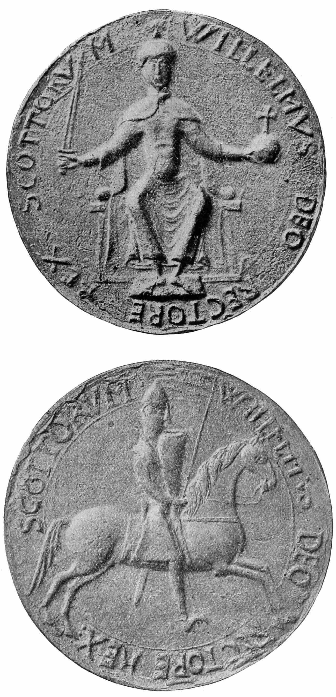
SEAL OF WILLIAM THE LION (1/1)
all the bells of London’s six score churches rang in joy that the rebellion in England was at an end.
A few days later the king advanced to Huntingdon, which surrendered to him on 21st July. He then turned to attack Earl Hugh’s castle of Framlingham, and by the 24th had advanced with his siege train as far as Seleham; but next day the earl met him there, gave up his castles of Bungay and Framlingham, and agreed to pay a heavy fine for his offence and to make amends for the damage wrought by his soldiers; he was at once restored to his earldom, and his Flemish troops were permitted to leave the country unmolested, but not to take any property with them. During this interview, which took place on horseback in the open air, the king was kicked on the leg by the horse of Tostes de St. Omer, a Templar of prominence, but the injury did not prevent his going on to Northampton, where the last act of the rebellion in England was played. Bishop Hugh Puiset, who had brought over a detachment of Flemings under command of his nephew, the Count of Bar, on the very day on which the Scottish king was captured, had sent back the infantry at once, but had retained his nephew and his men-at-arms until the fortune of war had set definitely in Henry’s favour; he now made submission, gave up his castles of Durham, Northallerton, and Norham, and dismissed his foreign allies. The Earl of Clare, who was believed to have been plotting action with Gilbert Munfichet when the latter fortified his London{142} castle, tendered assurances of loyalty. Roger Mowbray surrendered Thirsk; Ansketil Malory, who had defended Leicester so well, and had even attacked and defeated the loyalists at Northampton, gave up his master’s castles of Leicester, Groby, and Mountsorel; and Earl Ferrers, who not long before had sacked Nottingham, gave up Tutbury, which had been besieged for some time past by Rhys and his Welshmen. Rhys was rewarded by a grant of the castle and district of “Emelin,” while the loyalty of David ap Owain of North Wales was recompensed by the hand of Emma, King Henry’s half-sister.
Although affairs in England had been settled so satisfactorily there was no time to be lost; taking advantage of Henry’s absence King Louis had pressed forward with the young King Henry and invested Rouen. The town was devoted to the elder Henry’s interests; it was well provisioned and was in no great danger, but it was clearly desirable that it should be relieved as soon as possible, and on 8th August Henry sailed for Barfleur, carrying his more important prisoners with him and taking back not only the Brabantine mercenaries he had brought over in June but also a number of Welsh troops. These latter on 12th August, the day after their arrival at Rouen, crossed the Seine and made a bold and successful raid on the French camp, and next day a sally from the town resulted in the easy destruction of the defensive works of the besiegers’ camp. When the war had opened just a year before,{143} in August 1173, with the siege of Verneuil, Louis had shown a blend of treachery, cowardice, and incompetence, and now that the war was closing with this siege of Rouen his conduct displayed the same features. Just before Henry’s arrival, on St. Laurence’s Day (10th August), the French king had declared a truce in honour of the saint and then made secret preparations for storming the city; fortunately some priests, who happened to be on the belfry looking at the view, saw the movement in the enemy’s camp and rang the tocsin; the citizens flew to arms, and the French took therefrom no advantage but dishonour and disgrace. On the day after the successful sally the French burnt their siege engines and fled, Louis staving off pursuit by proposing a conference at Malannai next day, but again breaking his word and flying into France.
Negotiations were opened on 8th September at Gisors, but as Richard was still defying his father in Poitou a settlement was postponed and Henry went in pursuit of his warlike son. A couple of weeks sufficed to bring Richard to terms, and on the last day of September conditions of peace were drawn up. The followers of the young king were released from the allegiance they had sworn to him, and were received back into the king’s favour and as full possession of their lands as they had at the time war broke out; prisoners were released without ransom, except such as had already come to terms and also excepting the King of Scotland, the Earls{144} of Leicester and Chester, and Ralph of Fougères; all castles that had been built or strengthened during the rebellion were to be restored to their former condition, and, indeed, so far as possible everything was to resume its previous existence. The young King Henry was granted two castles in Normandy and a yearly allowance of £15,000 Angevin money (£3600 English); Richard should have two castles of no strategic importance in Poitou and half the revenues of that province, and Geoffrey half the inheritance of Constance, daughter of Count Conan of Brittany, and the whole when he married her. At the same time the young king agreed to the bestowal upon his youngest brother, John, of the castles of Nottingham and Marlborough, and £1000 from the English revenues, as well as castles and rents in Normandy, Anjou, and Maine. Richard and Geoffrey then did homage to their father, but this ceremony was dispensed with in Henry’s case out of deference to his rank of king. Finally, in December, King William the Lion obtained his release from the prison at Falaise by becoming the vassal of Henry and undertaking to hold Scotland under the English king. To ensure the fulfilment of this treaty the castles of Edinburgh, Roxburgh, Berwick, Jedburgh, and Stirling were surrendered to Henry. The close of 1174 thus found Henry completely triumphant and the formidable combination of his enemies absolutely shattered.
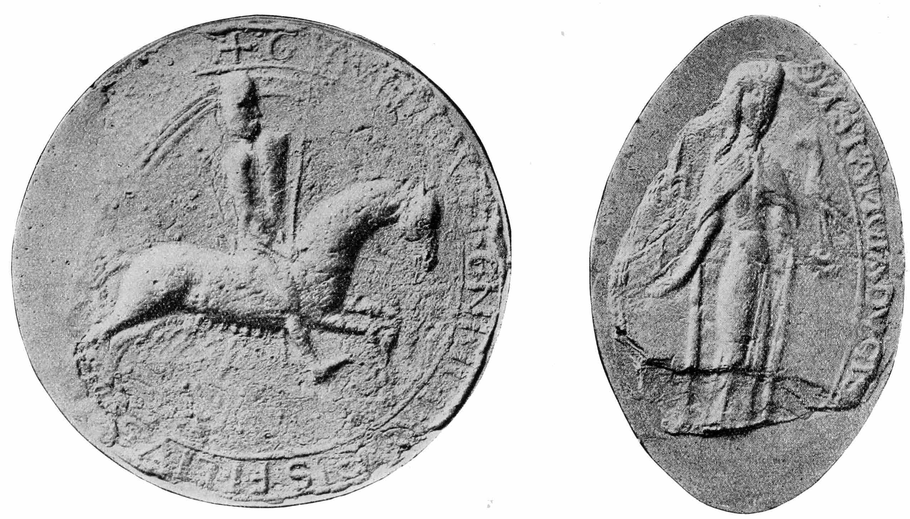
SEALS OF GEOFFREY, SON OF HENRY II, AND CONSTANCE OF BRITTANY, HIS WIFE (1/1)
The economic effects of the rebellion were far-reaching. Those who had
been involved in it returned, it is true, nominally to the position in
which they had been before the outbreak, but their lands had been
systematically ravaged, their castles given to the flames, and blackened
ruins told for a generation the tale of their disastrous failure. So far
as England was concerned these effects were more localised and less
extensive. During the war Mowbray’s castles of Kirkby Malzeard and
Axholme had been destroyed, and at its close the same fate befell
Thirsk. Thetford and Brackley and the two Kentish castles of Allington
and Saltwood had been dismantled before the end of 1174, and so had
Geoffrey de Turville’s castle of Weston. Next year saw the overthrow of
Groby and Tutbury; Dudley, the castle of Earl Ferrers’ son-in-law,
Gervase Painel, was razed and its owner fined 500 marks for his share in
the revolt, his neighbour and comrade in arms, Hamo de Masci, being at
the same time fined 300 marks. The strongholds of Huntingdon and
Leicester were rendered incapable of again{145}
{146} resisting the king’s forces,
and the great English military architect and engineer, Ælnoth, came down
to supervise the levelling of the walls of Framlingham Castle and the
filling of its fosse. For strategic reasons the fort at Walton, which
had successfully resisted the Flemish invaders, was destroyed in 1176,
and also the keep of Bennington, and the Bishop of Durham only saved his
castle of Northallerton by a payment of 2000 marks. What other castles
disappeared we do not know, but such as remained were taken into the
king’s hands, the Earl of Gloucester yielding Bristol and Gloucester
with great reluctance.
The expenses of the war must have strained Henry’s finances severely. For the expeditions on the Scottish border alone we know that Ranulph de Glanville and Robert de Stuteville paid over £2000 to their troops, and the cost of the mercenaries employed on the Continent must have been very heavy. A large but quite uncertain sum must have been obtained from the ransom of the many important prisoners taken, and further contributions were levied in the form of fines. The Earl of Leicester was impleaded by Bertram de Verdon, Sheriff of Leicestershire, for injuries done by his men and fined 500 marks. Nine citizens of York who had sided with the rebels were fined 1300 marks between them, several of them being also fined smaller sums for receiving goods belonging to Flemings. These latter had been banished from England, saving their{147} lives at the expense of their property, and the township of Selby was fined £5 for allowing Flemings to carry away their goods, William of Selby 5 marks for not detaining Flemings whom he saw pass through the town, and Fulk of Selby £10 for hiring his ship to the Flemings. For the most part these foreigners were clothworkers, and their forfeited property, consisting chiefly of wool, did not yield any great sum. A more fruitful source of income arose from the estates of the Earl of Leicester and his companions during the time that they were in arms against the king, and from these only about £300 were obtained between September 1174 and the restoration of the estates to their owners. Apart from the 2600 marks assessed upon the citizens of York, the Earl of Leicester, Gervase Painel, and Hamo de Masci, £500 was raised by smaller fines upon persons who had sold horses or armour or given other assistance to the rebels. Even adding in Earl Hugh’s fine of 700 marks and the 500 marks which Gospatric was fined for the surrender of Appleby, the total amount accounted for at the exchequer as wrung from the vanquished party seems to have fallen far short of £4000. Searching for some device to fill his empty coffers Henry hit upon the idea of vigorously punishing all offences against the Forest Laws which had been committed during the time of the disturbances. Accordingly, in August 1175, he held pleas of the forest at Nottingham and afterwards at York in person and sent{148} special commissioners to hold similar pleas in other counties. The baronage protested, and Richard de Luci produced the king’s own writ issued at the time of the war, apparently suspending the Forest Laws and authorising any person to take wood and venison in the royal forests. It is as difficult to understand why Henry issued such a writ as it is to see upon what grounds he set it aside. Possibly a writ intended to apply to certain special cases, such as the taking of venison for the provisioning of the royal troops or of timber for military works, had by a misunderstanding or error of wording been made to apply generally, and Henry declined to accept responsibility for the mistake. However this may be, it is clear that his action in pressing these pleas was at least a piece of sharp practice, and the heavy fines exacted can hardly be regarded in the circumstances as anything but extortion. The sum of the fines inflicted appears to have been £13,450, and although much of this was not paid at once and some was in the end remitted, the eventual yield seems to have been quite £10,000. About 1700 persons were amerced; and when it is remembered that to these must be added a large number of cases in which whole townships were fined, it is clear that the total number of persons affected must have been very large. A few fortunate counties, such as Kent, Sussex, Norfolk, and Suffolk, contained no royal forests, but elsewhere every class of man was swept into the legal net, from the great{149} baron to the villein and including the clergy. Henry had indeed succeeded in wringing from the papal legate, Cardinal Ugoccione, the concession that the clergy should be subject to the Forest Laws.
The legate had been sent over to settle the rival claims of the sees of Canterbury and York, but his arrival only tended to aggravate matters. At a synod held at Westminster on 18th March 1176, the endeavours of Archbishop Roger of York to oust Richard of Canterbury from his seat of honour on the legate’s right hand led to a disgraceful scuffle, in which Archbishop Roger was attacked by the supporters of the southern primate, knocked down, and in the end ignominiously ejected from the chapel. The legate indignantly dismissed the synod and was with difficulty persuaded to retain his official position. In July he left England, having accomplished practically nothing in the matter of the rival sees. If popular rumour was correct in believing that he had been sounded by Henry on the question of a divorce from Queen Eleanor, in this matter also there had been no result. The one important result of his visit had been that the clergy were for the future to be subject to the Forest Laws and also to plead in the king’s court in matters touching lay fees. It is said that by way of compensation Henry recognised their exemption from lay jurisdiction in all other matters, agreed not to make a practice of retaining vacant bishoprics and abbeys in his hands, and granted that the murder of{150} a clerk should be punished by forfeiture. Even if these concessions were made they were far from reconciling those of the clerical party who still held Becket’s ideal of the supremacy of the Church.
Restored to favour with the pope and victorious over as formidable a combination of his enemies as could well be formed against him, Henry was now at the height of his power, recognised throughout Europe as a prince whose friendship was worth seeking. In his court at Westminster on 12th November 1176, might have been seen ambassadors from the Emperor Manuel of Constantinople, the Emperor Frederic, the Duke of Saxony, the Count of Flanders, and the Archbishop of Rheims. About the same time also came a joint mission from the Kings of Castile and Navarre asking Henry to arbitrate between them in a dispute about certain castles and other territory. Accordingly, in the following March Henry heard the arguments of the rival embassies and gave his decision after consultation with the peers of his court, sentencing each side to make restitution to the other and further condemning the King of Castile to pay to Navarre 3000 maravedis a year for the next ten years. This King Alphonso of Castile had married Henry’s daughter Eleanor in 1170, and about the time that the subject of this arbitration was first broached, at the end of 1176, another of Henry’s daughters, Joan, was on her way to marry King William of Sicily. Negotiations for the marriage had been opened earlier in the year, and after her
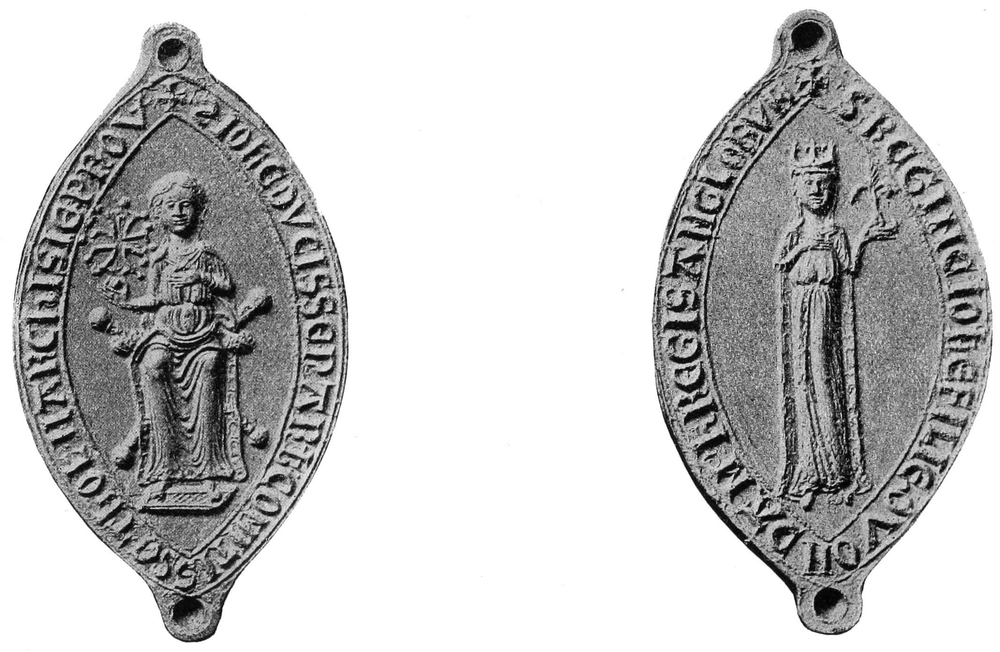
SEALS OF JOAN, DAUGHTER OF HENRY II (1/1)
(Silver Matrix in B.M.)
trousseaux had been bought in London, at a cost of over £100 (say £2500 of modern money), she travelled through France with a brilliant retinue to St. Gilles, where she found awaiting her the Sicilian nobles and the Bishop of Norwich. The unfortunate bishop had been sent on ahead earlier in the year to Sicily to make final arrangements and had had a very rough time; the country through which he passed was suffering from famine and he could hardly get provisions for himself or his horse; accommodation sometimes failed completely, so that he had to sleep on the rocks or sand of the seashore, and when he had a roof over his head he found that the fleas had no reverence for his episcopal or ambassadorial dignity, so that he was very pleased to complete his mission by handing the princess over to the Sicilians and to hurry back to England in time for the Christmas festivities at the court at Nottingham.
Two other marriages occupied the king’s attention about this time. The
young daughter of Count Hubert of Maurienne having died, Henry had to
find another heiress as bride for his favourite son John, and ultimately
decided that the great estates of the Earl of Gloucester would make a
suitable endowment for the landless prince. The earl had three
daughters, of whom two were already married to the Earl of Hertford and
the Count of Evreux, and Henry now prevailed upon the earl to agree that
all his estates should be settled upon the remaining daughter, Isabel,
and that she should be betrothed{151}
{152} to John, for whom the king had also
reserved the great estates of his uncle, Earl Reynold of Cornwall, upon
the latter’s death in 1175, with similar disregard for the rights of his
daughters and lawful heirs. Having settled this matter to his
satisfaction Henry next found himself confronted with the question of
Richard’s matrimonial affairs. Richard had long been pledged to marry
Alais, daughter of King Louis, and she had been, in accordance with the
usual practice of the time, brought up at the court of her intended
father-in-law. She was now about twenty and the King of France was
pressing for the marriage to be performed, and in 1177 a papal legate
was despatched from Rome with instructions to lay Henry’s dominions
under an interdict if he should refuse to carry out the agreement. In
August of that year Henry crossed to Normandy and next month met the
legate at Rouen, and on 21st September held a conference with King Louis
at Ivry. At this conference the promise that Richard should marry Alais
seems to have been renewed in an informal way, but Henry had no
intention of fulfilling it, and indeed it seems probable that he was at
this time himself the lover of the princess, who had succeeded the
famous Rosamund Clifford in his affections when that beautiful favourite
died.[35]{153}
A more important effect of the conference at Ivry was the treaty then drawn up between the two kings, composing their differences and agreeing to submit such points as still remained in dispute to arbitration, and also agreeing to go together on crusade to the Holy Land. Henry probably never had the slightest intention of going to Jerusalem; indeed to have done so, leaving behind him such disloyal and unprincipled young scoundrels as his sons had proved themselves to be, would have been madness, even if he had felt any particular interest in the fate of the Holy Land. It will be remembered that the terms upon which Henry was absolved from the guilt of the murder of Becket had included the payment of a large sum for the support of the warriors in Palestine and his personal participation in a crusade for three years. The first of these obligations he would seem to have discharged early in 1177, when the Earl of Essex and other English knights went with Count Philip of Flanders to the East, as William de Braose was sent “to carry the king’s alms to the Templars.” The three years’ crusade was commuted for the foundation of three monasteries, and Henry, whose partiality for monastic establishments was by no means marked, contrived to interpret this obligation in a way consistent with the strictest economy. Finding that the secular canons of Waltham had become remiss in the performance of their duties, he ejected them from their collegiate church, with the connivance of their dean,{154} Guy Rufus, and replaced them by canons regular of the Augustinian order. In the same way, finding the lives of the nuns at Amesbury far from satisfactory, he turned them out, pensioning off the abbess, and put in their place other nuns from the Norman abbey of Fontevrault. Both of these transformations took place in the latter half of 1177, and for the next few years the work of rebuilding and enlarging at Waltham and Amesbury were carried on at the king’s expense on a fairly generous scale. The third monastery was a new foundation, a small priory of Carthusians established at Witham in Somerset. It would seem that Henry brought over a few brethren from the famous monastery of Chartreuse early in 1175, but gave them no assistance and took no further steps towards establishing them in permanent buildings. The first prior abandoned his post in despair and the next died soon after his arrival at Witham; Henry then succeeded with much difficulty in persuading the Prior of Chartreuse to send Hugh of Avalon, a monk of equal ability and piety; but when he came he had to endure the same heartbreaking round of delays, evasions, and unfulfilled promises, and it was not until about 1180, when Henry discovered the true worth and charm of his personality and became his close friend, that the king made any endeavour to complete the priory of Witham. It was characteristic of Henry that when the prior expressed his wish for a copy of the Holy Scriptures for the{155} use of his brethren, the king compelled the monks of Winchester to give up an elaborately written copy, which they had just completed for their own use, and presented it to the grateful monks of Witham. It was equally characteristic of Hugh that, when he learnt how the precious volume had been provided, he insisted upon returning it to its rightful owners.
The warm affection which the king lavished upon Hugh led many people to believe that the latter was Henry’s son, a belief strengthened by a certain likeness observable between the two. And indeed the likeness was not confined to physical traits, for Hugh, with all his piety and austerity, was quick-tempered and quick-witted and had as keen appreciation for a joke as had Henry himself, and fully realised that a witty as well as a soft answer may turn away wrath. On one occasion, having incurred the king’s wrath by excommunicating one of his foresters, he was summoned to Woodstock and found Henry and his courtiers sitting in a circle on the grass. To intimate his displeasure the king ignored Hugh’s salutation and maintained a sulky silence, the attendant nobles following his example; Hugh calmly pushed aside an earl and sat down next to the king, who, incapable of resting idle, called for a needle and thread and began to stitch a torn leather finger-stall which he was wearing on his left hand. Hugh watched him for a minute and then said dryly, “How like you are now to your cousins of Falaise!” The impudence of the remark{156} appealed to Henry, who lay back and roared with laughter, and then himself explained to such of his courtiers as had not grasped the point that the allusion was to his descent, through William the Conqueror, from the peasant girl of Falaise, a town famous for its skinners and leatherworkers. This incident occurred after Hugh had been promoted, in 1186, from the priory of Witham to the bishopric of Lincoln, which had been held from 1173 to 1182 by the king’s acknowledged bastard, Geoffrey, who, however, preferring rather to fleece than to tend his sheep, had never been consecrated to the see.
It is curious that Henry, himself careless of religion and actively antagonistic to the Church, should have lavished his warmest affection upon two men destined after their death to rank in the calendar of saints. The intimate friend of his early years became St. Thomas of Canterbury, and the chosen associate of the closing years of his reign was destined to become St. Hugh of Lincoln. The claims to saintship of the two men were singularly different; Thomas was one of those arrogant, fighting ecclesiastics who identify the cause of the Church with themselves and “take the kingdom of heaven by violence,” while Hugh was a man of peace, one of those who identify themselves with the cause of God, to whom beatification comes as the natural reward for the blessings they have themselves bestowed upon their flocks. Of the two St. Thomas inevitably made the greater impression upon the
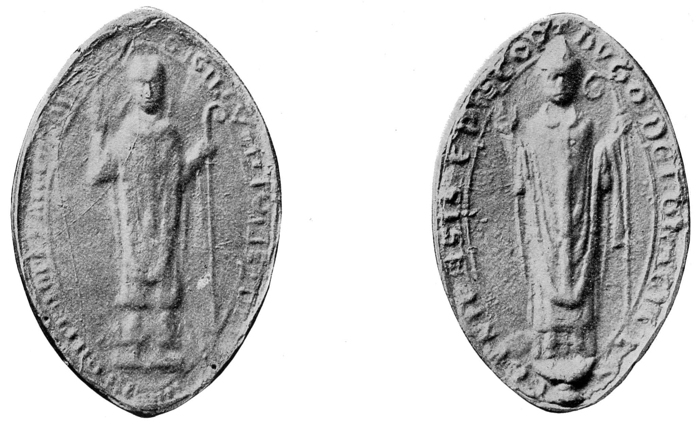
SEAL OF THOMAS BECKET ARCHBISHOP OF CANTERBURY (1/1) SEAL OF HUGH BISHOP OF LINCOLN (1/1)
popular imagination, and his shrine was a centre of pilgrimage long
before St. Hugh had even left his obscure priory for the great bishopric
of Lincoln. A great impulse was no doubt given to the adoration of St.
Thomas by the events of 1174, when the capture of the King of Scotland
followed so immediately upon Henry’s penance at Canterbury. In the
twelfth century people did not talk of coincidence or propound elaborate
theories that the concentration of Henry’s mind upon the desire for
victory had acted upon the brain centres of Ranulph de Glanville’s
subconsciousness and spurred him on to action. They simply accepted as a
fact the personal intervention of St. Thomas, and Henry himself
countenanced that view by going with his royal son on a pilgrimage of
thanksgiving to Canterbury on 28th May 1175. Later in that year the
young Queen Margaret visited the shrine “for the sake of prayer,” and it
is not improbable that we have the partial fulfilment of her petitions
in the birth of a son at Paris in June 1177; but if so the answer to her
prayers was only partial, for the child lived barely long enough to be
christened William, and died within three days of his birth. A still
more remarkable tribute to the fame of St. Thomas was paid in 1179. At
that time King Louis was arranging for the coronation of his son Philip,
then fourteen years old, but just before the date fixed for the ceremony
the boy fell ill as the result of a hunting misadventure. Casting about
in his mind for a suitable{157}
{158} spiritual advocate it was not unnatural that
the king’s choice should fall upon Thomas of Canterbury; if he had come
so effectually to the help of his old adversary Henry he might surely be
relied upon to assist his old supporter Louis. King Henry readily
acceded to the French king’s request for a safe conduct and met him in
person at Dover on 22nd August, whence the two kings went next day to
Canterbury. Here King Louis offered his petition at the tomb of the
saint and enriched the convent with the grant of a yearly render of wine
and exemption from customs for goods exported for their use from France.
On his return to France the king found his son convalescent, and in November the postponed coronation took place, the younger Henry being amongst those present. But before this date King Louis himself had been struck down with paralysis, and after nine months’ illness he died on 18th September 1180. Death was busy about this time; Richard de Luci, the great justiciar, had died in July 1179 at the priory of Lesnes, which he had founded; Pope Alexander III. died in August 1181, and Roger, Archbishop of York, in the following November. In Louis, Henry lost an old antagonist, but one whose weakness and incompetence had been a source of strength to the English king. Henry had never pursued an aggressive policy towards France and had never attempted to crush Louis or even to throw off his nominal suzerainty; when their claims{159} clashed, as they frequently had done, he was content to defeat the attack or outwit the diplomacy of the French king, but in the young Philip there was growing up a far more formidable adversary and one who could neither be hoodwinked nor driven from the field without difficulty. For the time, however, Henry’s relations with the young French king were almost paternal. In the spring of 1180 Henry intervened to reconcile Philip and his uncles of the house of Blois, and in July of the following year he patched up a peace between Philip and his wife’s uncle, Count Philip of Flanders. This peace was broken before the end of the year, when Count Philip formed a coalition against the King of France, and he might have fared badly if the younger Henry, who had remained in Normandy after his father had gone back to England, had not come to the rescue. Peace was again patched up between France and Flanders by Henry in March 1182, and the two Philips united with Henry in intervening on behalf of the latter’s son-in-law, Henry the Lion of Saxony, who had incurred the enmity of the Emperor Frederic and had been sentenced to seven years’ banishment. As a result of this intervention the duke’s sentence was substantially reduced, and when he came to Normandy with his wife and children he was warmly welcomed and liberally provided for by Henry.
Conspicuous as was Henry’s success in dealing with foreign princes, his failure when dealing{160} with his own sons was equally conspicuous. He could act as peacemaker between France and Flanders, but from 1176 onwards his sons were continually at war, sometimes assisting one another to suppress rebellious vassals, at other times quarrelling among themselves. Richard in particular was continually fighting in Poitou, where his arrogance and licentiousness had made him extremely unpopular with his subjects. Matters came to a crisis early in 1183, when, upon Richard’s refusing to do homage for Poitou to the younger Henry, the latter with his brother Geoffrey joined the discontented Poitevins and made war upon Richard. King Henry came to the help of Richard and advanced to Limoges, where he had a narrow escape from being shot by his sons’ soldiers. The rebellious princes, relying upon their father’s affection, obtained a succession of truces which they broke without compunction whenever it suited their purpose, ill-treating his messengers and plundering his supporters. Geoffrey stripped the shrine of St. Martial at Limoges in order to pay his mercenaries, and the young king, finding his plans going astray, took an oath at that same shrine to go on crusade. His father endeavoured to persuade him to renounce the rash vow, but when he found him apparently intent upon the project generously promised to equip him. He repaid the generous offer by abandoning the scheme and indulging in a plundering foray, stripping the monastery of Grammont, the one religious house for which his father{161} had displayed an affection. Towards the end of May 1183 the young king fell ill, but this did not deter him from sacking the famous shrine of Roquemadour. On his way back from this sacrilegious exploit he was obliged to stop at Martel, as his fever had much increased and soon developed into dysentery. Realising that it was likely to end in death he sent for his father, but Henry, naturally suspecting a trap, would not come, though he sent a sapphire ring to his son as a token of his affection, and possibly with the hope that the mystic curative qualities of that precious stone might prove beneficial. On 11th June the young man died, expressing a pious penitence which would have been more edifying had it been displayed earlier, and commissioning the faithful William Marshal, who had just been recalled to his court after an undeserved period of exile, to perform for him the two years’ crusade which he had sworn to undertake.
The death of the unfilial and unprincipled Henry had followed so close upon his sacrilegious spoliation of St. Amadour that it might well have been considered a divine judgment, and it is almost incredible that even his most devoted partisans could have proclaimed him a saint; yet such was the case, and a few audacious and imaginative adherents even asserted that miracles had been wrought by him. His liberality, good fellowship, and manly courage, which showed itself in his addiction to the tournament, a form of sport so far from saintly that{162} it was under the papal ban, had made him friends who mourned his loss; a still larger number regretted the removal of a tool so useful for undermining the influence of the hated King of England. The one man who sorrowed for him most sincerely was the father against whom he had sinned so persistently.
Within a month of the young king’s death the rebellion which he had fomented was at an end. During the latter half of 1183 Henry appears to have made an uneventful tour through his continental dominions, but in the spring of 1184 we find him negotiating for the re-marriage of the Count of Flanders, sending his own royal yacht to fetch the bride, a daughter of the King of Portugal, and conducting her from La Rochelle to the Flemish border. And, more or less as the result of this marriage, we find him called upon to interfere once more between the King of France and the Count of Flanders to procure peace. Immediately afterwards, on 10th June 1184, Henry crossed once more to England, after an absence of two years. The next six months were largely taken up with the choice of a successor to Archbishop Richard, who had died in the preceding February. At last, after several names had been suggested by the Canterbury monks only to be rejected by the king, Bishop Baldwin of Worcester was elected on 16th December.
The year 1185 opened with the arrival at Canterbury of Heraclius, Patriarch of Jerusalem, charged{163} by Baldwin, the head of the tottering kingdom of Jerusalem, with an appeal to Henry for help. On 18th March Henry gave formal audience to Heraclius, who offered him the keys of the Holy Sepulchre and the crown of Jerusalem, and produced a letter from the pope urging a new crusade. By the advice of his council Henry declared his inability to go in person, and he also declined to accept the crown for any of his sons, but he promised assistance in men and money, and large numbers of his nobles took the cross. A month later the king and the patriarch passed over together into Normandy, and on 1st May they had an interview with King Philip of France, who took up the same line as Henry had done, so that Heraclius had to return to his master with the promise indeed of assistance, but disappointed in his hopes of obtaining an influential leader. As soon as the interview was over Henry had to turn his attention to his quarrelsome son Richard. Untaught by experience, the king had continued to provoke his sons against one another and against himself, striving to wrest Aquitaine from Richard for the benefit of John and then setting John and Geoffrey to fight their elder brother; this quarrel had been composed for a time, but Richard was now attacking the lands of his brother Geoffrey, and in order to quiet him Henry sent for Queen Eleanor, the rightful owner of Poitou, and forced Richard to surrender the province into his mother’s hands. This had the desired effect of restoring{164} order, and in August 1186 Geoffrey was killed in a tournament at Paris, regretted by none except his father and Philip of France.
In May 1186 Henry, who was an inveterate matchmaker, had arranged for the marriage of King William of Scotland with his cousin Ermengarde, daughter of Richard, Viscount of Beaumont. The marriage took place at Woodstock on 5th September, Henry’s wedding present taking the shape of the Castle of Edinburgh; but before it was celebrated the two kings had marched north together, in July, and compelled Ronald, son of Uctred, the usurping Lord of Galloway, to submit to Henry’s judgment. But while Henry’s relations with his old adversary of Scotland were thus satisfactory there was growing friction between him and Philip of France. The questions of the dower due to the young king’s widow, Margaret, and of the marriage of Philip’s other sister Alais to Richard, had been debated with acrimony on several occasions, and the action of the English Constable of Gisors in destroying a fortress in process of erection on the French border and killing the son of the French knight in charge of the work, in October 1186, had further exasperated Philip. For the time the storm blew over, but in May 1187, after an ineffective endeavour to come to terms with Philip, Henry prepared for war. The French king besieged Richard and John at Châteauroux and Henry had to come to their rescue, but a pitched battle was avoided by the interposition of{165} Pope Urban III., whose anxiety for the fate of Palestine made him particularly desirous of peace in Europe, and a truce for two years was agreed upon on 23rd June. Immediately afterwards Philip began to cultivate Richard’s friendship, hoping to use him against his father, as he had done young Henry and Geoffrey. Richard swallowed the bait and went off with Philip, living for some time in the closest intimacy with him, ignoring his father’s remonstrances, and even plundering his treasury at Chinon; but after a while he came to a better mind and returned to his allegiance.
In January 1188 Henry was preparing to return to England, when Philip threatened to invade Normandy unless the marriage of his sister Alais and Richard were celebrated at once and the fortress of Gisors surrendered to France. Henry at once proceeded to meet him at the usual place, a great elm standing on the borders of France and Normandy near Gisors. Little progress was made in the negotiations until the arrival of the Archbishop of Tyre, who preached a stirring sermon on the misfortunes of Palestine, recounting the capture of King Guy and the True Cross by Saladin in July 1187—a disaster which caused the death of Pope Urban III.—and the fall of Jerusalem in the following October. His hearers were so moved that almost with one accord they vowed to go upon crusade, Henry and Philip setting the example and putting aside all their differences. So great were the numbers of those{166} that took the cross that it was needful to adopt badges to distinguish the different nationalities, the French wearing red crosses, the followers of the English king white crosses, and the Flemings green. Henry at once issued orders at Le Mans for the collection of a tithe to be levied throughout all his continental dominions. All persons who did not go to the crusade themselves were to give a tenth of their goods, and arrangements were made for ensuring that none should evade his duty. Those who were willing to serve in person might take the tithes of their men and lands for their own equipment. As soon as this ordinance had been published Henry hastened to England, landing at Winchester on 30th January. A fortnight later a council was held at Geddington, when the ordinance for the collection of the crusading tithe, usually known as the Saladin tithe, was made applicable to England. The King of Scotland was urged to follow his suzerain’s lead, and Archbishop Baldwin was sent to preach the crusade in Wales, accompanied by Gerald de Barri, who has left an account of the mission containing many interesting details of Welsh topography and history and a very full appreciation of the services rendered by Gerald himself.
Meanwhile Richard, who had taken the cross the previous year in Brittany, was indulging in a little war with the Count of Toulouse with considerable success. Philip, who appears to have incited Richard to action in order to pick a further quarrel{167} with Henry, now complained to the latter of his son’s conduct, and in June invaded Berry, capturing Châteauroux and other places. Henry crossed once more, for the last time, to Normandy, to find that Richard had driven Philip out of Berry. After some desultory border raiding a conference was arranged between the two kings at the historic elm by Gisors. Neither side would accede to the demands of the other, and after a proposal to settle the dispute by battle between four picked champions from either side had been rejected, preparations were made to resume the campaign. Some of the French troops, irritated at the sight of the English resting in comfort in the shade of the elm while they themselves were out in the heat, cut down the famous tree. Philip was annoyed at the spiteful vandalism, and Henry vowed to revenge the elm.
For the moment no fighting took place; the Counts of Flanders and of Blois and other French nobles declining to serve any longer against Christians when their arms were so badly needed in Palestine, Philip was obliged to disband his forces, and Henry did likewise, giving, however, secret orders for their reassembly at Pacey. Thence he sent them across the French border to ravage the district round Mantes, while Richard operated further south from Châteauroux. King Henry took little active part in this campaign, as he had been taken ill at Chinon early in the autumn. A meeting of the kings at Châtillon in October came to nothing, and Philip{168} began to tamper with Richard’s unstable fidelity. A promise that he should have Anjou, Touraine and Maine in reward for deserting his father speedily brought Richard over to Philip’s side, and the latter then arranged for a fresh conference with Henry at Bonmoulins on 18th November. Richard and Philip arrived together, and though the former explained to his father that his meeting with the French king on the way was quite accidental, Henry’s incredulity and alarm were soon justified. Philip, after proposing a mutual retrocession of all territories taken during the recent campaign, again demanded the marriage of Richard and Alais, the cession to Richard of Anjou, Touraine and Maine, and his acknowledgment as Henry’s heir. King Henry refused these last demands, and Richard angrily flung down his sword and did homage to Philip for the three provinces which his father had refused him.
A truce had been agreed upon to last until 13th January 1189, but with its expiration Philip and Richard renewed the attack. Henry, whose health had completely broken down, was laid up at Le Mans during the spring, and from there he sent William Marshal and the Archdeacon of Hereford to Paris to negotiate with King Philip; but by the efforts of Richard and his wily minister, William Longchamp, their endeavours were brought to nought. A slight improvement in his health enabled Henry to meet his opponents in person on 28th May at La Ferté Bernard, where Richard’s demand that{169} his brother John should go on crusade was met by Henry not merely with a direct negative but with the suggestion that John should marry Alais and have the provinces which Richard claimed. This, while exasperating Richard still more completely, did not appeal to Philip, and, in spite of the efforts of the legate, Cardinal John of Anagni, who threatened to lay his dominions under an interdict if he did not make peace, the French king resumed the campaign with vigour, and after several smaller successes appeared before Le Mans on 12th June. The bridges across the Sarthe had been broken down and the known fords blocked with sharp stakes, but the French cavalry, sounding the river with their spears, found a place where they could cross and caught the English by surprise. During the sharp fighting that ensued outside the town Stephen of Tours, the governor of the town, set fire to a suburb whose buildings would have afforded dangerous cover for the assailants. Unfortunately the wind suddenly shifted and, blowing strongly, drove the flames into the city, which itself caught fire in several places. Realising the desperate nature of their position King Henry and his knights sought safety in flight. They were pursued by a force of cavalry under the leadership of Richard, who was some way in advance of his followers and rapidly overtaking the king when William Marshal turned upon him. Count Richard had for some reason thrown aside his defensive armour, and, seeing himself at the Marshal’s mercy,{170} called to him not to kill him. “Not I! the devil may kill you!” retorted the knight, and, lowering his lance, he struck the count’s horse dead, bringing its rider to the ground. Richard at once called off his men and abandoned the pursuit, and Henry, pausing for a while on a little hill and looking back upon his beloved native town in flames, burst into a flood of furious blasphemy, vowing that as God had cheated him of the place which he loved better than all others so he would cheat God of his soul.
With Henry were his son John and his illegitimate son Geoffrey. This Geoffrey, the only one of Henry’s sons worthy of the name, was born about 1153, his mother being a woman of humble position;[36] he was devoted to his father and, as bishop-elect of Lincoln, had taken a vigorous part in the suppression of the rebellion of 1173-4. Resigning the see of Lincoln in 1181 he became chancellor, in which office he was in constant attendance upon the king. At Le Mans he fought valiantly with fire and foe, and now that the fugitives had reached Fresnai he proposed to spend the night outside the castle so as to bear the brunt of any attack that might be made. To this Henry would not assent, and it was Geoffrey’s cloak that covered the weary king when he flung himself down, clothed as he was, for the night. Next day, refusing the advice of his barons to fall back on
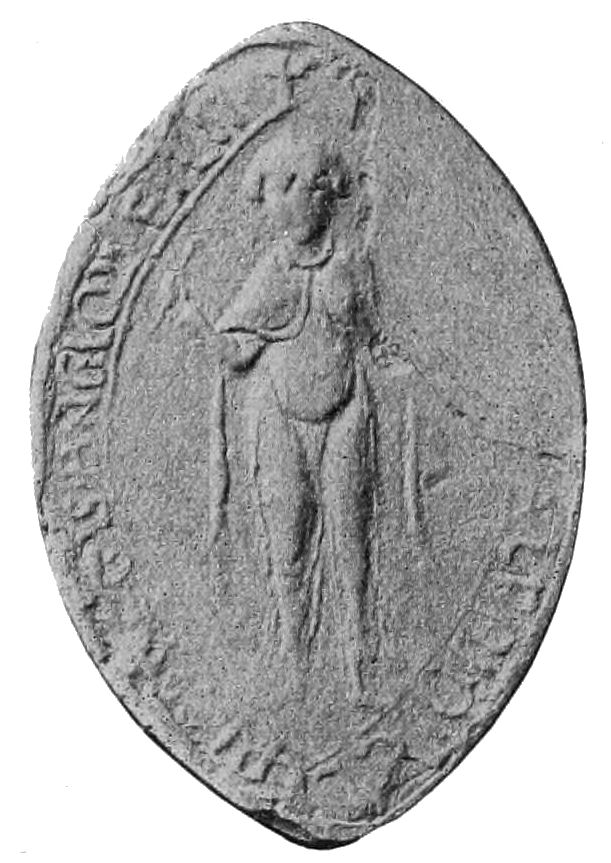
SEAL OF GEOFFREY THE BASTARD AS BISHOP ELECT OF LINCOLN (1/1)
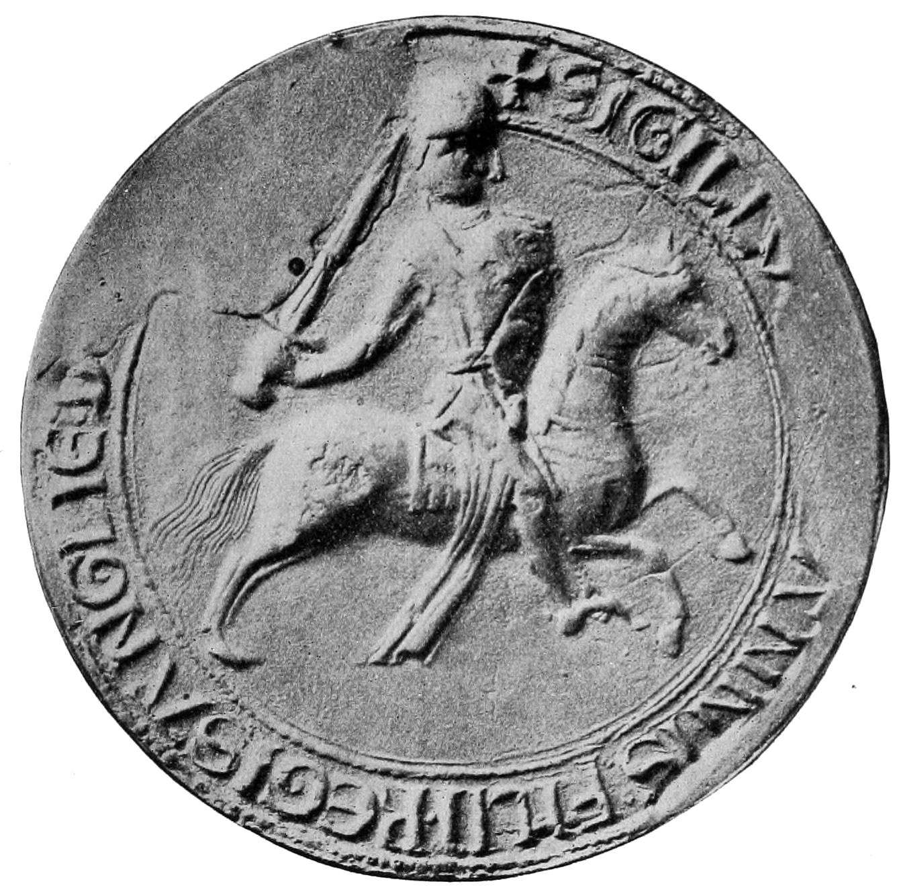
SEAL OF JOHN AS COUNT OF MORTAIN (1/1)
Normandy, Henry sent Geoffrey with almost all his forces to Alençon, himself making his way towards Chinon. John now took the opportunity of deserting his father, although Henry had just shown his partiality for him by making the seneschal of Normandy and Earl William de Mandeville swear that in the event of his death they would only give up the castles of Normandy to John and to none other. Geoffrey, his brother, base in birth but not in nature, as soon as he had discharged his commission spurred back to join his royal father, whose illness, aggravated by the strain and grief of the last few days, had entered upon its final stage.
Meanwhile Philip, carrying everything before him, had reached Tours on
30th June. There he received a mission from the Count of Flanders, the
Archbishop of Rheims, and the Duke of Burgundy, urging him to come to
terms with Henry. Tours was captured on 3rd July, and next day King
Henry agreed to a meeting at a house of Templars not far from Colombier,
near Azai, but when Henry reached the spot and dismounted he found that
his legs would not support him, and his agony was such that he was
obliged to lie down. King Philip and Richard on their arrival, not
finding Henry, denounced his illness as a feint, and it was not until
the king rode up, supported on his horse by his attendants, that they
realised that he was dying. Philip courteously spread a cloak upon the
ground and bade him be seated, but his indomitable spirit{171}
{172} would not
allow him to display so much weakness. He had come prepared to accept
any terms, to make any concessions, but with the full intention, if he
lived, of winning all back by the power of the sword. Philip’s terms,
considering the hopeless position of his adversary, were not ungenerous.
Henry had to surrender all claims to Auvergne and to do homage to Philip
for his continental dominions; Alais was to be taken from his custody
and married to Richard, who was to be recognised as his father’s heir
and to receive the fealty of his barons. Moreover, all those who had
joined Richard during the war were to remain his men and not to return
to their allegiance to Henry. Finally, Henry was to pay 20,000 marks to
the French king, and the agreement for a common crusade was renewed,
Lent 1190 being named as the date and Vézelay as the rendezvous. At the
end of the interview Henry had to give his son the formal kiss of peace,
but as he did so he muttered, “May God grant that I live long enough to
take my revenge upon you,” a threat at which Richard openly jested to
his friends.
Henry returned from Colombier to Chinon, and as he lay upon his deathbed the list of those who had deserted him and sworn allegiance to Richard was brought in. He bade the bearer read out the names, but when the first name of all proved to be his best-loved son, John, for whom he had done so much, he stopped the reader, saying, “It is enough! Now let come what may!” Broken-hearted and racked{173} with pain the great king lingered on for two days, muttering in his delirium “Shame on a conquered king!” and cursing his sons. The sole redeeming feature of these last days was the unremitting tenderness with which Geoffrey nursed his father, who repaid his affectionate care with words of loving praise, giving him at the last his royal signet ring engraved with his symbol, a leopard.[37] Yet even Geoffrey seems to have been absent at the moment that his father passed away, and the few servants who were there, seizing the opportunity to lay hands on everything portable that was worth taking, left the king’s body lying half naked and uncared for, till one William Trihan, known only to history for this good act, placed over his royal master his cloak, appropriately one of the short Angevin cloaks, the introduction of which into England had earned Henry the nickname of “Courtmantel.”
Thus, on 6th July 1189, died Henry II.
Next day the dead king was carried to Fontevrault, where, in the church of the great nunnery, his body lay for a time in state. Hither came Richard, now in his turn king; for a while he stood and gazed at the stern uncovered face of his father, then, kneeling for a brief moment in prayer, rose, and{174} calling William Marshal and Maurice de Craon to him, strode out of the church. In a few words he showed that he bore no ill-will towards his father’s loyal adherents and then departed, to return next day for the funeral. Henry had never cared much for the outward pomp and circumstance of kings, and such emblems of royalty as he may have had with him in his last days seem to have been either lost at Le Mans or stolen at the time of his death. And so when he was being robed for burial it was with difficulty that the royal insignia of crown, ring and sceptre could be improvised, and he who had been the greatest of the princes of Europe was laid to rest with less ceremonial splendour than many an obscure vassal.
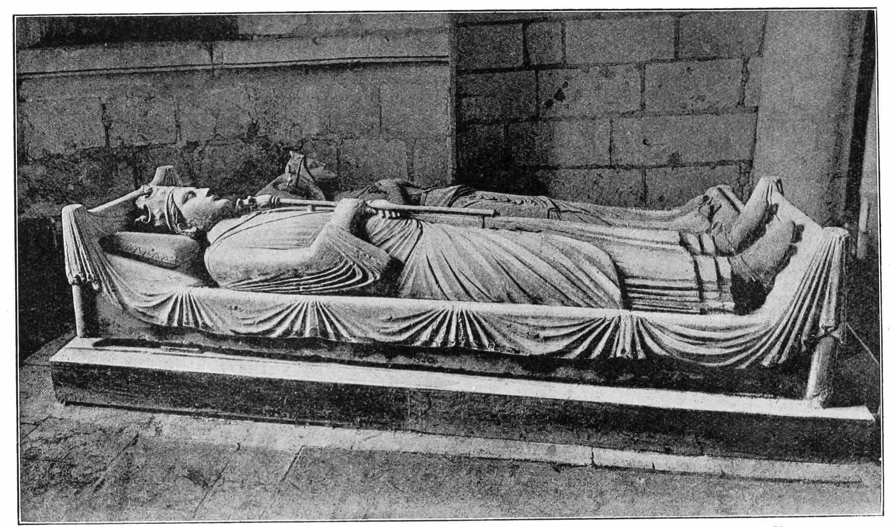
Neur dein, Photo.
TOMB OF HENRY II AT FONTEVRAULT
The reign of Henry II. is of particular importance in English
constitutional and legal history. It was a period of evolution, of
crystallisation, a period of transition. As in architecture we have at
this time the transition from Norman, or Romanesque, to Gothic, so we
have the transition from oral tradition and custom to written law and
formula. As the Saxon blood was blending with the Norman to form the
English people, so Saxon law was assimilating Roman law and the theories
of the Canonists to form English law. The genius of Henry lay rather in
organisation than in initiative. Possessing an innate love of justice
and an instructed appreciation of legal forms, he set himself to evolve
method and order from the somewhat chaotic confusion of conflicting
customs. Under his hand the young plant of English law was pruned,
trained, and bent in the direction in which it was to grow during the
succeeding centuries. His natural inclination for the work was doubtless
whetted by the twofold consideration that every extension of the central
royal jurisdiction involved a diminution of local feudal{175}
{176} jurisdiction
and that increase of legal control implied increase of revenue. The
personal part played by the king in the administration of the law was
striking. Constantly we find him sitting in a judicial capacity,
following with more or less patience the involved arguments of the
advocates, inspecting charters in dispute, criticising them shrewdly and
impartially, and exhibiting a legal acumen which proved that he was
worthy, apart from his rank, to preside over the ultimate court of
appeal.[38] The strong arm of the law could hardly be invoked without
his aid, and the slow foot of justice could only be hastened with his
assistance. And for such assistance payment must be made. Henry was,
indeed, notorious as a “seller of justice”; but if the commodity was
expensive it was at least the best of its kind, and there is a profound
gulf between the selling of justice and of injustice. A bribe might be
required to set the machine of the law in motion, but it would be
unavailing to divert its course when once started. When John le Viel, a
wealthy citizen of London, was convicted of taking part in a series of
outrages which culminated in the murder of Earl Ferrers’ brother in
1177, his offer of 500 marks to the king{177} gained him no reprieve and he
suffered the death penalty with his humbler and poorer accomplices.
It is partly owing to the personal predominance of the king as law-giver that exact dates and details of the institution or formal adoption of certain methods of legal procedure are hard to ascertain. A verbal instruction or a few written lines to the justiciar would be enough to establish a formula which would rapidly become a commonplace of law without exciting comment from any chronicler. There are, however, some four or five occasions on which a definite code of laws or regulations was published and duly recorded. The first of these was the code drawn up in 1164 to define the relations of Church and State. The circumstances in which these “Constitutions of Clarendon” were drawn up have already been considered. They were drawn up definitely as representing the rules in force in the time of Henry I., and it would seem that for the most part they could fairly claim this antiquity, though their continuity had been broken by the disorder of Stephen’s reign. That they lost something of their elasticity and became more pronouncedly favourable to the secular courts when they were reduced to writing can hardly be doubted, and that there was some small amount of actual innovation is highly probable, but it is as compiler rather than author that the name of Henry II. should be associated with the Constitutions of Clarendon.
By these Constitutions it was asserted (cap. 1){178} that all actions concerning the advowsons of churches should be heard in the king’s court,[39] even if both parties were clerks, and that (cap. 2) the king’s consent must be obtained before any church held in fee of the crown could be granted in perpetuity. By a further assertion of the royal proprietary rights (cap. 12) the king claimed to have the custody and control of all sees, and of such monasteries as were in the patronage of the crown, during their vacancies, and to determine when their new heads should be elected. Whatever may be said against this claim morally—and it certainly gave the king every inducement to prolong such vacancies and leave a wealthy see or abbey headless—it was undoubtedly a custom of respectable antiquity, based presumably on analogy with the king’s feudal right to the custody of the lands of his lay tenants-in-chief during the minority of their heirs. The identity of status of lay and ecclesiastical tenants was insisted upon in the order (cap. 11) that prelates and beneficed clergy who held of the king in chief should hold their lands as baronies and perform the services due therefrom, including the duty of sitting as judges on the Bench with the lay barons, save that they should not take part in pronouncing sentence of death or mutilation.
Besides pleas of advowsons all pleas of debt were now removed from the ecclesiastical courts (cap. 15),{179} even when involving breach of oath. A third class of actions, those concerned with lands said to be granted in alms to churches, involved a more elaborate procedure (cap. 9). If a piece of land were claimed by a clerk as belonging to his church and by a layman as belonging to his lay fee the question was first to be referred to a jury of twelve men of good standing; if they decided that the land was held in alms the case should be tried in the ecclesiastical court, but if the contrary, then in the king’s court. The appearance of this jury of twelve is very important, and it occurs again in the Constitutions. Certain moral offences were admittedly the province of the Court Christian, but it was common knowledge that the archdeacons and their officials, whether from lack of legal training or of charity, accepted accusations on very insufficient evidence; it was therefore laid down (cap. 6) that such accusations ought not to be made against laymen unless supported by responsible witnesses; but in cases where witnesses dare not come forward, owing to the rank or power of the accused, a jury of twelve men of good standing might be summoned to inquire into the truth of the accusations.
In these two instances of the appointment of juries we have almost certainly innovations, and it is to Henry II. that we must attribute the institution of the trial by jury. It must be borne in mind that just as these twelve jurors differed in everything but number from the Anglo-Saxon “doomsmen,{180}” whose office was to give sentence, so they also differed from the modern jury. The modern juryman is supposed to start with a completely open mind, and indeed in America even a remote and superficial knowledge of the nature of the case to be tried has been considered a disqualification; but the medieval jurors were men chosen for their knowledge of the matter in dispute; they were witnesses—not witnesses for the prosecution or for the defence, but, being summoned by an impartial authority, witnesses for the truth; they answered the questions put to them in the light of their personal knowledge and not as a result of deductions from the deliberately misleading arguments of rival advocates. The evolution and progress of legal procedure is always interesting, and particularly so in the case of the peculiarly English institution of the jury. The occasional appointment of juries of inquest to settle special points may, of course, be traced back for generations, but the definite establishment of the jury as a legal instrument dates from the reign of Henry II.
The claims of the spiritual courts were complicated by possessing a double basis; on the one hand they claimed all actions which could in any way be held to be concerned with morals or with the property of the Church, and on the other they claimed jurisdiction over all persons who had been admitted to the ranks of the clergy. While admitting the theory of clerical exemption in criminal cases Henry endeavoured to neutralise it in{181} practice. The suggested compromise, which was the chief bone of contention between him and the Church party, was (cap. 3) that an accused clerk should be summoned before the king’s court, and if a primâ facie case were made out against him he should be remitted to the bishop’s court for fuller trial and sentence, the proceedings being watched by one of the royal officials. If convicted he should ipso facto forfeit the Church’s protection and become amenable to the common law. This latter proviso had to be abandoned, but within about a century of the birth of the Constitutions the royal courts had established their right to pronounce upon the guilt of an accused clerk before handing him over to the ecclesiastical court. While the Church was claiming exemption from lay justice it was natural that an endeavour should be made in retaliation to limit the scope of the Church’s sentence, and accordingly it was ordered (cap. 7) that no tenant-in-chief or royal officer should be excommunicated without the king’s permission, and a similar protection was extended (cap. 10) to all persons dwelling in a royal borough, castle, or manor. In both cases it was expressly stated that the king or his officials would endeavour to compel the offender to make satisfaction, so obviating the necessity for excommunication, and indeed it was laid down (cap. 13) that the royal and ecclesiastical courts should give one another mutual assistance in bringing offenders to book.
A further blow was aimed at clerical independence{182} by the regulation (cap. 8) that there should be appeals from the archdeacon’s court to that of the bishop and thence to that of the archbishop, but that appeal from the archbishop’s court should be to the king’s court and not to Rome without royal consent. To prevent this rule being broken Henry maintained (cap. 4) that prelates and beneficed clergy had no right to leave the country without royal licence, and that in any case they must swear to do nothing to the prejudice of king or realm during their absence. The supremacy of the pope, however, proved to be too firmly rooted in the minds of the clergy, and these articles had to be dropped, Henry himself during the Becket controversy being obliged to resort to constant appeals and counter-appeals to the papal court.
During the seven years’ struggle with Becket which followed the promulgation of the Constitutions of Clarendon, Henry did not neglect the cause of legal reform, and early in 1166 he issued an important series of injunctions known as the Assize of Clarendon. These injunctions, turning upon the existence of a system of itinerant justices, whose presence in all parts of the country at frequent intervals they take for granted, prove that the custom of sending commissions of judges on circuit, which had been inaugurated by Henry I., but had fallen almost out of use, and certainly out of all regularity, under Stephen, had been restored by Henry II. The evidence of the Pipe Rolls shows{183} that during the early years of the reign most of these “eyres,” or itinerant courts, were held by the leading royal officers, such as the chancellor, the justiciar, or the Earl of Essex, acting singly or together, but in 1176 the king divided the whole country into six circuits and appointed three justices to each circuit. For some reason this scheme did not work well, possibly from an excess of zeal and self-importance on the part of the justices, and in 1179 Henry revoked these appointments and constituted a central royal court of five justices; subsidiary to this permanent court he established four circuits, the commission for each circuit being five judges, though, by an apparent contradiction, the commissioners for the northern circuit were the officers of the permanent central court. The arrangement of the circuits varied from time to time and constant changes were made in the personnel of the judges, but the main features of itinerant courts with a permanent central court above them became fixed. From the central court there was appeal in cases of difficulty to the king and council.[40] As we have already said, Henry took a large personal share in the administration of justice, but he acted strictly within constitutional limits, and it was always the council that pronounced the sentence, though the influence of the king’s expressed opinion would naturally be paramount.
By the Assize of Clarendon it was ordered that the sheriffs and itinerant justices should make careful search for evil-doers throughout the country. Twelve men of good standing from each hundred and four from each township were to declare on oath what men in their district were known or suspected to be robbers, murderers, thieves, or harbourers of bad characters. All such were at once to be arrested and brought before the nearest justice and compelled to purge themselves by the ordeal of water. In this ordeal the accused was bound hand and foot and thrown into a pond or pit, of which the water had previously been consecrated by a priest.[41] If the water rejected him, so that he floated, he was considered guilty, his foot was struck off and his goods were forfeited to the king; but if the water received him and he sank he was dragged to land and his innocence was held to have been proved. But a sceptical feeling towards the ordeal was growing up, and the Assize ordered that if the repute of the accused were notoriously bad and the accusations against him well sustained, then, even if he acquitted himself by the ordeal, he should be banished{185} from the country, being bound to leave England within a week, or as soon after as the wind would serve.
By reserving all cases of this type to the jurisdiction of the king’s courts and by authorising the sheriffs to enter any “liberty” or honour for the purposes of arresting criminals or of supervising the police organisation of frank pledges a severe blow was struck at the private feudal courts, and, incidentally, the security of the law-abiding populace was much increased. To strengthen this security yet more the king gave orders for the erection of gaols in every county and for the compilation of lists of fugitive criminals. No unknown wayfarer or vagabond might stay for more than one night in any borough unless he or his horse fell ill, and all newcomers settling in any county had to find sureties for their appearance before the justices, while a final haven of refuge was closed to the fugitive by the rule that no religious house should receive into its fellowship any man of the lower class (de minuto populo) without inquiry into his antecedents.
It is probably to this same year, 1166, that we may assign the Assize of Novel Disseisin, by which possession became not merely nine-tenths of the law but the law itself. Under this assize any person who was seised, or possessed, of a freehold and was ejected therefrom, or disseised, without a previous decision of the court, might recover his seisin by an action before the king’s court, without regard to the goodness of his original title. There is some{186} reason to believe that this theory of the right of the actual possessor to remain in possession until the claimant had proved his better right to the property was recognised in the previous reign, but it was under Henry II. that it took definite form as a fixed method of legal procedure which formed the basis of innumerable actions in later times. About this same date, too, we find evolving another legal form which was to play a very important part in the history of the conveyance of land. It is self-evident that from time to time the parties concerned in a suit before the king’s court might find it to their mutual advantage to come to a compromise. As this would involve the abandoning of the suit, probably depriving the king of certain perquisites of justice and certainly rendering nugatory the trouble taken by the justices over the preliminaries of the trial, the king’s leave to compromise had to be purchased, and frequently the terms of the agreement were submitted to him for confirmation. To begin with, these agreements, which from their putting an end to the suit were called “final concords” or “fines,” would be drawn up casually, expressing each particular composition in such phrases as seemed most convenient, but the Justiciar Glanville, writing at the end of Henry’s reign, lays down a definite formula to be used in drawing up a Fine, and this formula can be traced back to 1172 and occurs, with slight variations, as early as 1163,[42] though{187} instances before 1180 are rare. When these Fines acquired the recognised status of legal formulæ steps were taken to preserve official copies of them, and as soon as it was realised that the execution of a Fine was the surest way of securing a permanent record of a conveyance of land, or similar deed, it became the practice to bring fictitious actions with the express intention of compromising them and executing Fines. The Fine was, therefore, at a later date almost invariably the termination of a fictitious suit, but there is no reason to believe that this was so in the time of Henry II. to any great extent, and though we owe to him the formula of the Fine it remained in his time a genuine act of compromise, and incidentally a considerable source of revenue.
The administration of the Assize of Clarendon, especially of those portions concerned with forfeitures and pecuniary penalties, seems to have given rise to much complaint. The sheriffs were said on the one hand to have used their power to extort more than was due and on the other hand to have paid into the exchequer less than was due. Further rumours of peculation in connection with the aid for the marriage of the king’s daughter in 1168 having reached Henry’s ears, he suspended all the sheriffs in 1170, and ordered a careful and minute inquiry into the whole question. All moneys paid to sheriffs and other officials, or to magnates and their stewards, during the past four years, were to{188} be set down, with a notice whether they were demanded with lawful warrant or without. The value of the goods of convicted or fugitive felons and the amounts paid towards the marriage aid were also to be returned, and note was to be made of any bribes accepted by the sheriffs or hush-money given by them. The inquiry was also to extend to breaches of the Forest Law and the conduct of the officials administering it. The only fragments of the returns[43] to this inquiry that are known to have survived throw little light on the general conduct of the sheriffs and their subordinates, though they illustrate the truth that taxation always soaks through to the lowest stratum of society. Although taxation under Henry did not fall with nearly so direct and crushing a force upon the poor as under King Louis in France, the large sums extorted from the English magnates had naturally to be raised by them in part from their poorer tenants, and if the king expected his lords to make large “gifts” of money to him it was natural that they should in turn impress upon their subjects the duty of giving “willingly” to them.
One immediate result of this inquiry of 1170 was the substitution of men from the ranks of the exchequer and court officials in place of local magnates as sheriffs. The change was a wise one, increasing{189} the skill of administration and reducing the risk of extortion and undue use of influence. The continuous undermining of the baronial authority, of which this was but one more instance, had a double effect at the time of the young king’s rebellion in 1173; on the one hand it drove the more intolerant nobles to take up arms against King Henry, but on the other it put in the king’s hand a powerful organisation controlled by loyal officials, whose prospects were bound up with his own and supported by the mass of the people, who had every reason to appreciate his rule and to fear the victory of the feudal reactionaries. After the rebellion had quieted down Henry issued, at Northampton in 1176, an assize of wider scope than any other of his reign. The decrees of the Assize of Clarendon were repeated but re-enforced; forgery and arson were added to the Pleas of the Crown about which inquiry was to be made, and the convicted felon was to lose a hand as well as a foot. Returns were to be made of the escheats, churches, and heiresses who were in the king’s gift, and the justices were to try actions brought under the Assize of Novel Disseisin and were also given control of cases concerned with as little as half a knight’s fee. Finally, an important regulation was laid down that if a free tenant died his son and heir should at once have such seisin of the freehold as his father had at the time of his death, and the widow should have her dower. If the lord of the fee did not admit the heir of the freehold the{190} justices should cause an inquest to be made by the jury of twelve men which had now become so integral a part of legal procedure, and if they found that the father had died seised the heir should recover possession. In this we have clearly the first enunciation of the Assize of Mort d’Ancestor, which in course of time was extended from the direct to the more remote degrees of kindred.
The work begun by the Assizes of Novel Disseisin and Mort d’Ancestor was brought to a logical completion in 1179 by the institution of the Grand Assize. By this assize any action concerning a freehold could be transferred from the manorial to the royal court. The demandant in the lower court was bound, as of old, to offer to prove his claim by the judicial duel, a clumsy process entailing endless delays and expense and the humiliation, if not death, of the defeated party, and often ending in a way clearly contrary to justice. Now, by this new regulation, the tenant when challenged might “put himself upon the assize”; the demandant would then sue a writ in the king’s court, four knights would be appointed to elect a jury of twelve knights, or country gentlemen as we should call them, associated with the district in which the disputed land lay. The jury had then to state from their own knowledge, or from what their fathers had told them, which of the two parties had the better claim to the land. If any of the jury did not know anything of the matter they were discharged and others{191} put in their place, and if the knights were divided in opinion their numbers were increased until twelve decided in favour of one party. Knowing, as we do from the Plea Rolls of the next reign, how protracted a suit might be under this assize, we can appreciate from Glanville’s encomium on the comparative rapidity of the process how interminable must have been the proceedings under the old methods. It was not only a great extension of the influence of the king’s court, but was also a victory for common sense and sound law, and the absurd and illogical ordeal by battle rapidly fell into disuse, though it was not actually repealed in English law until 1819 and is still retained for the settlement of international quarrels.
The Grand Assize of 1179 is the last definite reform of Common Law procedure that we can connect with Henry’s name, but in 1184 he issued an Assize of the Forest. Under the Norman kings the doctrine of royal rights over those unreclaimed woodlands, moors, and heaths which were known as forests was rigorously asserted. Henry I., in particular, had so stretched his claims as to exercise jurisdiction over the sporting preserves of his barons, ignoring their rights and oppressing their tenants by the application of the arbitrary regulations of the Forest Law. Stephen had been compelled to relinquish all those forests which had been created by Henry I., and to confine the claims of the crown to those that were in existence at the time of the death of William{192} Rufus, but Henry II. had gradually reasserted his grandfather’s claims, though not in their entirety. Henry himself was an ardent sportsman, finding in hunting and hawking an outlet for his ceaseless activity of spirit, and appears to have regarded poaching on the royal preserves as the most heinous of all offences. From the beginning of his reign justices from time to time toured the country inquiring into breaches of the Forest Law and mulcting the offenders, and we have seen how in 1176 he bled the whole country by a deliberate abuse of that same law, but it does not seem that any definite code was drawn up until the assize was published at Woodstock in 1184. Whether this was a stiffening of the laws in use, as is generally assumed, or a relaxation, or merely a codification, cannot be decided. In any case the laws, though severe, were less savage than those of Henry I. The technical details of the regulations touching the king’s forests and his subjects’ woods and coverts cannot here be dealt with, but some of the devices to stop poaching may be noticed. No one within the forest bounds might keep bows and arrows, dogs or hounds without licence; hunting at night involved a year’s imprisonment and a fine; all large dogs (mastivi) within the forest districts were to be hambled, that is to say, lamed by cutting out the ball of the foot, to prevent their chasing the deer, and no tanner or white tawer might ply his trade within the forest bounds outside a borough. Finally every man above twelve{193} years of age within the forest district had to swear to observe the laws; this applied also to all clerks holding lay fees, and in many ways the most notable section of the assize is that which definitely asserts the susceptibility of the clergy to the Forest Law and authorises the royal officers to lay hands on clerical offenders.
Finance plays as prominent a part in public as in private life, and the fortunes of a nation are as much built upon a money basis as those of an individual. This somewhat obvious truism is particularly applicable to the reign of Henry II., owing to the important share taken by hired mercenary soldiers in his numerous campaigns, the wealth at the king’s disposal frequently enabling him to dispense with the service of disaffected or untrustworthy vassals. And the main source of this wealth was England, or at least it was from England that were drawn those extra supplies that formed the critical margin of safety, for while we hear constantly of treasure sent from England to the king or his ministers in Normandy we find no trace of any surplus from Henry’s continental treasuries reaching the treasury at Winchester. Fortunately we possess the material for our examination in the series of revenue accounts known as the Pipe Rolls, complete from the second to the last year of the reign.
The treasury, with the controlling machinery of the exchequer, had been fully organised under Henry I., and an analysis by Sir James Ramsay of{195} the one surviving Pipe Roll of that king’s reign, that for the thirty-first year (1130), shows the total royal revenue to have been about £27,000. During the anarchy that prevailed under Stephen’s nominal sovereignty the organisation of the exchequer virtually fell into abeyance. While there is no evidence of Stephen having been at any time in difficulties for lack of money, it is clear that his permanent and assured revenues must have been very small. The districts in which his power was sufficiently established to ensure the collection of the royal dues varied from time to time and at best were limited, while their yield was still further reduced by the lavish grants of crown demesnes with which he had been compelled to purchase the allegiance of powerful barons. Henry II., on coming to the throne, had, as we have seen, resumed possession of the royal demesnes thus alienated, and he also entrusted the re-organisation of the exchequer to Nigel, Bishop of Ely. Order was soon restored, though it was several years before we find the same elaboration of the financial network as was exhibited in 1130.
A careful analysis of the Pipe Roll for 1156, the first of the series, shows that the total amount of the revenues dealt with, which exclude the issues of the three northern counties, still at that time in the hands of the King of Scotland, was in round figures £21,650. But of this £6000 has to be deducted for portions of the royal demesnes which had been granted to various persons, and for payments{196} pardoned or remitted by the king. Another £2250 had not been paid and was still owing, a certain proportion being bad debts. Of the remainder, £9120 was paid into the treasury in cash and £4260 had been spent by the sheriffs and other accountants on the king’s behalf in payment of alms, repairs to buildings, wages and miscellaneous purchases. The actual revenue of this year may therefore be taken as about £13,000, or rather less than half that of Henry I. in 1130.
Turning now to the consideration of the sources of revenue, the first is the farms (firmæ) of the various counties and honours, these being fixed sums at which the sheriffs of the counties or the farmers of the honours compounded for the issues of the lands under their control. Upon occasion a county might for some reason be without a sheriff, in which case one or more wardens (custodes) would be appointed, and they would answer in detail for the issues and receive payment in reward for their services. In some cases the totals of these issues amount, as we should expect, to more than the fixed farm, the difference between the two sums being what the sheriff would have for his labour. But occasionally, and notably in the case of London,[44] the yield under custodes was considerably less than under a sheriff. It is hardly conceivable that the sheriff, in addition to the labour and responsibility of his official duties, should have been expected to make a loss over the render of his{197} farm, but our knowledge of the methods by which the various moneys were collected before they reached the exchequer is too slight to enable us to explain this phenomenon. An incident which throws upon the question a light so uncertain as to render it almost more obscure occurred at the beginning of the Becket controversy. At a council held at Woodstock in 1163 the king demanded that a certain payment customarily made to the sheriffs from the lands of the counties under their control should in future be entered on the rolls and accounted for at the exchequer. Archbishop Becket rejected the demand, declaring that the payments in question were voluntary, that they depended upon the good conduct of the sheriffs, and that he would never consent to pay one penny on this account to the king. The chronicler who relates this incident at most length adds that the payment in question was two shillings from every hide, but this was almost certainly an error due to confusion with the Danegeld; the “sheriff’s aid,” about which the dispute arose, was not levied on any fixed basis but varied in different parts of the country.[45]
{198} So far as we can see, the object of King Henry was to make the sheriffs more entirely dependent upon himself, drawing them into the position of the custodes as mere salaried officials of the exchequer; incidentally, no doubt, he hoped at the same time to obtain a substantial increase of revenue by appropriating the “aid.” The objection voiced by Becket seems to have been based precisely on the king’s wish to make the sheriffs responsible solely to himself; under the existing arrangement a sheriff who abused his authority ran the risk of losing the emoluments of his office, and even with this check these officials and their underlings not infrequently misused their power, extorting money from those under them and failing to account at the exchequer for money received. So notorious, indeed, did their maladministration become that, as we have seen, in 1170 Henry was driven to take summary action, removing all the sheriffs from office and appointing commissions to inquire into their conduct. Some of the officials thus removed were fined and very few were restored to their former position, but the new men appointed do not seem to have been greatly superior to their predecessors, and it is clear that whatever the sheriff lost or made over his farm he certainly possessed valuable perquisites, both legitimate and of doubtful legality.
The farms were the only fixed source of revenue, but an uncertain amount could always be relied upon from legal procedure (placita), fines inflicted for{199} breaches of either the Common or Forest Law, amercements levied on hundreds, tithings, or townships for murders, payments made for leave to compound a suit begun in the king’s court, and penalties due from the defeated party in a judicial duel. For the most part the items under this head were small, though in the aggregate their amount was considerable, but not infrequently we find heavy fines inflicted upon men of wealth, for which no reason is given and which were in some cases, no doubt, arbitrary acts of extortion on the king’s part. In 1165 Earl Hugh of Norfolk paid half of a fine of 1000 marks, while the Abbot of St. Edmunds, William Cheyney, and two other East Anglican magnates were amerced 200 marks apiece. That same year Hugh de Mortimer was fined 500 marks, the Bishop of Lincoln 400 marks, Ivo de Harcourt 300 marks, Ralf de Cahaignes and Lefwin of York a like amount, the Abbot of Westminster £100, and Abraham, the Jew of London, £2000. The Jews, indeed, were a fruitful source of income: their financial genius had enabled them to concentrate most of the floating capital of the country in their hands. They had almost as much a monopoly of ready money as they had of the trade of usury. In this latter respect their monopoly was protected by the ban of the Church directed against Christian usurers, and, safe from competition, they lent their money at their own terms, usually about 60 per cent., to litigants, ambitious prelates, or impoverished monasteries, at one time{200} financing an unauthorised expedition to Ireland and at another assisting the king with large advances.[46] Henry was too sensible of their value to persecute, or to permit his subjects to persecute, the Jews, but he had no scruples in fining them arbitrarily enormous sums, which might have been crippling if they had ever paid more than a fraction of them, and in 1188, when he ordered his other subjects to pay a tenth of their goods towards the crusade, he made the Jews contribute a quarter instead of a tenth. In this latter case one of the London Jews was allowed to compound for his share of the subsidy by a payment of £200, of which half was to be paid, perhaps by the grim humour of the king, on the Sunday on which the canticle “Rejoice, O Jerusalem” is sung. It was in the previous year that the wealthiest of all the English Jews, the famous Aaron of Lincoln, had died, and by the law relating to usurers, whether Jew or Christian, his immense possessions, equal apparently to more than the yearly revenues of the crown, had fallen to the king, only to perish in great part beneath the waves of the Channel.
If the death of a usurer brought grist to the king’s mill so did that of a prelate. However inexcusable from a moral point of view the seizure of the issues of vacant bishoprics and abbeys may have been, the temptation must have been strong. For example, the vacant abbey of Glastonbury in 1181 brought in £600 clear, and next year the see of Lincoln accounted for £1290 and that of York for £1260; Canterbury varied from £1100 to £1500. The farm of the bishopric of Winchester in 1172 was £1555; Ely produced nearly £900, and even Bath was worth £425 clear in 1167. Very few lay honours approached even the smallest of these sums, but with lay estates as with clerical the death of the tenant was made a source of profit to the king. If the heir were under age he and his lands would be taken under the royal protection and either managed directly for the king’s benefit or granted, for a consideration, to some person of position, who might or might not be a relation of the heir, while the tenant’s widow could be sold in marriage or made to pay heavily for the right of following her own choice. Even if the heir were of age and there were no widow to mulct, the new tenant would have to pay “relief,” or death duties, graduated on the simple lines of getting the utmost possible out of the landowner. For small estates the normal rate of “relief” was £5 for a knight’s fee, the average value of a fee being at most £20, but in the case of large estates the amount demanded seems, as we have said, to have been arbitrarily{202} fixed by the king. In 1185 as much as 700 marks was demanded of the Countess of Warwick for the privilege of having her father’s land, her dower and liberty to remain single. To a certain extent these enormous fines, whether inflicted as succession duties or for other reasons, were bruta fulmina, defeating their own ends. Usually the debtor contented himself with paying yearly instalments, sometimes round sums and sometimes strangely complicated amounts which suggest a sudden demand from the sheriff satisfied by a prompt clearance of pockets. The first instalment was as a rule substantial; Fulk Paynel in 1180 paid 200 marks out of the 1000 marks demanded of him for the honour of Bampton; but in the same year Adam de Port only paid £40 out of a similar fine for possession of his lands and his wife’s inheritance in Normandy and for restoration to the king’s good favour. Fines might thus drag on literally for generations, the instalments often showing a tendency to dwindle away until they ceased, and either the king excused the payment of the rest or the sheriff wrote it off as a bad debt. Almost any payment on account seems to have been accepted, and in 1187 William Fitz-Ercenbald, who owed £2156 for arrears of farm of the silver mines of Carlisle, paid in the rather absurd amount of 13s. 4d.
Although all these sources could be counted upon to yield something every year the annual yield varied greatly. There were, however, means of{203} raising extra occasional revenue, of which the amount could be foretold with some accuracy. In the first place there was the Danegeld, dating back to Saxon times. This was a tax of two shillings on every hide of land as rated in the Domesday Survey. It was levied in 1156, when the accounts show that if it had been collected in full it would have amounted to £4550, but owing to extensive remissions and exemptions, extending to a little over £2000, the total yield was only £2500. For some unknown reason this tax was only levied once more, in 1162, and was then allowed to fall into disuse. Of more doubtful legality but, as a rule, of greater profit were the “aids” (auxilia, dona) assessed upon the counties and boroughs from time to time, regulated apparently by the king’s need of money and the taxable capacities of the districts assessed. In 1156 these “aids” yielded £2100, with a further £100 still owing, while in 1159, according to Sir James Ramsay, the amount was well over £5000. On the latter occasion the “aids” were levied upon bishops, certain of the wealthier lords, clerical and lay, and Jews as well as upon the boroughs; amongst the biggest payments were those of the city of London £1000, Norwich £400, York, Lincoln, and Northampton 200 marks each, the Archbishop of York 500 marks, the Bishops of Durham, Winchester, and Lincoln a like amount, and the Abbot of St. Augustine’s, Canterbury, 220 marks. Two years later York again paid 200 marks, but Lincoln had{204} risen and Norwich fallen to £200, and London escaped with 1000 marks.
By feudal custom Henry was entitled to call for an “aid” from his military tenants on the occasion of his eldest daughter’s marriage, and in 1168 he availed himself of this right, stretching his demands to include many persons outside the military classes, to whose contributions he had no just claim. The similar feudal “aid” for the knighting of his eldest son was never raised, as the young king was knighted at the time that he was in opposition to his father. Finally, in time of war the king could call for Scutage, a monetary composition in lieu of personal service with the army. The amounts demanded for Scutage varied from one to two marks for the knight’s fee, the larger sum being exactly equivalent to the wages of a “knight,” or man-at-arms, for forty days, the period for which the tenant of a knight’s fee was bound to serve. Scutage was called for in 1156 for the war with Geoffrey of Anjou, in 1159 for the Toulouse fiasco, when £2440 is said to have been paid, implying the commutation of the personal service due from 1830 knights, in 1161 and 1162 for war with France, in 1172 for the Irish expedition, and, finally, in 1175 for the projected expedition to Galloway. Whether the “assessment for the army in Wales,” raised in 1165, should be considered as a scutage is questionable; it appears to have been more of an irregular “aid.”
How far the exchequer officials of the period{205} indulged in anticipatory estimates of revenue, framing their simple and elastic budgets thereon, cannot be said. Possibly the half-yearly provisional accounts rendered by the sheriffs at Easter enabled them to foresee whether additional taxation would be required to bring the revenue up to the required amount by Michaelmas. Possibly, on the other hand, extra taxation was put on whenever the balance in the treasury seemed to be getting low. But however this may have been, the annual revenue was kept by one means or another at a pretty constant level. Sir James Ramsay gives the totals alike for 1159, in which year nearly £8000 were raised by scutage and “aids,” and for 1169, when no extra taxation was levied, as approximately £20,000. In 1176 the sum actually paid into the treasury was £14,250, while something like £1750 had been spent by the accountants on the king’s behalf, giving a total of £16,000. To this have to be added the enormous sums extorted for breach of the Forest Law. The total of the fines inflicted on this score was £13,450, the New Forest accounting for over £2000 and the forests of Yorkshire £1600, Bedfordshire and Buckinghamshire, Wiltshire, Dorset and Somerset and Oxfordshire being all above £1000. But considerably less than half the sum demanded was paid at the time, and the total for the year may be estimated as between £5000 and £6000, bringing the revenue up to rather over £21,000.
The money collected by the sheriffs and other officials was accounted for every year at Michaelmas{206} at the court of the exchequer. The exchequer (scaccarium) derived its name from the great table covered with a black chequered cloth on which the revenue accounts were set out by means of counters. It must be borne in mind that ability to read and write, though not yet considered as in itself entitling the possessor to “privilege of clergy,” was so far peculiar to the clergy that a large proportion of the lay sheriffs would have been unable to keep or to understand written accounts. Even for those more learned the difficulty of working out complicated sums in Roman numerals must have been considerable, and indeed it is comparatively rare to find any lengthy medieval account in which the sums of the items correspond throughout accurately with the totals given. At the treasury courts, therefore, of England and Normandy, and possibly elsewhere, an elaboration of the “abacus,” or calculating board, was introduced. This consisted of a table, ten feet long by five feet wide, covered with a black cloth on which were drawn seven vertical columns, representing, from right to left, pence, shillings, pounds, tens, hundreds, thousands, and tens of thousands of pounds. These columns in turn were divided by horizontal lines, cutting the cloth into a series of squares like those on a chess-board. Within these squares the accounts were set out with counters. At the Michaelmas session the chancellor, treasurer, and other officials, with their clerks, sat round three sides of the table, while on the other side was the calculating{207} clerk with his counters, and near him the sheriff, who may be regarded as his opponent in the game. Along one line the calculator set out the amounts due from the accounting sheriff, and below it he gradually built up the sheriff’s account, beginning with the money paid in in cash and adding item by item the sums, expended, for which the sheriff produced either the king’s writs or tallies,[47] the sheriff’s object being to make the two amounts balance. In this manner, by ocular demonstration, a long and complicated account could be easily followed, while for permanent record all the items were entered upon their rolls by the clerks of the chancellor and treasurer.
The only coin in circulation in England at this time was the silver penny, and although sums of 12, 160, and 240 pence were spoken of as shillings, marks, and pounds for convenience of calculation, such units had no tangible existence and all money payments were made in pence. Although the money issued during Stephen’s reign was poorly executed, such coins as have survived do not bear out the chroniclers’ assertions that it was debased; but it is probable that the total amount of coin in circula{208}tion was small and that a considerable proportion of it was forged. In any case Henry had issued a new coinage in 1156, but the moneyers appear to have not infrequently debased the silver or made illegal profits in other ways, and in 1158 many of them had to stand their trial by the ordeal of water and several only escaped mutilation by the payment of heavy fines. Twenty years later, in 1177, we find what looks like an organised conspiracy of fraud amongst the Canterbury moneyers, five of their number being fined between them 2500 marks. At last, in 1180, Henry entrusted the re-organisation of the coinage to a foreigner, Philip Aymary, who did his work very well, but so manipulated the business to his own profit that he was banished in disgrace. This coinage, although possessing no particular artistic merit, was technically a great advance on its predecessor, and was so well appreciated that it continued to be struck, with hardly noticeable variations, under Richard and John and well into the reign of Henry III. As a result of forgery, fraud, and the inevitable loss of weight during circulation the 240 pence which constituted the nominal pound “by tale,” or by number, rarely corresponded to the standard pound by weight, and as many of the sheriffs’ county forms were due in “blanched” money, that is to say, in pounds of standard fineness and weight, it was necessary to test the money paid in. To begin with, pence to the value of forty-four shillings were counted out from the mass of money
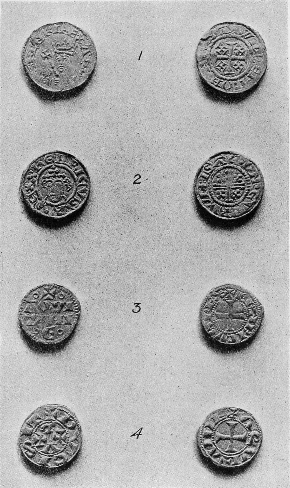
SILVER PENNIES
1. First coinage of Henry II
2. Type introduced in 1180
3. Penny of Henry II struck for Aquitaine
4. Penny of Eleanor as Duchesse of Aquitaine
paid in by the sheriff whose account was under examination. Twenty shillings of this was then melted down in a crucible and purified by fire; the resulting ingot was next weighed against the standard pound, and pence added from the selected money to bring it up to weight; the number of pence required for this purpose having been noted the sheriff was charged on all “blanch” sums due that number of pence in addition to each pound by tale.
When we pass to the consideration of the relative value and purchasing power of money in the middle of the twelfth century as compared with the present time we are met by many complications. The average price of an ox or cow during this reign was from three shillings to four shillings, occasionally rising as high as five shillings; farm horses fetched three shillings, but military chargers cost three pounds or more; sheep ranged from fourpence to sixpence and young pigs were about the same, but when full-grown they fetched as much as a shilling. A penny a day was the recognised wage for a sergeant or private soldier, and eightpence a day for a man-at-arms; the master of the royal yacht received a shilling, the clerk of the household two shillings, and the chancellor five shillings a day. Probably we may take the money of that date as roughly equivalent to twenty-five times the amount in modern currency.
So far as the expenditure of the Crown is concerned{209}
{210} we labour under
considerable difficulties, having no records of the nature of the
Liberate and Issue Rolls of later reigns. The only items of expenditure
which have come down to us are such as have been entered upon the Pipe
Rolls as discharged by the sheriffs and other officers out of the issues
of their offices. The heaviest of these expenses were incurred in
connection with building, and especially in the repair and enlargement
of the royal castles. The rebuilding of Scarborough has already been
spoken of, and amongst the scores of entries of work done on castles may
be mentioned the £1000 spent on Oxford in 1166 and 1167, a sum which is,
however, insignificant beside the £4350 spent on Dover Castle between
1182 and 1187, as much as £1248 being spent in the one year 1185.
Nottingham, which appears to have been one of the most habitable of the
castles, accounted for £450 in 1172 and for over £300 in 1175; large
sums were also spent on the king’s hunting seats such as Woodstock,
Clipston, and especially Clarendon. For the adornment of Clarendon there
were provided in 1177 “marble columns,” probably shafts of dark marble
similar to those the introduction of which by St. Hugh in his new work
at Lincoln so struck contemporary writers. But numerous as are the
entries of building expenses, they can represent but part of the sums
laid out by Henry on such operations, nor do we hear anything of the
cost of the army or of the upkeep of the royal household, though we know
from{211} the existing list of salaries that this last item must have
amounted to about £1500 a year. Whatever were his expenses Henry
contrived to amass a great fortune, which his successor, Richard, found
little difficulty in dissipating.
Society in England during Henry’s reign might be considered as arranged in three groups: (1) The Military Class, with the king at its head, ranging from the semi-independent earl to the humble tenant of some fraction of a knight’s fee. (2) The Merchants and Traders—dwellers in cities and seaports, from the wealthy councillor to the humble apprentice. (3) The Peasantry—the comfortable yeoman, the farm labourer, whose theoretical lack of freedom often sat but lightly upon him, and the hired servants. From this third class the two superior classes were completed. They formed the nameless ranks of archers and foot soldiers who bore the brunt of many a battle, and, unprotected by coat of mail or prospect of ransom, paid forfeit for defeat with their lives, and they were the hardy sailors, serving the merchants in time of peace, but ever ready to convert their ships into men-of-war. It might seem that the clergy should form a fourth class, but they really fall into the same three divisions as the laity. The prelates and dignitaries, holding their lands by military service and bound to provide so many knights for the king’s army, sometimes leading their{213} troops in person; then, opposed to these sons of the Church Militant, the monks and canons of the religious orders, intent on the business of religion, not wholly averse to trading spiritual for material blessings, and displaying some skill in laying up treasure in this life as well as for the next; and finally the poor, but not always honest, parish priests and unattached clerks, the hardest workers and the worst paid, little above the secular peasantry from whose ranks they sprang, their many virtues unrecorded and the excesses of their unworthy members pilloried. If a fourth group did exist it consisted of the officials, blending the characteristics of clerks, soldiers, and merchants—men prepared at a moment’s notice to hear pleas, superintend the purchase and despatch of stores, or take command of a force of soldiers.
The king’s supremacy in his court was indisputable; his greatest nobles were proud to serve him, and quick to resent any infringement of their rights of service. Thus the Earl of Arundel, hereditary chief butler, returning from a long journey just as the two kings, Henry and Louis, were sitting down to dinner, strode into the hall, flung off his cloak and seized the royal goblet from the acting butler, who resisting, the powerful earl knocked him down and presented the wine on bended knee to his royal master, explaining apologetically to the French king that it was his privilege and that the deputy butler ought to have withdrawn without protest. So also, at a{214} later date, William de Tancarville, chamberlain of Normandy, forcibly possessed himself of the basin and ewer which another courtier was carrying to the king. Yet was Henry the most accessible of men; out of doors he suffered his subjects to crowd round him and speak to him freely, in his court he was almost always ready to give informal audience to all who sought him, and it was only at the very door of his bedchamber that a messenger would be challenged. Men of wit, such as Walter Map, the cynical canon of St. Paul’s, might break in on his conversation with a humorous or sarcastic comment unrebuked, and Henry could even take in good part the public reprimand addressed to him by an obscure monk of his neglected priory of Witham. The English court under Henry attracted scholars of European fame, and on the lighter side of literature we find the king encouraging Gerald de Barri, the proto-journalist, listening amusedly to his anecdotes and bantering him, giving money to “Maurice the story-teller” (fabulatori), and replying with mock seriousness to the heroics purporting to be addressed to him by King Arthur.
If his nobles did not share the king’s literary tastes they were at least in tune with him on the subject of sport. Hunting and hawking were the recreations of the English and Norman nobility, and in his devotion thereto Henry yielded to none of his subjects. The keepers of his hounds formed not the most insignificant part of his retinue; hawks were procured{215} for him from Norway and from Ireland and passed as presents between himself and foreign princes; when he went out of England, whether for peaceful cause or war, his hawks and hounds and huntsmen followed him. His sons also, like all the magnates of their days, were devotees of the chase, but the two elder found greater pleasure in the sport of war, and the young King Henry in particular shone as the patron of the tournament. The gradual repression of private warfare, at least between the smaller lords, had deprived life of much of its excitement, and the more warlike spirits sought to counteract what they no doubt considered the softness and degeneracy of the age by the institution of tournaments, a species of private war cleansed of personal rancour and lacking the disastrous consequences to lands and tenants involved by the real thing. To picture the tournament of this date as resembling the formal and chivalrous jousting in the lists of later centuries would be completely misleading. For the most part the frequenters of these meetings were landless men, younger sons and needy adventurers, intent solely, or at least mainly, on making money by the capture of opponents, whose chargers and armour then became their own, and whose bodies might be held to ransom. It was no shame for ten to set on one, and William the Marshal, one of the most brilliant of these adventurers and the instructor of the young king, gained praise by the skill with which he let his adversaries exhaust{216} themselves before he flung his forces upon them. This same Marshal, who went with another knight on a pot-hunting expedition during which they accounted for 103 knights, besides extra chargers, on one occasion saw one of the opposing knights thrown by his horse and lying on the ground, disabled with a broken thigh; rushing out of the tent where he was dining he picked up the injured man and bore him back into the tent, handing him over a prisoner to his companions “to pay their debts with.” In this particular instance there was no doubt an element of rough humour, but the whole spirit of the tournament was practical and unromantic, though fame and glory were sought at the same time as wealth, and the Marshal would have set a higher value upon his reputation for skill and courage than upon the fund of ready money for which he was remarkable at a time when steel and silver were rarely found together.
The spirit of the tournament pervaded the field of battle, and so far as the knightly combatants were concerned their chief aim was to capture and hold to ransom their adversaries rather than to kill them. Such lust of slaughter as they felt was satisfied at the expense of the unfortunate infantry, drawn from the ranks of the peasants and yeomen and not worth ransoming. After a desperate and decisive battle the chroniclers will recount a long list of knights captured, but it is rare indeed that any are recorded to have fallen in battle, and on such rare occasions{217} it was usually by the hand of a common foot soldier or by a chance arrow. It was precisely this tradition of the respect due to gentle blood that made the Norman knights so useless against the Welsh or Irish, who ignored their gentility and fought to kill.
Henry’s genius for organisation found scope in military matters as elsewhere. During the reigns of the Saxon kings the fyrd or national militia, theoretically consisting of all the able-bodied male population, was always liable to be called out in time of war, and this liability had remained in force after the Conquest. Under William the Conqueror the country had been parcelled out into estates, great and small, the tenants of which held by the service of supplying a fixed quota of knights, in no way proportionate to the size or value of the estate, to serve in the royal army for forty days when required. It has been already pointed out that Henry II. encouraged the system of commuting personal service for a money payment, and in order to ascertain the exact amount of service due he caused a general return to be made by his military tenants in 1166. They were required to state how many knights they were bound to find, and as there were two ways of providing for these knights, either by granting them land in return for their services when required or by hiring them as occasion demanded, a distinction was to be drawn between the knights enfeoffed and those chargeable on the demesnes. A further dis{218}tinction was to be made between those knights already enfeoffed at the time of the death of Henry I. and those of newer feoffment. In many cases the greater barons had enfeoffed more knights than they were bound to supply, probably for the most part during Stephen’s reign, with the intention of augmenting their own private forces, and Henry claimed that they should pay scutage on this larger number of knights instead of on their original quota, a claim which was strenuously resisted.
For the re-organisation of the national forces an Assize of Arms was issued in England in 1181. Every holder of a knight’s fee or of rents and property to the value of sixteen marks was to keep a coat of mail, a helmet, a shield, and a lance; the owner of property worth ten marks should have a hauberk, an iron headpiece, and a lance, and all burgesses and the whole body of freemen should have a quilted jacket (wambais), an iron headpiece, and a lance. These arms were never to be parted with, but to descend from father to son; but in order to render the supply more accessible it was ordered that no burgess should keep more arms than his statutory quota, and if he had others should give or sell them to those that required them; at the same time Jews were forbidden to retain coats of mail and hauberks, presumably the most expensive portions of the outfit. From the absence of any mention of horses it has been assumed by some writers that all these troops were expected to fight on foot, but this is un{219}doubtedly an error; presumably the provision of a horse was left to the discretion of the soldier, and practically the whole of the first class and a large proportion of the second would have been mounted men. Another noteworthy omission is that of the bow; some thirty years later the holder of property worth twenty shillings was required to provide a bow and arrows, but at this time it would seem that the bow was regarded as unworthy of a freeman and its use confined to the villein soldiers.
The justices itinerant were to publish this assize in the different county courts and to make it known that any defaulter would pay for his fault with his body and by no means escape with fine or forfeiture. At the same time the justices were to hold inquiries by juries of freemen of good standing as to the persons in the several hundreds and boroughs who held property worth sixteen marks or ten marks, to draw up lists of such persons and to swear them to the observance of the assize.
The final article of the Assize of Arms directed that no one should buy or sell any ship to be taken away from England, or export timber. In this decree we have evidence of Henry’s comprehension of the value of a strong navy to the country. In speaking of a strong navy it must not be supposed that any royal force of fighting ships existed or was even contemplated at this time. Such naval organisation as existed was almost entirely confined to the federation of the Cinque Ports. The origin{220} and early history of this federation is very obscure, but it seems clear that Hastings and Dover and probably the other three ports of Sandwich, Hythe, and Romney, were bound together by the possession of common privileges and common responsibilities in the reign of Edward the Confessor. Hastings was the undoubted head of this group of ports and the first to acquire privileges at the royal court and in connection with the herring fishery at Yarmouth which were afterwards extended to the other members. When the title of the Cinque Ports was assumed has not yet been discovered, but it was clearly established by the beginning of the reign of Henry II., as in 1161 we find a payment of £34, 17s. to the ships of “the five ports” which conveyed treasure across the channel. As one main division of the English fleet employed in the expedition against Lisbon in 1147 was referred to as the “Hastingenses,” almost certainly alluding to the ships of the allied ports, it would seem that the title was first officially recognised under Henry II. The bonds of union were still so loose that the separate ports and their affiliated members received separate charters. One of these, of quite uncertain date, issued by Henry at Westminster, confirmed to the “barons” of Hastings their privileges at court, exemption from customs and other dues, and the foreshore rights of “strand and den” at Yarmouth, in return for the provision of twenty ships for fifteen days when required. Henry also granted similar{221} exemptions to the two “ancient towns” of Rye and Winchelsea, affiliating them to Hastings, to whose quota of twenty ships they were to send two; they were further exempted from the jurisdiction of the ordinary courts and might be impleaded only in the same manner as the barons of Hastings and of the Cinque Ports. This privilege of a separate court was clearly of early date, as in another charter given during the first six years of Henry’s reign to the men of Hythe he ordered that they should not plead elsewhere than they were used to do, namely at the Shipway.
As a result of grants and confirmations of privileges the king could rely at need upon a force of some sixty ships. The ships themselves were the ordinary fishing and trading vessels of the channel ports, small but seaworthy, easily converted into fighting ships by the erection of wooden fore and stern castles and manned by hardy and experienced sailors. But for all their experience the little ships with their single square sail were not very manageable in a storm and the tale of shipwrecks was large. When used for transport purposes it would seem that about a hundred soldiers could be carried by each vessel. The Cinque Port vessels were bound to carry a crew of twenty-one, but this was apparently an exceptional complement, as in the levy of ships for the Irish expedition of 1171 the average crew was twelve men and a master, such crews being carried by the thirty-six ships from Norfolk and Suffolk, the seven{222} from Dorset and Somerset, six from Devon, two from London, and one from Herefordshire; on the other hand the twenty-eight ships supplied by Gloucestershire averaged only six men, but eight from Sussex nineteen, and two from Hampshire twenty-two apiece. During the troubles of 1173 most of the ships which were “sent to Sandwich to meet the ships of the Cinque Ports” carried crews of twenty or upwards, and the two vessels from Colchester carried sixty seamen between them. Probably the numbers were raised at this time in anticipation of attack, as we find that an extra force of from ten to twenty men was put on board the king’s yacht each time it crossed with treasure this year. This royal yacht was the only vessel permanently retained in the king’s service, naval forces being collected as required from the Cinque Ports and other coast towns, though there were at Southampton certain private ship-owners whose vessels were so often chartered for national service that they might almost be held to have constituted a miniature royal navy in embryo.
Southampton was at this time the chief mercantile port of England, pre-eminent for its valuable wine trade, thanks alike to the natural advantages of its situation relative to Normandy and the wine-exporting districts of the west, and to its proximity to the royal city of Winchester. Although London had already outdistanced Winchester in wealth the latter was still the home of the treasury, the rival of{223} Westminster as the king’s official residence, and a leading centre of trade. The great fair of St. Giles drew merchants from all over England and from foreign lands to Winchester, to sell their fine worked stuffs to the king’s purveyors for his royal robes or to buy the coarse woollen cloth of local manufactures, for Winchester with its gilds of weavers and fullers was a great seat of the cloth industry, most of its products being the coarse “burrell” cloth of which two thousand ells were purchased and sent to Ireland in 1171 for the troops. A cheaper and coarser cloth seems to have been made in Cornwall, as on several occasions Cornish “burrells” in large quantities were bought for the king’s almoner. The output of English cloth was altogether more remarkable for quantity than quality; gilds of weavers existed in 1156 at Winchester, London, Lincoln, Oxford, Huntingdon, and Nottingham, all being of sufficient importance to pay yearly to the king from 40s. to £6, but their productions were for the most part poor and coarse, with the notable exception of the scarlet cloths of Lincoln, which are found fetching the prodigious price of 6s. 8d. the ell. So far as there were exceptions to the general lack of quality they were no doubt due to foreign, especially to Flemish, influence. At the time of the expulsion of the Flemings after the rebellion of 1173 there are numerous entries on the Pipe Rolls recording seizures of wool and woad belonging to Flemings; the dyers of Worcester are recorded as owing £12{224} to the king’s Flemish enemies, and there is other evidence to show the presence of these skilled clothworkers throughout the country.
For foreign trade, statistics, and even such details as would permit of broad generalisations, are lacking. There was no imposition of customs for revenue purposes by the central authorities; each town, whether seaport or inland market, had its own schedule of customs and octroi dues, but they were only under the control of the Crown in so far that the king could by charter exempt persons from the payment of such dues throughout the realm. Such exemptions were amongst the most valued franchises of the barons of the Cinque Ports, the men of a few privileged boroughs, and the tenants of certain great religious houses. A trading privilege of particular interest for its bearing upon the development of London under Norman influence was the right of the citizens of Rouen to a port or anchorage in the Thames close to the city walls, which was confirmed to them by Henry II. in 1174. A still more striking instance of the connection of two ports was Henry’s grant of Dublin to the burgesses of Bristol, assuring to them a virtual monopoly of the Irish trade, which they appear to have previously shared with Chester, the monopoly of the Irish trade with Normandy being in the same way assured to Rouen. As a whole Henry’s policy towards the towns and trading communities, especially in the earlier years of his reign, was liberal{225} and encouraging; we find him granting the customs of York to the burgesses of Scarborough in 1155, the liberties of London and Winchester to the men of Gloucester, and the customs of Lincoln to the burgesses of Coventry at a later date; gilds merchant and trade gilds were confirmed in their privileges at Oxford, Nottingham, Lincoln, and elsewhere, and the formation of others licensed. With the growth of trade other unauthorised gilds sprang up, and in 1180 no fewer than nineteen such “adulterine” gilds were reported in London alone, five of them being connected with London Bridge, the famous stone bridge built in 1176. Of these London gilds the only four definitely identified with special trades were those of the goldsmiths, spicers, butchers, and clothworkers, the others being, no doubt, social and religious societies of a less specialised composition.
Side by side with the growth of manufactures developed the exploitation of the mineral wealth of England. The lead mines of Derbyshire, Yorkshire, and Shropshire were being worked, and the valuable silver-bearing lead mines of Carlisle, which were farmed in 1158 for 100 marks, were bringing in 150 marks at the end of the reign, having fluctuated between 500 marks in 1166 and no yield at all after the border wars of 1173-4. At the other end of the kingdom were the rich tin mines of Cornwall and Devon. Iron was worked in the northern counties and to some extent in Northamptonshire,{226} but the industry had not yet attained any degree of importance in the Weald of Sussex and Kent, and the Forest of Dean enjoyed a practical monopoly of the southern iron trade. Tin was undoubtedly exported to the Continent, lead we read of as sent by King Henry for the use of the monks of Clairvaux; but it is doubtful whether it was to any extent an article of commerce, and iron was almost certainly not exported.
By a curious inversion of later practice the chief exports from England in early times were the raw materials of wool and hides and a certain amount of food stuffs. Amongst the latter were no doubt cheeses, which had already found a market in Flanders in the eleventh century, and possibly ale, for which England, and especially Kent, was celebrated. In 1168 we find fifty-three hogsheads of ale sent to the king in Normandy, and that this drink was appreciated by foreigners we may conclude from its having occupied so prominent a part amongst the gifts which Becket carried with him on his famous embassy to the French court. While ale was the national drink, no small quantity of wine was grown in England, vineyards existing in the southern counties from Kent to Hereford, and at least as far north as Cambridgeshire, and references to cider are also numerous.
The preference given to cider over Kentish ale was one of the charges of luxury brought by Gerald de Barri against his monastic entertainers at the{227} cathedral priory of Christchurch, Canterbury. How far the accusations of excess, in food and in other matters, brought by Gerald and by Walter Map against the monks, and in particular against those of the Cistercian order, could be sustained is a question difficult to answer. Both men bore personal grudges against the Cistercians, both preferred a scandalous story or a witty jest to strict accuracy, and Gerald especially was utterly unscrupulous in the abuse of his enemies. At the same time some of the little details in the stories told seem to support their accuracy, and there is evidence that in many cases abuses had crept in and ascetic ideals been relaxed with a rapidity which is astonishing when it is remembered that Bernard of Clairvaux, the founder of the order, had died only the year before Henry ascended the throne. One of Gerald’s tales relates how an abbot of one of the English Cistercian houses hospitably regaled the king, not knowing him, with a drinking bout, initiating him into the mysteries of “Pril” and “Vril,” the private toasts, or drinking cries, used in the monastery in place of the secular “Washeil” and “Drinkheil,” and how Henry, when the abbot subsequently came to court, welcomed him with “Pril” and made him repeat the performance, to his utter confusion and the intense amusement of the nobles. The possibility of this being a true story is increased when we read in the Cistercian annals a generation later that in 1215 the Abbot of Beaulieu was deposed because he behaved out{228}rageously at table, drinking hilariously, in the presence of three earls and forty knights, and that, two years later, the Abbot of Tintern drank ceremoniously (solemniter) with bishops and monks. Of the purely English order of Gilbertines, whose founder, Gilbert of Sempringham, died in 1181, Gerald speaks favourably, though deprecating their system of double convents for nuns and canons, but it is only of the austere Carthusians and Grammontanes that he writes with whole-hearted commendation. That his praise was justified is confirmed by the exceptional favour shown to these two orders by Henry, who troubled little about other religious, save the nuns of Fontevrault and the military order of the Templars.
Gluttony and drunkenness were indeed vices in their addiction to which the English, both clergy and laity, compared unfavourably with their Welsh and Irish contemporaries. William Fitz-Stephen, in his famous description of London, gives “the immoderate drinking of fools” as one of the two “plagues” of the city. The degree of luxury then prevalent at table is indicated by his account of the public cook-shop on the river bank near the wine wharves, where every variety of fish, flesh, and fowl, roast meat, baked meat, stew and pasty was ever preparing. Hither ran the servants of those upon whose empty larders unexpected guests had descended; here was store sufficient to satisfy an army of knights or a band of pilgrims; here an{229} epicure might call for sturgeon, woodcock, or ortolan. It was a gay, busy, prosperous city, ships of all nations loading and unloading, crowds chaffering with the merchants and tradesmen, whose stalls were congregated according to kind; here the booths of the goldsmiths, and here a street of cloth merchants; here the grocers, and here a row of cutlers, while through the narrow, irregular streets, scattering purchasers and loafers, would pass the retinue of some prelate or baron on the way to his town house. Then there was the weekly excitement of the horse fair held outside the city walls on the flat fields of Smithfield; every one was there, come to buy, to sell, or to look on, and there were horses to suit every conceivable want, at least if you accepted the word of their owners; here were ambling nags, unbroken colts, of whose heels you had better be careful, stately chargers, sturdy pack horses, mares with their foals, cart horses, driving horses, horses innumerable. But the fun really began when, with a sudden shouting, the crowd parted hastily and left a clear course down which thundered the chargers in mad race, scarcely needing the shouts and spurring of their boy jockeys to urge them to their utmost effort. And then there were the holidays, when the fields outside the city were thronged with students, chaffing each other and lampooning their teachers with apt Latinity, young nobles from the court at Westminister, and apprentices from the city, while their elders looked on and{230} grew younger with excitement as they watched them cock-fighting, ball-playing, or tilting; and as the day wore on the girls would come to the fore and there would be song and dancing until the moon rose. Or the scene would shift to the river, where the boys, standing in the bows of a boat, would tilt at a shield suspended above the water and win either the applause or more often the laughter of the watchers on the bridge and in the riverside houses by their efforts to maintain their balance and avoid a ducking. And then in the winter, when the marshes were covered with ice, bone skates were in demand, and tilting on skates warmed the blood even if it was responsible for rather a large number of broken heads and limbs. For those who were too old, too timid, or too dignified for such boisterous sports there were the pleasures of hunting and hawking over the great preserves belonging to the city in Hertfordshire, Middlesex, and Kent. A gay city, but one whose gaiety was only too often suddenly checked by an outbreak of fire, the second of Fitz-Stephen’s “plagues.” With their wooden hovels, wooden booths, and primitive open hearths the English towns were constant sufferers from fire. Becket’s parents had been impoverished by a succession of fires, and in one year, 1161, London, Canterbury, Winchester, and Exeter were devastated; next year the booths of St. Giles’ fair at Winchester were burnt with all the merchandise in them, and in{231} 1180 a fire beginning at the mint destroyed the greater part of the unfortunate town of Winchester; Glastonbury was burnt in 1184 and Chichester in 1187; and these are only instances recorded for the magnitude of destruction wrought; smaller outbreaks must have been of continual occurrence.
The description of London, mutatis mutandis, would apply sufficiently well to other towns of the period, though in many of the smaller boroughs the mercantile element must be almost eliminated and a large agricultural element introduced to render the picture even tolerably faithful. But when we get outside the walls of the towns we meet with quite a different state of affairs. Here and there a castle or the chief seat of some powerful landowner would present us with a building of some architectural importance, but in far the greater number of cases the chief house, the manor, would be a barn-like structure of one storey, the main feature of which would be the hall, or living room, with the massive beams of its open roof blackened by the smoke from the fire burning on an open hearth in the centre of the hall. The chamber, or sleeping apartment, a similar but smaller room connected with the first by a lobby or vestibule, would possibly be partitioned into cubicles either by lath and plaster walls or by cloth hangings. The kitchen, with brew-house, wash-house, dairy and other offices, where such existed, might form part of the main buildings or be in a block by themselves,{232} and there would be one or two barns, with cart-houses, stables, cow-sheds, hen-houses, pig-styes and the miscellaneous appurtenances of a farm. The roofs of the various buildings would be thatched and the windows unglazed, closed with wooden shutters; on the floor would be a layer of rushes, not too frequently renewed, and one or two trestle tables, some benches and stools; a cupboard and possibly a couple of massive chests would pretty nearly exhaust the catalogue of the furniture, save for the wooden platters and bowls, buckets and barrels in the kitchen. Near the manor house as a rule would stand the church, massive and dark, its walls adorned with crudely realistic paintings and its stonework enriched with the strong, barbaric mouldings of the period, and hard by, overshadowed by the tithe barn, would be the house of the parish priest, little superior to the clusters of mud huts in which the peasantry contrived to exist.
To obtain a true estimate of the position of the peasantry at this time it is essential to grasp the entirely different standard of life then prevalent. Comfort and happiness are mainly matters of comparison, and at a time when the country gentleman was content with a simplicity which a modern artisan would scorn the labourer might well see no discomfort in conditions against which an Irish peasant would protest. A condition of servitude was no great burden in itself to those upon{233} whose imaginations the theoretical beauty of liberty had not dawned. The gradations between free and bond were so fine that it required a skilled lawyer to draw the line that separated them, and in practice many freemen were worse off than the average villein. If villeinage legally bound the tenant to perform irksome service for his lord it morally bound the lord to provide for his tenant. At the same time the services exacted from the villein were arduous; in theory they were unlimited, but in practice custom had already fixed their nature in most manors. Striking a rough average, we may say that a villein as a rule had to work for his lord one day in each week for every five or ten acres that he held, and in addition to put in a number of extra days during the busy and critical weeks of harvest and further occasional days for ploughing, harrowing, and sowing. Then there were occasions when he might be called upon to help in thatching the farm buildings, carting manure, repairing hedges, carrying farm produce to market or fetching salt, or such local requirements as the drying and salting of herrings. For many of these extra services he had some return in the shape of a meal at the lord’s cost, but the demands upon his time were heavy and would have left him little opportunity to cultivate his own small holding if he had no sons or others to assist him.
The lot of the people, villein, landowner, and burgess had improved under the wise rule of Henry, and{234} even the great lords, if shorn of their power, were safe from the attacks of rivals and secure of their possessions so long as they remained loyal. The seeds of the English Constitution had been sown. The English nation, which had been nursed, in part unwittingly, by Henry, was to discover its own existence under his successors when his foreign policy failed and the connection between Normandy and England was severed. The relations between Church and State were settled upon a firm basis, and if the supremacy of the State, for which Henry had fought, had to be abandoned, the Catholic Church in England developed a consciousness of nationality and remained independent of Rome in a degree quite exceptional when compared with the Church on the Continent. As the effects of Henry’s policy were either evanescent and negligible or enduring, and in the latter case easy to trace, it is not hard to estimate the significance of his reign, but to obtain a just estimate of the man himself is more difficult. For the more intimate details we are largely dependent upon men who either bore him ill-will or, more rarely, were writing in a spirit of flattery, but putting the evidence together we see a strong, clear-headed man, controlling his emotions but occasionally clearing off accumulations of irritation and annoyance by tremendous outbursts of mad rage; a methodical man with a keen sense of justice, but arbitrary and unscrupulous; a skilled general who never engaged in warfare{235} if it could be avoided; a keen and restless sportsman with a sense of humour and a passion for literature; a free-thinking adulterer with a genuine appreciation of purity and true religion; a king who could manage the affairs of half-a-dozen principalities but could not rule his own house; an acute judge of men, who lavished affection and benefits upon ungrateful and unworthy sons; a mass of contradictions; in other words, an entirely human man.
Records
For the whole period covered by the reign of Henry II. the English national archives are fortunate in the possession of the unique series of Pipe Rolls. On these annual account rolls were entered in detail the issues of all the counties, escheats, vacant sees and other lands farmed for the Crown. The details of these payments, including “relief” paid by the heirs of deceased tenants in chief, amercements for innumerable offences and other miscellaneous information, are most valuable to the genealogist, topographer, and constitutional historian, but of greater value to the general historian are the balancing items of money expended by the sheriffs upon building operations, hiring ships, provisioning troops, entertaining members of the royal family or ambassadors from foreign courts, and in a hundred other different ways. From these it is possible in many cases to follow the king’s movements, while often the details given throw a cold, impartial light, corroborative or corrective, upon the prejudiced or distorted statements of the chroniclers. Of the corresponding Pipe Rolls for Normandy only that for 1180 and a fragment for 1185 have survived.
A large number of royal Charters of this period have survived and are of great value to the antiquary, though, for the most part, they yield little to the general historian. The Calendars of Charter Rolls, Mr. Round’s Calendar of Documents preserved in France, and the Monasticon Anglicanum contain the most important collections of these charters. With practically no exceptions the charters of Henry II. are{237} undated and can only be assigned to their years by a careful examination of the attesting signatures, but M. Leopold Delisle in a series of articles in the Bibliothèque de l’École des Chartes (1906-1908) claims that the charters prior to 1173 can be at once distinguished from those of later date by the absence from the king’s title of the formula Dei gratia, which is invariably found from 1173 onwards. This theory has been disputed, but the weight of evidence is in favour of M. Delisle.
Surveys of the manors and churches belonging to the canons of St. Paul’s, made in 1181 (printed in the Domesday of St. Paul’s by the Camden Society), and of the possessions of the Knights Templars in 1185 (Exch. K. R., Misc. Books, vol. 16) are of interest for the light thrown upon land tenure and agricultural life in general, and further particulars can be gleaned from the many monastic cartularies, printed and manuscript, which exist. Most important, perhaps, of all this class of records is the “Boldon Book,” an elaborate survey of the possessions of the see of Durham in 1183, which has been fully treated by Dr. Lapsley in the Victoria History of the County of Durham.
The Red Book of the Exchequer, which has been printed in the Rolls Series, contains the important returns of knights’ fees made in 1166 and the “Constitutio Domus Regis,” an account of persons composing the king’s household, their wages and perquisites, originally compiled in the reign of Henry I., but equally applicable to the court of Henry II.
Chronicles
For the acts of Henry prior to his accession we are mainly dependent upon the concise records of the Anglo-Saxon Chronicle and Henry of Huntingdon, with the valuable addition of the more detailed Gesta Stephani.
For the general history of the reign the Chronicles of Robert of Torigny, Abbot of Mont St. Michel, down to 1186,{238} in which year he died, and the History of William of Newburgh are two of the most reliable sources. From 1170 onwards we have the valuable aid of the Gesta Henrici, known by the name of Abbot Benedict of Peterborough, which is incorporated in the Chronicles of Roger of Hoveden. The works of Ralph de Diceto, Dean of St. Paul’s, and of Gervase of Canterbury are for the most part compilations based upon other writers, but each contain a few facts not found elsewhere. The Annales Monastici and other monastic chronicles printed in the Rolls Series and the Annales Angevines (Collection de Textes) supply a few occasional details of local events and serve to corroborate the more important works.
The bulk of the literature concerned with the Becket controversy has been collected in the seven volumes of Canon J. C. Robertson’s Materials for the History of Thomas Becket in the Rolls Series. These contain the Lives by William of Canterbury, including a long list of Miracles, Benedict of Peterborough, John of Salisbury, continued by Alan of Tewkesbury, William Fitz-Stephen, Herbert of Bosham, Edward Grim and two anonymous biographers, and also over eight hundred Letters connected with the controversy. Some light is thrown on the contemporary estimate of Becket by the Latin metrical chronicle, Draco Normannicus, attributed to Etienne of Rouen and written before Becket’s martyrdom had conferred upon him exemption from criticism.
Welsh affairs are recorded in the Annales Cambriæ and the more detailed Brut y Tywysogion, and much light is thrown upon them by the Descriptio Cambriæ and the Itinerarium Cambriæ of Gerald de Barri (“Giraldus Cambrensis”). The same writer’s Topographia Hibernica gives an interesting but inaccurate account of Ireland, and his Expugnatio Hiberniæ recounts the conquest of Ireland by Richard “Strongbow,” Earl of Pembroke, and his companions. Another and more reliable account of the conquest is given in the Norman{239} poem, The Song of Dermot and the Earl (ed. G. H. Orpen, 1891); it appears to have been based upon materials supplied by Morice Regan, secretary to King Dermot. In addition to these sources we have, for Irish history, the Annals of the Four Masters and the Annals of Loch Cé.
Jordan Fantosme has left us a spirited Norman poem on the war between England and Scotland in 1173-4, including the capture of the Scottish king, at which he was present. Another poem, Guillaume le Maréchal (ed. P. Meyer, Société de l’Histoire de France), throws considerable light upon Henry’s later years, as does the De Principis Instructione of Gerald de Barri and the Vita Hugonis, or Life of St. Hugh of Lincoln.
On the legal and constitutional side we have Glanville De Legibus, a formulary compiled by the justiciar about the end of Henry’s reign, and the Dialogus de Scaccario of Richard Fitz-Neal, an elaborate account, historical and technical, of the exchequer.
In the matter of illustrating the life of the times first place must be accorded to Gerald de Barri, who exhibits in a unique degree the qualifications of a journalist; clever, humorous, plucky, possessing immense self-confidence, a fund of quotations, a love of “purple patches” and an eloquence of abuse worthy of his Welsh extraction, he continually enlivens his pages with personal anecdotes, usually scandalous. With him may be classed Walter Map, Archdeacon of Oxford, witty and sarcastic. The Maréchal poem, already mentioned, throws some light on the life of the nobles, more especially of the younger landless men, whose chief delight was in the tournament. The inner life of a monastery is shown with singular fidelity in the Chronicle of Jocelin of Brakelond, monk of Bury St. Edmunds, and a few details of the general life of the people may be gleaned from the writings of Alexander Neckam.
Modern Writers
The reign of Henry II. has been treated by Lord Lyttleton, and more recently by Miss Norgate and by Mrs. J. R. Green. The period is also covered by the third volume of Sir J. Ramsay’s solid and scholarly History of England. Mr. Eyton in his Household and Itinerary of Henry II. endeavoured to trace the movements of the restless king from day to day and to assign to definite occasions his undated charters. Complete success in such a task is not to be expected, but although there are a number of mistakes, especially in the dating of charters, the work is monumental and most valuable to the student. Finally, mention may be made of Mr. Round’s various papers in Geoffrey de Mandeville, Feudal England, and The Commune of London.
This itinerary is based upon Eyton’s monumental work, the sources being, first, the definite statements of the chroniclers; secondly, the evidence of records, more particularly the Pipe Rolls, which prove the presence of the king at certain places in the course of the year but do not as a rule give an exact date; and thirdly, royal charters, which can be dated within certain limits by the names of the witnesses. Where the name of a place is given with a date in brackets, it indicates that the place was visited during the year under which it appears, but that the exact date is problematic. In cases where charters given at a particular place can be assigned with reasonable probability, but not with certainty, to a particular year, the place name is put in brackets.
| 1154 | |
|---|---|
| December 7 | Barfleur |
| ” 8 | Coast of Hampshire |
| (Henry lands) | |
| Winchester | |
| ” 19 | Westminster |
| (coronation) | |
| ” 25 | Bermondsey |
| 1155 {242} | |
| January 13 | Oxford |
| [January, | [Northampton] |
| February, | York |
| March] | Scarborough |
| [Lincoln] | |
| [Peterborough] | |
| [Thorney] | |
| [Ramsey] | |
| Nottingham | |
| March [c. 27] | London |
| April 10 | Wallingford |
| [May, June] | Cleobury |
| Wigmore | |
| Bridgnorth | |
| July 7 | Bridgnorth |
| [July, August, [Worcester] | |
| September] [Salisbury] | |
| September 20 | Winchester |
| [October, | Cricklade |
| November, | Woodstock |
| December] | Windsor |
| December 25 | Westminster |
| 1156 | |
| January 2-10 | Dover |
| ”[11-31] | Wissant |
| [St Omer] | |
| February 2 | Rouen |
| ” 5 | near Gisors |
| [February-August] | Anjou |
| Mirebeau, in | |
| Poitou | |
| Chinon, in | |
| Touraine | |
| Loudun, in | |
| Touraine | |
| [September 1] | Saumur |
| [October] | Limoges |
| December 25 | Bordeaux |
| 1157 | |
| [January-March] | Normandy |
| April [c. 8] | Barfleur |
| Southampton | |
| London | |
| [May] | Ongar |
| May 19 | Bury St. |
| Edmunds | |
| ” 23-28 | Colchester |
| [June] [Thetford] | |
| [Norwich] | |
| July 17 | Northampton |
| [July] | The Peak |
| Chester | |
| [August] | North Wales |
| December 13 | Gloucester |
| ” 25 | Lincoln |
| 1158 | |
| [January] | Carlisle |
| [February, [Blythe] | |
| March] [Nottingham] | |
| The Peak | |
| April 20 | Worcester |
| [April-August] [Evesham] | |
| [Tewkesbury] | |
| Gloucester | |
| Wells | |
| Cheddar | |
| Brill | |
| Clarendon | |
| [Westminster] | |
| Brockenhurst | |
| Winchester | |
| August 14 | Portsmouth |
| (Henry | |
| crosses to | |
| Normandy) | |
| [August] | near Gisors |
| September 8 | Argentan |
| [September] | Paris |
| September 29 | Avranches |
| October [c. 9] | Nantes |
| 243 | |
| [October] | Thouars |
| [November] | Le Mans |
| November 23 | Mont St. |
| Michael | |
| [November, | Avranches |
| December] | Bayeux |
| Caen | |
| Rouen | |
| December 25 | Cherbourg |
| 1159 | |
| [? April] | Blaye in |
| Guienne | |
| Poitiers | |
| May 21-23 | Bec Hellouin |
| ” 24 | Rouen |
| June 6-8 | Hilliricourt |
| ” 24 | Poitiers |
| ” 30 | Perigueux |
| July 1-3 | Agen |
| ”[c. 5] | Auvillards |
| July-September | Toulouse |
| [c. 26] | |
| [October] | Uzerche |
| Limoges | |
| Beauvais | |
| [November] | Guerberoi |
| Estrepagny | |
| December 25 | Falaise |
| 1160 | |
| Normandy | |
| July | Neufmarché |
| November 2 | Neufbourg |
| December 25 | Le Mans |
| 1161 | |
| Normandy | |
| March 1 | Mortimer-en-Lions |
| [March] [Lions-la-Forêt] | |
| Le Mans | |
| [May, June] | The Vexin |
| near Chateaudun | |
| July-August | Châtillon (? on |
| 10 | the Garonne) |
| [October] | Fréteval |
| December 25 | Bayeux |
| 1162 | |
| February 25 | Rouen |
| [March] | Lillebone |
| Fécamp | |
| [April] | Rouen |
| [May] | Falaise |
| Normandy | |
| [September] | Choisi on the |
| Loire | |
| [December] | Barfleur |
| December 25 | Cherbourg |
| 1163 | |
| January 25 | Southampton |
| [February] | Oxford |
| Salisbury | |
| March 3-6 | London |
| ” 8 | Westminster |
| ” 17 | Canterbury |
| ” 19 | Dover |
| ” 31 | Windsor |
| April | Reading |
| Wallingford | |
| [May] | Wales |
| [June] | Carlisle |
| York | |
| Northampton | |
| July 1 | Woodstock |
| [July, August] | London |
| Windsor | |
| October 1, 2 | Westminster |
| [October- | Northampton |
| December | Lincoln |
| The Peak | |
| Gloucester | |
| Oxford | |
| December 25 | Berkhampstead |
| 1164 | |
| January 13-28 | Clarendon |
| [March] | Porchester |
| Woodstock | |
| April 12 | London |
| ” 19 | Reading |
| c. August 24-c. | Woodstock |
| September 10 | |
| September 14 | Westminster |
| October 6-20 | Northampton |
| December 24-26 | Marlborough |
| 1165 | |
| [February] [Westminster] | |
| [March] | Normandy |
| April 11 | Gisors |
| ” [15] | Rouen |
| May | Southampton |
| Surrey | |
| Rhuddlan | |
| Basingwerk | |
| [July] | Shrewsbury |
| Oswestry | |
| [August] | Powys |
| Chester | |
| [September- | Westminster |
| December] | Woodstock |
| December 25 | Oxford |
| 1166 | |
| February | Clarendon |
| March [c. 20] | Southampton |
| [April] | Maine |
| Alençon | |
| Roche-Mabille | |
| April 24 | Angers |
| May 10-17 | Le Mans |
| June 1 | Chinon |
| ” 28 | near Fougères |
| July 12-14 | Fougères |
| [August, | Rennes |
| September] | Rédon |
| Combour | |
| Dol | |
| Mont St Michel | |
| Thouars | |
| [October, | Caen |
| November] | Touques |
| Rouen | |
| Caen | |
| November 18 | Tours |
| ” 20 | Chinon |
| December 25 | Poitiers |
| 1167 | |
| January | Guienne |
| February, March | Gascony |
| April | Auvergne |
| May | Normandy |
| June 4 | The Vexin |
| [July] | Chaumont |
| [August] | The Vexin |
| Rouen | |
| September | Brittany |
| October | [Valognes] |
| Caen | |
| November 26-December 4 | Argentan |
| [December] | Le Mans |
| December 25 | Argentan |
| 1168 | |
| January | Poitou |
| [March] | Normandy |
| April 7 | Pacey |
| May | Brittany |
| Vannes | |
| Porhoet | |
| Cornouaille | |
| June | Dinan |
| St. Malo | |
| Heddé | |
| ” 24 | Bécherell |
| Tinténiac | |
| ” 25 | Leon |
| [July] | La Ferté Bernard |
| [August | Ponthieu |
| September] | Brueroles |
| Neufchâtel | |
| Norman frontier | |
| [October] | Perche |
| December 25-31 | Argentan |
| 1169 | |
| January 1 | Argentan |
| ” 6 | Montmirail |
| March | St. Germain-en-Laye |
| Poitou | |
| [April] | St. Machaire |
| May-July | Gascony |
| August | Angers |
| ” 15 | Argentan |
| ” 23, 24 | Damfront |
| ” 31 | Bayeux |
| September 1, 2 | Bur-le-Roi |
| 3-October | Rouen |
| November 16 | St. Denis |
| ” 18 | Montmartre |
| December 25 | Nantes |
| 1170 | |
| January | Brittany |
| February 2 | Séez |
| ” [c. 25] | Caen |
| March 3 | Portsmouth |
| April 5 | Windsor |
| ” [c. 10] | London |
| June 11 | London |
| ” 14, 15 | Westminster |
| ”[c. 24] | Portsmouth |
| Barfleur | |
| ”[c. 30] | Falaise |
| [July] | Argentan |
| July 6 | La Ferté Bernard |
| ” 20, 22 | Vendome near |
| Fréteval | |
| August | La Mote Garnier, |
| near | |
| Damfront | |
| September | Roque Madour |
| October | Tours |
| ” 12 | Amboise |
| Chaumont | |
| Chinon | |
| 246 | |
| [November] | Loches |
| November 23 | Mont Luçon |
| ” 26 | Bourges |
| December 21 | Bayeux |
| ” 25 | Bur-le-Roi |
| ” 31 | Argentan |
| 1171 | |
| January 1-February [c. 10] | Argentan |
| February [c. 11-25] | Pont Orson |
| [March, April] | [Brittany] |
| May 2-16 | Pont Orson |
| [June, July] | Normandy |
| Valognes | |
| August 2 | Portsmouth |
| ” [c. 5] | Winchester |
| September [c. 8] | Welsh border |
| ” 25 | Pembroke |
| ” 27 | St. David’s |
| ” 29-October 15 | Pembroke |
| ” 16 | Milford Haven |
| ” 17-31 | Waterford |
| November 6 | Cashel |
| ” 11-December 31 | Dublin |
| 1172 | |
| January, February | Dublin |
| March, April 1-16 | Wexford |
| April 17 | Portfinnan |
| ” [19] | Haverfordwest |
| ” 21 | Pembroke |
| ” 22 | Cardiff |
| April 23 | Newport |
| ” 24 | Talacharn |
| May [c. 12] | Portsmouth |
| Barfleur | |
| ” 16 | Gorram, in |
| Maine | |
| ” 17 | Savigny |
| ” 21 | Avranches |
| [June-August] | Brittany |
| September [c. 29] | Caen |
| [December] | Le Mans |
| ” 25-31 | Chinon |
| 1173 | |
| [January] | Montferrand, |
| in Auvergne | |
| February 21-28 | Limoges |
| March [c. 1] | Vigeois |
| ” 5 | Chinon |
| ” 7 | Alençon |
| ” [c. 10] | Gisors |
| April 4 | St. Barbe |
| ” 8 | Alençon |
| April-June | Rouen |
| [June, c. 25] | Northampton |
| July | Rouen |
| August 6, 7 | Conches |
| ” 8 | Bréteuil, |
| Conches | |
| ” 9 | Verneuil |
| ” 10 | Damville |
| ”[c. 12-20] | Rouen |
| ” 22-29 | Dol |
| September 8-15 | Le Mans |
| ” 25, 26 | Gisors |
| [November] | Anjou |
| November 30 | Vendome |
| 247 | |
| December 25 | Caen |
| 1174 | |
| January-April | Normandy |
| April 30 | Le Mans |
| May 12 | Poitiers |
| [May] | Saintes |
| June 11 | Ancenis |
| ” 24 | Bonneville |
| July 7 | Barfleur |
| ” 8 | Southampton |
| ” 12, 13 | Canterbury |
| ” 14-17 | Westminster |
| ” 20, 21 | Huntingdon |
| ” 24, 25 | Seleham |
| ”[27] | Brampton |
| ” 31 | Northampton |
| August 8 | Portsmouth |
| Barfleur | |
| ” 11-14 | Rouen |
| September 8 | Gisors |
| ” c. 22 | Poitiers |
| ” 30 | Mont Louis, |
| near Tours | |
| [October] | Falaise |
| December [c. 1] | Falaise |
| ” 8 | Valognes |
| ” 25 | Argentan |
| 1175 | |
| January | Anjou |
| February 2 | Le Mans |
| ” 24 | Gisors |
| ” 26 | Rouen |
| March | Anjou |
| ” 25 | Caen |
| April 1 | Bur-le-Roi |
| ”[c. 3] | Valognes |
| ” 13 | Cherbourg |
| ” 22 | Caen |
| May 8 | Barfleur |
| ” 9 | Portsmouth |
| ” 18 | Westminster |
| ” 28 | Canterbury |
| June 1 | Reading |
| [June] | Woodstock |
| June 24 | Oxford |
| ” 29 | Gloucester |
| July 1-8 | Woodstock |
| ” 9 | Lichfield |
| August 1 | Nottingham |
| ” 10 | York |
| [September] | [Stamford] [Northampton] |
| London | |
| Windsor | |
| October 8 | Windsor |
| ” 31 | Winchester |
| November | Windsor |
| ” 26 | Eynsham |
| ” c. 30 | Winchester |
| December 25-31 | Windsor |
| 1176 | |
| January 26 | Northampton |
| March 14 | London |
| April 4 | Winchester |
| May 25 | Westminster |
| ”[c. 30] | Winchester |
| [June-August] | Clarendon |
| Ludgershall | |
| Titgrave | |
| Marlborough | |
| Geddington | |
| Nottingham | |
| Feckenham | |
| Bridgnorth | |
| [Shrewsbury] | |
| 248 | |
| August 15 | Winchester |
| September 21 | Winchester |
| ” 28 | Windsor |
| October, c. 9 | Feckenham |
| ” 17 | Cirencester |
| November 12 | Westminster |
| December 24,25 | Nottingham |
| 1177 | |
| January, c. 15 | Northampton |
| ” 20 | Windsor |
| February 2 | Marlborough |
| ” 22 | Winchester |
| March 9 | Windsor |
| ” 13 | Westminster |
| ” [c. 20] | Marlborough |
| April 17 | Reading |
| ” 21 | Canterbury |
| ” 22 | Dover |
| ” 23, 24 | Wye |
| ” c. 26 | London |
| May 1 | Bury St. Edmunds |
| ” 2 | Ely |
| May | Geddington |
| Windsor | |
| Oxford | |
| ” 22 | Amesbury |
| ” 29 | Winchester |
| June [c. 10] | London |
| ” 11 | Waltham |
| ” 12 | London |
| ” c. 16 | Woodstock |
| July 1 | Winchester |
| ” 9 | Stokes, near |
| Portsmouth | |
| ” 10-17 | Stanstead, in |
| Westbourne | |
| July c. 17-August 15 | Winchester |
| August 18 | Portsmouth |
| ” 19 | Caplevic |
| September [c. 1] | Ivry |
| ” 11 | Rouen |
| ” 21 | Near Ivry |
| ” 25 | Nonancourt |
| [October] | Verneuil |
| Alençon | |
| Argentan | |
| Berri | |
| ” 9 | Châteauroux |
| La Châtre | |
| Limousin | |
| Berri | |
| [November] | Graszay |
| Grammont | |
| December 25 | Angers |
| 1178 | |
| March 19 | Bec-Hellouin |
| April 9 | Angers |
| July 15 | “Dighesmut,” |
| on English | |
| coast | |
| [July] | Canterbury |
| London | |
| August 6 | Woodstock |
| December 25 | Winchester |
| 1179 | |
| [January-March] | Winchester |
| Windsor | |
| Gloucester | |
| April 1 | Winchester |
| ” 10 | Windsor |
| {249} | |
| August 23 | Dover |
| Canterbury | |
| ” 26 | Dover |
| ” 27 | Westminster |
| [October] | Windsor |
| Worcester | |
| December 25 | Nottingham |
| 1180 {244} | |
| [January] | Oxford |
| [April] | Reading |
| April [15] | Portsmouth |
| Alençon | |
| ” 20 | Le Mans |
| [May] | Chinon |
| June 28 | Gisors |
| [July-September] | Quillebœuf |
| Bonneville | |
| Argentan | |
| Caen | |
| Bur-le-Roy | |
| Valognes | |
| Cherbourg | |
| Tenchebray | |
| Damfront | |
| Mortain | |
| Gorron | |
| Lions-la-Forêt | |
| Driencourt | |
| Falaise | |
| September c. 29 | Gisors |
| December 25 | Le Mans |
| c. 31 | Angers |
| 1181 | |
| [March] | [Ivry] |
| Grammont | |
| March 5 | Valasse |
| April 5 | Chinon |
| April 27 | near Nonancourt |
| [May] | Barfleur |
| [July] | Gisors |
| July 26 | Cherbourg |
| Portsmouth | |
| [August] | Canterbury |
| Nottingham | |
| Pontefract | |
| York | |
| Knaresborough | |
| Richmond | |
| Lichfield | |
| Feckenham | |
| September 6 | Evesham |
| ” 12 | Winchester |
| December 25 | Winchester |
| 1182 | |
| January 6 | Marlborough |
| [February] | [Arundel] |
| February 21, 22 | Bishops Waltham |
| March, c. 10 | Portsmouth |
| Barfleur | |
| [March-May] | Senlis |
| Poitou | |
| Grammont | |
| St. Yriez | |
| Pierre Buffière | |
| June 24 | Grammont |
| July 1 | Perigueux |
| ” c. 6 | Limoges |
| December 25 | Caen |
| {250} | |
| 1183 | |
| January 1 | Le Mans |
| [February] | Limoges |
| Aixe | |
| March 1 | Limoges |
| ” 8 | Poitiers |
| March | Angers |
| Mirebeau | |
| April 17-June 24 | Limoges |
| Le Mans | |
| July 3 | Angers |
| December 6 | Gisors |
| ” 25 | Le Mans |
| 1184 | |
| [January-May] | Limoges |
| Evreux | |
| Rouen | |
| June, c. 5 | Choisi |
| ” 10 | Wissant |
| Dover | |
| ” c. 12 | Canterbury |
| ” c. 13 | London |
| July 22 | Worcester |
| ” c. 25 | Winchester |
| August 5 | Reading |
| ” 16 | Woodstock |
| ” c. 21 | Dover |
| Canterbury | |
| London | |
| October 21-23 | Windsor |
| December 1-13 | Westminster |
| ” 14 | Canterbury |
| ” 15,16 | London |
| ” 25 | Windsor |
| ” c. 31 | Guildford |
| 1185 | |
| January 1-6 | Winchester |
| ” 25 | Melkesham |
| [February] | Chipping |
| Campden | |
| March [c. 10] | Nottingham |
| ” 17 | Reading |
| ” 18 | Clerkenwell |
| Westminster | |
| ” 31 | Windsor |
| April 10-16 | Dover |
| ” 16 | Wissant |
| ” 21 | Rouen |
| May 1 | Vaudreuil |
| November 7 | Aumâle |
| ” 9 | Belvoir |
| December 25 | Damfront |
| 1186 | |
| [February] | Gisors |
| March 10, 11 | Gisors |
| April 27 | Southampton |
| ” c. 30 | Merewell |
| Winchester | |
| May 25 | Eynsham |
| Oxford | |
| July 1 | Northampton |
| ” 15 | Feckenham |
| [July] | Carlisle |
| September 5 | Woodstock |
| ” 9-14 | Marlborough |
| October 20 | Reading |
| November 30 | Amesbury |
| December 25, 26 | Guildford |
| 1187 | |
| January 1 | Westminster |
| February 10 | Chilham |
| ” 11 | Canterbury |
| ” 14-17 | Dover |
| ” 17 | Wissant |
| {251} | |
| February 18 | Hesdin |
| ” 19 | Driencourt |
| ” c. 20 | Aumâle |
| April 5 | Gué St. Remy, |
| near Nonancourt | |
| June 23 | Châteauroux |
| August 28 | Alençon |
| [September] | Angers |
| Brittany {245} | |
| Montreleis | |
| [November] | Bur-le-Roy |
| December 25 | Caen |
| 1188 | |
| January c. 4 | Barfleur |
| ” 13-21 | Gisors |
| ” 23 | Le Mans |
| ” c. 25 | Alençon |
| ” 29 | Dieppe |
| ” 30 | Winchelsea |
| [February] | Oxford |
| Northampton | |
| ” 11 | Geddington |
| Bury St. | |
| Edmunds | |
| ” 29-March 1 | Clarendon |
| [Cirencester] | |
| [March-April] | Kingston-on-Thames |
| [March-April] | Winchester |
| Woodstock | |
| June 5 | London |
| ” 14 | Geddington |
| July 10 | Portsea |
| ” 11 | Barfleur |
| ”[12] | Alençon |
| ” 16-18 | Gisors |
| ” 30 | Mantes |
| September | Ivry |
| October [c. 1] | [Gisors] |
| ” 7 | Châtillon |
| November 18 | Bonmoulins |
| December | Guienne |
| ” 25 | Saumur |
| 1189 | |
| February 1-3 | Le Mans |
| March 20 | Le Mans |
| May 19 | Le Mans |
| June 4-9 | La Ferté |
| Bernard | |
| ” 10-12 | Le Mans |
| ” 12 | Frenelles |
| ” 18 | Savigny |
| July 3 | Azay |
| ” 4 | Colombier |
| ” 5, 6 | Chinon: death |
| of King | |
| Henry | |
A, B, C, D, E, F, G, H, I, J, K, L, M, N, O, P, Q, R, S, T, U, V, W, Y
Aaron of Lincoln, Jew, 200
Abacus, the, 206
Abbeys, vacant. See Monasteries, vacant
Abergavenny, 36
Abraham, the Jew, 199
Adelisa, Queen, 95
Adrian IV., Pope, 17, 22-23, 46;
Bull Laudabiliter, 114
Advowsons, 67, 178
Ælnoth, 146
Agen, 243
Aids, 203-5;
Sheriff’s. See Sheriff’s aid
Aixe, 249
Alais, French Princess, 49, 152, 164-65, 168-69, 172
Alais of Savoy, 125
Ale, 226
Alençon,171, 244, 246, 248-49, 251
Alexander III., Pope, 46-47, 79-82, 85-87, 89-90, 94, 101-2, 114-15, 122-23, 158
Allington Cast., 145
Alnwick, 140;
Cast., 134
Amadour, St., 161
Amboise, 92, 245;
Cast., 127
Amesbury, 154, 248, 250
Anagni, Cardinal John of. See John of Anagni
Ancenis, 247
Angers, 244, 248-51
Anglesea, 32
Anglo-Saxon Chron., 237
Angus, Earl of, 140
Anjou, 24, 136, 168, 242, 246-47
-—- Fulk, Count of, 2
—— Geoff., Count of, 2-7
—— Geoff. of (d. 1158), 8-9, 16, 24, 44, 204;
Hamelin of. See Warenne, Hamelin of;
Will. of, 16, 22, 62-63, 99
Annales Angevines, 238
Annales Cambriæ, 238
Annales Monastici, 238
Annals of Loch Cé, 239
Annals of the Four Masters, 239
Appleby, Cast., 131, 137, 147
Aquitaine, 8, 163
Ard-Righ (Irish King), 103
Argentan, 101, 242, 245-49
Arms, Assize of, 218-19
Army, 217-19;
Mercenaries (see Mercenaries);
Scutage (see Scutage)
Arnulf, Bishop of Lisieux. See Lisieux
Arques, 7
Arson, 189
Arundel, 249;
Cast., 131
—— Earl of, 16, 49, 66, 79-80, 127, 135, 213
—— Joscelin of, 95
Aumâle, 250-51
—— Count Will. of, Earl of Yorkshire, 19-20, 131
Aumône, Phil., Abbot of, 65
Auvergne, 47, 93, 172, 244-46
Auvillard, 243
Avalon, Hugh of. See Lincoln, St. Hugh, Bishop of
Avranches, 122, 242-43, 246
Axholme, Cast., 130, 139, 145
Aymary, Phil., 208
Azai, 171, 251
Baillol, Bern. de, 140;
Joscelin de, 83
Baldwin, King of Jerusalem, 163
—— Archd., 55
Bamborough, 136
Bampton, Hon. of, 202
Bandinelli, Cardinal Roland. See Alexander III., Pope
Bangor, Bpric., 30
Bannow, 107
Baptism, Irish custom, 113
Bar, Count of, 141
Barcelona, Raymond Berenger, Count of. See Raymond Berenger
Barfleur, 8, 122, 137, 142, 241-42, 245-47, 249, 251
Barre, Rich., 102
Barri, Gerald de (Giraldus Cambrensis), 38, 106, 166, 214, 226-27, 238-39;
Rob. de, 106
Basingwerk, 31-33, 37, 244
Bath, Bpric., 201
—— Reynold, Bp. of (Archd. of Salisbury), 128
Battle, Walter de Lucy, Abbot of, 52
Battle-axe, the Irish, 103
Bayeux, 88, 243, 245-46
Beauchamp, Hugh de, 132;
William, 6
Beaumont, Ermengarde of. See Ermengarde, Queen of Scotland;
Rich., Visct. of, 164
Beauvais, 46, 243
Bec Hellouin, 243, 248
Bécherell, 245
Becket, Gilb., 54-55;
Mary. See Berking, Mary, Abbess of;
Maud, 54-55;
Roese, 138;
Thos., Archb. of Canterbury. See Canterbury, Thos. Becket, Archb. of
Belvoir, 250
Bennington, Keep, 146
Berenger, 87
Berkeley, Rog., 6
Berkhamstead, 244;
Cast., 131;
Hon. of, 57, 65, 72
Berking, Mary (Becket), Abbess of, 139
Bermondsey, 17, 241
Berry, 167, 248
Berwick, 134;
Cast., 144
Berwyn, Mts. of, 37
Beverley, Provostship, 57
Big, Raymond the. See Raymond the Big
Bigot, Bigod, Hugh, Earl of Norfolk. See Norfolk;
Rog. le, 135
Bishoprics, vacant. See Sees, vacant
Bisset, Manser, 6
Blaye in Guienne, 243
Blois, 159
—— Count of (1188), 8, 47, 101, 127, 167
—— Hen. of. See Winchester, Hen. Bp. of;
Steph. of. See Stephen, King
Blythe, 242
Bohun, Engelger de, 96;
Humph. de, 128, 134-35
Boldon Book, 237
Bonmoulins, 8, 168, 251
Bonneville, 125, 137, 247, 249
Bordeaux, 242
Bosham, Herb. of, 74, 76, 78, 238
Boston, 77
Boulogne, county of, 62
—— Eustace of. See Eustace of Boulogne;
Mary, Ctss. of, 62, 77;
Matthew (of Flanders), Count of, 62, 127, 132;
Will., Count of. See Warenne, Will., Earl of
Bourges, 246
Bourton, 4
Bowes Cast., 131
Boxley, Abbot of, 99
Brabantine mercenaries, 27, 132, 142
Brackley Cast., 145
Brackelond, Jocelin of, 239
Brakespere, Nich. See Adrian IV., Pope
Brampton, 247
Braose, Phil. de, 118;
Will. de, 153
Breifny, 105
Breteuil, 246;
Cast., 132
Breton, Rich. le, 96, 99
Bridgnorth, 242, 247;
Cast., 22
Brightwell Cast., 10
Brill, 242
Bristol, 9, 105, 112, 119;
Cast., 146;
Dublin granted to, 224
Brittany, 24, 44, 47-49, 132-33, 144, 245-46, 251
—— Conan, Count of, 24, 44, 49, 66, 144;
Geoff., Count of (d. 1158). See Anjou, Geoff. of;
Geoff., Count of (d. 1186). See Geoffrey, son of Hen. II;
Hoel, Count of, 24
Broc, Randulf, Ranulf de, 76, 82-83, 93, 135;
Rob. de, 95, 97, 99
Brockenhurst, 242
Broi, Phil. de, 63-64
Brough-under-Stanemore, 137
Brueroles, 245
Brut-y-Tywysogion, 238
Bungay, Cast., 130, 141
Burgundy, Dk. of, 171
Bur-le-Roi, 95, 124, 245-47, 249, 251
Burrell, a cloth, 223
Bury St. Edmunds, 11, 24, 135, 242, 248, 251
Cadwalader, Welsh prince, 26, 33, 36
Caen, 243-47, 249, 251
Caereinion Cast., 38
Caerleon on Usk, Cast., 112
Cahaignes, Ralf de, 199
Cahors, 46, 57
Calculating board. See Abacus
Cambridge, Cast., 131
—— Earldom, 127
Cambridgeshire, 11, 226
Canterbury, 59, 94, 162, 243, 247-50;
Becket’s murder, 95-100;
Cast., 131;
Christ Church Priory, 52, 138, 227;
fire at, 11, 61, 230;
Henry II.’s penance at, 138;
moneyers, 208;
pilgrimages to, 157-58;
St. Augustine’s Abbey, 203
—— Archbpric., 16, 52, 74, 90, 201
—— Bald., Archb. of, 162, 166;
Rich., Archb. of, 128-29, 149, 162;
Theobald, Archb. of, 11, 15, 50, 54-57;
Thos. Becket (St.), Archb. of, Bibliography, 238;
burial, 99-100;
canonisation, 129;
as chancellor, 15, 46, 50-51, 57-58;
consecration as archb., 50-54;
early life, 54-56;
French embassy, 41-43;
Henry II.’s penance at tomb of, 138;
murder, 95-99, 122-24, 153;
pilgrimages to shrine of, 156-58;
struggle with the king, 58-95, 197
—— Geoff. Ridel, Archd. of. See Ely, Geoff. Ridel, Bp. of;
Walt., Archd., 56.
—— Gerv. of, 238;
Will. of, 238
Caplevic, 248
Cardiff, 246;
Cast., 34
Cardigan Cast., 37
Cardigan, dist. of, 33, 35
Carlisle, 6, 40, 127, 242-43, 250;
Cast., 131, 134;
mines, 202, 225;
siege, 136-37, 139
Carmarthen, 34
Carrick Cast., 110-11
Carthusians, 154, 228
Cashel, 246;
Council of, 113-14
Castile, King of, 150
Castles in England, 12, 18-19, 130-31, 145-46, 210;
in Ireland, 118;
in Wales, 28
Ceiriog, valley of the, 36
Champigny, 136
Chancellor, 183
Chastel, Hugh de, 135
Châteaudun, 243
Châteauroux, 164, 167, 248, 251
Châtillon, 167, 243, 251
Chaumont, 48, 245
Cheddar, 242
Cheeses, English, 226
Cherbourg, 44, 243, 247, 249
Chester, 25-26, 37, 242, 244;
Cast., 130;
Irish trade, 224
—— Hugh, Earl of, 66, 126, 130, 132-33, 138, 144;
Ralph, Earl of, 6, 21
Cheyney, Will., 11, 49, 199
Chichester Cast., 131;
fire of (1187), 231
—— Hilary, Bp. of, 52, 65, 73, 75, 79, 82;
Joscelin, Bp. of, 128
Chilham, 250;
Cast., 131
Chinon, 24, 82, 125, 165, 167, 171-72, 242, 244-46, 249, 251
Chipping Campden, 250
Chirk, 36
Choisi-on-the-Loire, 243, 250
Church, the English, 60-61, 63-69, 128, 149-50, 193, 212-13, 234. See also Clarendon, Constitutions of, and Ecclesiastical Courts
—— the Irish, 113-15
—— the Welsh, 30
Churches, 232;
advowsons. See advowsons;
lands granted to, 179
Cider, 226
Cinque Ports, 219-22, 224
Cirencester, 9, 248, 251
Cistercians, 227
Clare, Earl of, 34, 63, 141
—— Rich. of, Earl of Pembroke. See Pembroke
Clarendon, 210, 242, 244, 247, 251;
Assize of, 182-85,187;
Constitutions of, 66-67, 79-81, 86, 89, 122, 177-82;
Council of, 65-69
Cleobury, 242;
Cast., 21
Clerical courts. See Ecclesiastical courts
Clerkenwell, 250
Clifford, Rosamund (Fair Rosamund), 152;
Walt., 33
Clipston, 210
Clondalkin moor, 108
Cloth trade, 147, 223
Cock-fighting, 230
Cogan, Miles de, 108-11, 118;
Rich. de, 111
Coinage, 207-9
Colchester, 24, 222, 242;
Cast., 131
Cologne, Archb. of, 49
Colombier, 171, 251
Combour, 244
Conan, Count of Brittany. See Brittany
Conches, 132, 246
Connaught, King of, 118, 120
Consillt, 31
Constable of England, office, 32
Constance (of Brittany), 144
—— Queen of France, 41
—— French princess. See St. Gilles, Constance, Ctss. of
Constantin, Geoff. de, 130
Constantinople, 150
Constitutional history, 175-93
Conway, 32
Cork, King of, 120
Cornhill, Gerv. of, 93
Cornouaille, 245
Cornwall, cloth manuf., 223;
tin mines, 225
—— Reynold, Earl of, 16, 34, 66, 68, 118, 127, 133, 135, 152
Coronation, 15-17, 41, 51-52, 90-91, 123-24
Coudre, Simon de, 86
Courcy, John de, 116, 121;
Rob. de, 31
Court Christian. See Ecclesiastical courts
Courtmantel, nickname of Hen. II., 173
Coventry, 225
Craon, Maur. de, 173
Cressi, Hugh de, 135
Cricklade, 4, 242
Crioill, Sim. de, 97
Crook, 113
Crowmarsh, 10-11
Crown demesnes, grants of, 18-19, 195
Crusade, 83, 153, 160-61, 163, 165-66, 169, 172, 200
Cumberland, 25
Cumin, John, 83
Customs dues, 224-25
Cynan, Welsh prince, 31
Damfront, 245, 249-50
Damville, 246
Danegeld, 203
David, King of Scotland, 6
—— Scottish prince, 127, 130
—— ap Owain, Welsh King, 31 128, 142
Dean, Forest of, 226
Debts, pleas of, 178
De Legibus, 239
Demetia. See Wales, South
De Principis Instructione, 239
Derby, Ferrers, Earl of. See Ferrers, Earl
Derbyshire lead mines, 225
Dermot MacMurrogh, King of Leinster, 104-9, 239
Dervorgille, Irish queen, 105
Descriptio Cambriæ, 238
Devizes, 6
Devon tin mines, 225
Dialogue de Scaccario, 239
Diceto, Ralph de, 238
Dieppe, 251
Dighesmut, 248
Dinan, 245
Dives, Will. de, 127
Dol, 132-33, 244, 246
Domfront, 87
Donnell Kavanagh, Irish prince, 107
Dover, 12, 23, 49, 59, 93, 220, 242-43, 248-50;
Cast., 127, 131, 210
Dover, Prior of, 99;
Rich., Prior of. See Canterbury, Rich., Archb. of
Draco Novmannicus, 238
Drausius, St., 82
Drax, Cast., 18
Driencourt, 249-51;
Cast., 131
Drunkenness, 227-28
Dublin, 108-10, 112, 115-17, 224, 246
Duel, judicial, 190-91
Duffield Cast., 130
Dundonuil, 108
Dunham Cast., 130
Dunstable, 12
Dunstanville, ——, 66
Dunstaple, 63
Dunwich, 139
Durham Cast., 130, 141
—— Hugh Puiset, Bp. of, 90, 128, 130, 134, 146, 203
Dynevor, 35
Eastry, 77
Ecclesiastical courts, 60-61, 63-71, 149, 178-82
Edinburgh Cast., 144, 164
Eleanor (dau. of Hen. II.), Queen of Castille, 150
—— (of Aquitaine), Queen of England, 7-8, 24, 40-41, 44-45, 125, 138, 149, 163
Ely, 248;
Bpric., 201
—— Geoff., Ridel, Bp. of (Archd. of Canterbury), 72, 84, 87, 92-93, 128;
Nigel, Bp. of, 195
Emelin Cast., 142
—— dist., 142
Emma, Queen of North Wales, sister of Hen. II., 142
England, Church of. See Church, the English
Epernon Cast., 46
Ermengarde (of Beaumont), Queen of Scotland, 164
Ernald the armourer, 36
Essex, Geoff. de Mandeville, Earl of, 25, 66;
Will. de Mandeville,
Earl of, 96, 127, 153, 171
—— Hen. of, Constable of England, 16, 31-32
Estrepagny, 243
Eu, Count of, 66, 72, 126
Eustace of Boulogne, son of King Stephen, 6-7, 11, 45, 56
—— Master, 55
Eva, Irish princess, 106, 108
Evesham, 11, 242, 249
Evreux, 250;
Bp. of, 102, 124
—— Count of, 46, 126, 151
Exchequer, 194-95, 206-7, 237, 239
Excommunication, 67, 181
Exeter, fire of (1161), 230
—— Bp. of, 52
Exports, 226
Expugnatio Hiberniæ, 238
Eye, Hon. of, 57, 65, 72
Eynesford, Will. of, 63, 72
Eynsham, 247, 250
Falaise, 91, 144, 156, 243, 245, 247, 249;
Cast. of, 136
Fantosme, Jordan, 239
Farms (firmæ) of counties and honours, 196
Faye, Ralph de, 125-26
Fécamp, 243
Feckenham, 247-50
Ferns, 109
Ferrers, Earl, 66, 126, 130, 142, 145, 176
Final concords. See Fines
Finance, 194-211, 236
Fines, payments, 198-202
—— (final concords), 186-87
Fires, 230
Firmæ. See Farms
Fitz-Audelin, Will., 114, 118
Fitz-Bernard, Rob., 113, 116-17
Fitz-Count, Brian, 10
Fitz-Ercenbald, Will, 202
Fitz-Gerald, Dav., Bp. of St. David’s. See St. David’s;
Maur., 107;
Warin, 16
Fitz-Godebert, Rich., 106
Fitz-Harding, Rob., 105
Fitz-Henry, Meiler, 106, 110, 116
Fitz-Herbert, Herb., 118;
Will., 118
Fitz-John, Eustace, 31;
Will., 96
Fitz-Neal, Rich., 239
Fitz-Nigel, Will., 97
Fitz-Peter, Sim., 63-64, 66
Fitz-Richard, Rog., 134
Fitz-Stephen, Rob., 37, 106, 110-11, 113, 116-18;
Will., 74-75, 228, 238
Fitz-Urse, Reynold, 96-98
Flanders, Count of, 12, 16, 59, 62, 77, 127, 131-32, 139, 150, 153, 159, 162, 167, 171;
Ctss. of, 12;
Matthew of. See Boulogne, Matthew, Count of
Flemeng, Steph. le, 119
Flemings;
banishment, 146-47;
clothworkers, 223-24;
heretics, 83;
mercenaries, 17, 119, 136;
in rebellion of the young king, 134-36,139, 141;
Welsh colony, 17
Foliot, Gilb., Bp. of London (Bp. of Hereford). See London;
Rob., Bp. of Hereford. See Hereford
Fontevrault Abbey, 154, 173
Forest laws, 147-49, 188, 205
Forest, Assize of the, 191-93
Forgery, 189
Fornham-St. Geneveve, battle of, 117, 135
Fougères, 244
—— Ralph of, 132-33, 144
Four Masters, Annals of the. See Annals of the Four Masters
Framlingham Cast., 130, 135, 141, 146
Frank pledges, 185
Frascati, 102
Frederic I., Emperor, 41, 46, 80-81, 150, 159
Freeholds, actions concerning, 190;
succession to, 189-90
Frenelles, 251
Fresnai, 170
Fréteval, 91, 243
Fugitive criminals, 185
Fyrd, 217
Galloway, 164, 204
Gaols, 185
Gascony, 244-45
Geddington, 166, 247-48, 251
Geoffrey, son of Hen. II.;
birth, 45;
Brittany acquired, 49, 144;
death, 121, 164;
marriage, 49, 144;
quarrels with Richard, 160, 163;
rebellion, 126, 133
—— illegitimate son of Hen. II. (Bp. of Lincoln), 128, 139, 156, 170-71, 173
Gerard, heretic, 83
Gesta Henrici, 238
—— Stephani, 237
Gilbertines, 228
Gilds, 223, 225
Giraldus Cambrensis. See Barri, Gerald de
Gisors, 44, 47, 117, 129, 133, 143, 164-65, 242, 244, 246-47, 249-51;
elm of, 165, 167
Glamorgan, 34
Glanville, Ranulph de, 119, 140, 146, 186, 239
Glastonbury Abbey, 201, 231
Glendalough, 107
Gloucester, 119, 225, 242, 244, 247-48;
Cast., 21, 146
—— Rob., Earl of, 3-4;
Will Earl of, 5, 33-34, 72, 127, 146, 151;
Ctss. of, 34
—— Isabel. See Isabel (of
Gloucester), wife of King John
Godred, King of Man, 41
Godstow Abbey, 152
Gorram, 246
Gorron, 249
Gospatric, son of Orm, 137, 147
Gower, 34
Grammont, 248-49;
monastery of, 160, 228
Grand Assize, the, 190
Grantham, 77
Graszay, 248
Gratian, Cardinal, 87
Gravelines, 78
Grim, Edw., 98, 238
Groby Cast., 130, 142, 145
Grosmont, 36
Gruffudd, of South Wales, 33
Guerberoi, 243
Gué St. Remy, 251
Guienne, 49, 243-44, 251
Guildford, 250
Guillaume le Maréchal, 239
Gundeville, Hugh de, 96
Guy, King of Jerusalem, 165
Gwynedd, Owain, King of North Wales. See Owain Gwynedd
Harbottle, fortress, 137
Harcourt, Ivo de, 199
Hasculf Torkil’s son, 108, 111-12
Hastings, 220-21;
Cast., 131
—— Rich, de, 68
Haughley Cast., 135
Haverfordwest, 246
Haverholme, 77
Hawking, 214-15
Heddé, 245
Henry V., Emperor, 1
Henry I., King of England, 2-3, 33, 191
Henry II., arms of, 173;
Becket controversy, 50-102, 138, 140, 153-54;
birth, 3;
children of, see Geoffrey, Henry, Joan, John, Maud, Richard, William;
coronation, 16, 41;
death, 173;
description of, 14-15, 213-14, 234-35;
England acquired by, 4-13, 25;
financial policy, 194-211;
foreign policy, 40-49, 150-53, 158-59, 164-72;
Ireland in reign of, 23, 103-21;
itinerary, 241-51;
legal and constitutional work, 175-93;
marriage, 8;
military organisation under, 217-19;
navy of, 219-22;
rebellion against, 19-22, 122-44, 160-62, 167-72;
Welsh wars of, 26-39
Henry, son of Henry I., 33
—— son of Hen. II., King, at Avranches, 123;
Becket and, 51, 65, 96;
birth, 21;
Brittany under, 49;
coronation, 51, 90, 124;
court at Bur-le-Roi, 124;
death, 161-62;
fealty sworn to, 22, 51;
French King aided by, 159;
marriage, 42, 44, 47;
rebellion, 116, 125-44;
tournaments, 215;
war with Richard, 160
—— Dk. of Saxony, 49, 150, 159
—— (of Blois), Bp. of Winchester. See Winchester
—— of Pisa, Cardinal, 47, 51
Heraclius, Patriarch of Jerusalem. See Jerusalem
Hereford Cast., 21
—— Archd. of, 168
—— Gilb. Foliot, Bp. of. See London, Gilb. Foliot, Bp. of;
Rob. Foliot, Bp. of (Archd. of Lincoln), 128;
Rob. of Melun, Bp. of, 65, 81
—— Rog., Earl of, 6, 21
Herefordshire, vineyards, 226
Heretics, 83
Hertford Cast., 131
—— Earl of, 66, 151
Hesdin, 251
Hilliricourt, 243
Holy Trinity, Feast of. See Trinity Sunday
Houses, 231-32
Hoveden, Rog. of, 238
Howel, Welsh prince, 112
Hugh (of Lincoln), St. See Lincoln,
Hugh, Bp. of
Huitdeniers, Osbern, 55
Humet, Rich, de, 16, 96
Humez, Will, de, 132
Hunting, 214-15
Huntingdon, 247;
Cast., 130, 137, 139, 141, 145;
weavers, 223
—— Earldom, 25, 127, 139
—— Hen. of, 237
Hussey, Hen., 6
Hythe, 220-21
Ilchester, Rich. of. See Winchester, Rich. of Ilchester, Bp. of (Archd. of Poitiers)
Industries. See Trade and Industries
Interdict, 67, 88-89, 101-2, 152
Ipres, Will. of, 17
Ipswich, 11
Ireland, bibliography, 238-39;
conquest, 16, 22-23, 104-21;
description, 103-4;
trade with, 224
Irish Church. See Church, the Irish
Iron industry, 225-26
Isabel (of Gloucester), wife of King John, 151
Itinerarium Cambriæ, 238
Itinerary of Hen. II., 241-51
Ivry, 248-49, 251;
Conference at, 152-53
Jedburgh Cast., 144
Jerusalem, fall of, 165;
King of, 41, 165
—— Heraclius, Patriarch of, 162-63
Jews, 199-200, 218
Joan (dau. of Hen. II.), Queen of Sicily, 150-51
John (son of Hen. II.), besieged at Châteauroux, 164;
birth, 49;
grants to, 144;
Ireland under, 118-21;
marriage schemes for, 125, 151-52, 169;
Norman castles reserved for, 171;
rebellion, 172;
war with Richard, 163, 170
—— of Anagni, Card., 169
—— the Wode, 111-12
Jordan, castellan at Malmesbury, 10
Jorweth ap Owain, 112
Jorwerth the Red, 36-37
Jousts. See Tournaments
Jury, trial by. See Trial by jury
Justices, itinerant, 182-84, 189
Justiciar, 183
Kavanagh, Donnell, Irish prince. See Donnell
Kenilworth Cast., 131
Kent, 127, 226
Kildare, 116
Kingston-on-Thames, 251
Kirkby Cast., 145
Knaresborough, 249;
Cast., 99
Knight service, 217-18
La Châtre, 248
Lacy, Hugh de, 116-18, 120-21, 132
La Ferté Bernard, 168, 245, 251
La Haye, 136
La Haye, Ralph de, 139
L’Aigle, Richer of, 8, 55, 66
La Mote Garnier, 245
Laudabiliter, Bull, 114-15
Lauder Cast., 130
Lead mines, 225-26
Legal codes, 177-93
Legge, Rob., 97
Leicester, 131, 133, 142;
Cast., 130-31, 133, 142, 145
—— Ctss. Peronelle of, 135-36;
Rob., Earl of (d. 1168), 6, 15-16, 66, 68, 75-76, 126;
Rob., Earl of (d. 1190), 126-27, 130, 132-36, 138, 144, 146-47
Leicestershire, Bertram de Verdon, Sheriff of. See Verdon
Leinster, 104, 106, 109, 111, 116-17
Le Mans, 44, 166, 168-70, 174, 243-47, 249-51
Lenton Priory, 21
Leon, 245
Les Andelys, 48
Lesnes, priory of, 158
Lichfield, 247, 249
Liddel fortress, 137
Lillebonne, 243
Limerick, 117-18;
King of, 120
Limoges, 125, 160, 242-43, 246, 249-50
Limousin, 248
Lincoln, 21, 77, 241-42, 244;
aid paid by, 203-4;
Cast., 131;
cath., 56;
local tradition, 40;
weavers, 223
—— Bpric. of, 201
—— Bp. of, 63-64, 199, 203;
Geoffrey, Bp. of. See Geoff., illegitimate son of Hen. II.;
St. Hugh (of Avalon), Bp. of, 154-57, 239
—— Rob. Foliot, Archd. of. See Hereford, Rob. Foliot, Bp. of
—— Aaron of, Jew. See Aaron of Lincoln
Lions la-Forêt, 243, 249
Lisbon expedition, 220
Lisieux, Archd. of, 74, 102
—— Arnulf, Bp. of, 65, 82, 102, 122, 128
Llandaff, Archd. of, 114
—— bpric., 30
Llantilis, 36
Llewellyn, Alexander, 73
Loch Cé, Annals of. See Annals of Loch Cé
Loches, 245
London, 12, 21, 129, 242-45, 247-48, 250-51;
aid paid by, 203;
Bridge, 225;
Fitz-Stephen’s account of, 228-31;
gilds, adulterine, 225;
Rouen’s trading privilege, 224;
St. Mary le Strand, ch., 56;
St. Paul’s Cath., 56, 87;
Tower, 57, 131;
weavers, 223
—— bpric., 52
—— Gilb. Foliot, Bp. of (Bp. of Hereford), 50, 54, 59, 65, 74-75, 79, 81, 87, 90, 93-94, 102, 138
Longchamp, Will., 168
Loudun, 24, 125, 242
Louis VII., King of France;
alliances with Hen. II., 13, 44, 152-53;
Becket protected, 79, 86, 89, 101;
death, 158;
Hen. II.’s homage to, 24;
marriages, 7-8, 41, 47;
pilgrimage to
Canterbury, 157-58;
rebellions against Hen. II. supported, 124-26, 132-33, 136, 142-43;
wars with Hen. II., 6-9, 46-49
Luci, Rich. de, appointed justiciar, 16;
at Council of Clarendon, 66;
death, 158;
defeat near Oxford, 11;
election to see of Canterbury held, 52;
excommunication of, 82, 87;
nicknames, 84, 128;
renounces allegiance to Becket, 78;
writ suspending forest laws produced, 148;
young king’s rebellion resisted, 127-28, 133-34
Ludgershall, 247
Lusignan, Geoff. de, 126;
Guy de, 126, 165
MacDonnchadh, King of Ossory, 111
Mackelan, 107
MacMurrogh, Dermot, King of Leinster. See Dermot
Madog of Powys, 36
Maine, 24, 168, 244, 246
Malannai, 143
Malcolm, King of Scotland, 25, 40-41, 45
Malmesbury Cast., 9
Malory, Ansketil, 142
Malzeard Cast., 130, 139, 145
Man, Isle of, 41
Mandeville, Earl Will. de. See Essex, Will, de Mandeville, Earl of
Manor-houses, 231-32
Mantes, 7, 167, 251
Manuel, Emperor of Constantinople, 150
Map, Walt. See Oxford, Walt. Map, Archd. of
Marchers, Lords, 28, 38-39
Marches, Hugh de Mortimer, lord of the. See Mortimer
Margaret, Queen (French princess), 41-42, 44, 47, 90-91, 124, 138, 157, 164
Mark, 207
Marlborough Cast., 144, 244, 247-50;
Council at, 81
Marshal, John the, 70-71, 75;
Will. the, 127, 129, 161, 168-70, 173, 215-16
Martel, 161
Mary, dau. of King Stephen. See Boulogne, Mary, Ctss. of
Masci, Hamo de, 130, 145, 147
Matthew, Master, 4
Matthew of Flanders. See Boulogne, Matthew, Count of
Mauclerc, Hugh, 99
Maud, Empress, 1-5, 18, 23, 48, 50, 81, 85
—— Dchss. of Saxony, dau. of Hen. II., 24, 49, 80
Maurienne, Hub., Count of, 125, 151
Mauvoisin, Will., 96
Meath, 116
Melkesham, 250
Melun, Rob. of. See Hereford, Rob. of Melun, Bp. of
Mercenaries, 17, 27, 36, 45, 119, 129, 132, 136, 142, 194
Merewell, 250
Merionethshire, 37
Merton Priory, 55
Meulan, Count of, 126
Miles, son of the Bp. of St. David’s, 106
Milford Haven, 112, 119, 246
Militia, 217-19
Mines, 225-26
Mirabeau, 24, 125, 242, 250
Monasteries, 226-28, 239;
vacant, 149, 178, 201
Money, 207-9
Moneyers, 208
Money-lending, 199-200
Mont Dieu, Prior of, 86
Montferrand, 125, 246
Montfort Cast., 46
—— Hugh de, 32;
Rob. de, 31-32
Montgomery, 36
Mont Louis, 247
—— Lucon, 246
Montmartre, 89, 245
Montmirail, 86, 245
Montmorency, Hervey de, 106, 108, 117
Montreleis, 251
Mont St. Michel, 243-44
Montsoreau, 9
Morgan, Welsh prince, 29
Morin, Ralph, 97
Mortain, 127, 249
Mort d’Ancestor, Assize of, 190
Mortimer, Hugh de, lord of the Welsh marches, 21-22, 199
Mortimer-en-Lions, 243
Morville, Moreville, Hugh de, 96, 98-99, 137;
John de, 137;
Rich. de, 130, 137, 140
Mountsorel Cast., 130, 142
Mowbray, Rog., 126, 130, 136, 139-40, 142, 145
Munfichet, Gilb., 141
Munster, 111, 117-18
Murder, amercement for, 199;
punishment of clerks for, 150
Mutilation, 184, 189
Nantes, 24, 44, 242, 245
Nant Pencarn, stream, 34
Navarre, King of, 150
Navy, 219-22
Néaufles Cast., 47
Neckam, Alex., 239
Nest, Welsh princess, 33
Neufbourg, 243
Neufchâtel, 245;
Cast., 47
Neufmarché, 46, 243
Nevers, Bp. of, 89
Newburgh, Will. of, 238
Newcastle, 140;
Cast., 131, 134
Newnham, 112
Newport, 246
Nonancourt, 248-49, 251
Norfolk, Hugh Bigot, Earl of, deprived of castles, 25;
excommunicated, 87;
fine paid, 199;
high steward, 16;
in rebellion of the young king, 126, 130, 134-36, 139, 141;
re-created earl, 20
Norham Cast., 130, 141
Normandy, 4, 6-7, 23, 171, 242-47
Northallerton Cast., 130, 141, 146
Northampton, 20, 25, 65, 130, 141, 241-44, 246-48, 250-51;
aid paid by, 203;
battle at, 142;
Council
of, 70-77;
St. Andrew’s Priory, 73
Northampton, Earl of, 127, 139
—— Assize of, 189
Northamptonshire, iron industry, 225
Northumberland, 25, 127, 133-34
—— Hen., Earl of, 6
North Wales. See Wales, North
Norway, 41
Norwich, 242;
aid paid by, 203-4;
capture of, 139;
Cast., 24, 131
—— Bp. of, 67, 151
Nottingham, 21, 147, 241-42, 247-50;
Cast., 131, 144, 210;
plundered, 11;
sack of, 142;
weavers, 223
Novel Disseisin, Assize of, 185-86, 189
O’Brien, King of Munster, 111
O’Conor, Roderic, Irish Ard-Righ. See Roderic O’Conor;
Turlogh, Irish Ard-Righ. See Turlogh
Octavian. See Victor III., Pope
O’Dempsey, 116
Odrone, Pass of, 110
Offaly, 116
Offelan, 107
Ongar, 242
Ordeal of battle, see Duel, judicial;
of water, 184
Oreford Cast., 131
Orewell, 139
O’Rourke, Tiernan, King of Breifny. See Tiernan
Ossory, King of, 107, 111
Oswestry, 36, 244
Otford, Ch., 56
O’Toole, 107;
Lawr., Archb., 108-9
Otto, Cardinal, 84
Owain Cyveliog, Welsh prince, 36-37
—— Gwynedd, King of North Wales, 26, 29, 31-33, 35-38
Oxford, 12, 19, 65, 241, 243-44, 247-51;
battle, 11;
Cast., 131, 210;
weavers, 223
—— Walt. Map, Archd. of, 214, 227, 239
—— Aubrey de Vere, Earl of, 23
Oxford, John of. See Salisbury, John of Oxford, Dean of
Pacey, 8, 167, 245
Pagham, man., 70
Painel, Gerv., 145, 147
Paris, 43-44, 242
Patric, Will., 132
Pavia, Cardinal Will. of. See William
Paynel, Fulk, 202
Peak, The, 25, 131, 242, 244
Peasantry, 212, 232-33
Pembroke, 112-13, 246
—— Eva, Ctss. of. See Eva, Irish princess;
Gilb., Earl of, 4;
Rich., Earl of, 49, 106, 108-12, 116-18
Pembrokeshire, 35
Pencader, 34
Penny, silver, 207
Perche, 245
—— Count of, 48
Périgueux, 243, 249
Peterborough, 241;
abbey, 21
—— Abbot Benedict of, 238
Pevensey Cast., 4, 24, 55
Peverel, Will., 21
Philip II., Augustus, King of France; 157-59, 162-69, 171-72
Pierre Buffière, 249
Pipe Rolls, 236
Pisa, Cardinal Henry of. See Henry
Planches, 85
Plinlimmon, Mts. of, 34
Poer, Rob. le, 118;
Will. le, 119
Poitiers, 243-44, 247, 250
—— Richd. of Ilchester, Archd. of. See Winchester, Richd. of Ilchester, Bp. of
Poitou, 8, 48-49, 137, 144, 160, 163, 242, 245, 249
Pomeray, Jolland de la, 118
Pontefract, 249
Ponthieu, 245
—— Count of, 48, 126
Pontigny, 81-83
Pont l’Evêque, Rog. of, Archb. of York. See York
—— Orson, 246
Porchester, 244;
Cast., 131
Porhoet, 245
Port, Ad. de, 136, 140, 202
Portfinnan, 246
Portsea, 251
Portsmouth, 90, 122, 242, 245-49
Portugal, King of, 162
Pound (in money), 207-9
Powys, 27, 36, 244
Prendergast, Maur., 106-8, 111, 117
Prestatyn, Cast., 38
Preuilly, 136
Prices, 209
Prudhoe Cast., 131, 139
Puiset, Bp. Hugh. See Durham, Hugh Puiset, Bp. of
Quency, Rob. de, 116
Quillebœuf, 249
Quincy, Saer de, 96
Radnor, 34
Ramsey, 21, 241
Rastel, Rog., 119
Raymond Berenger, Count of Barcelona, 45
—— the Big, 108-10, 117-18
Reading, 31-32, 243-44, 247-50;
Cast., 10
Red Book of the Exchequer, 237
Redon, 244
Regan, Morice, 106, 108, 239
Relief, a death duty, 201-2
Rennes, 244
Reynold, Archd. of Salisbury, Bp. of Bath. See Bath
Rheims, Archb. of, 150, 171
—— Council of (1148), 56
Rhuddlan, 32-33, 35-36, 38, 244
Rhys (ap Gruffudd), King of South Wales, 33-38, 106, 112, 128, 142
—— Gwrgant ap, 29
Richard I., son of Henry II., besieged at Châteauroux, 164;
birth, 40;
cross assumed by, 166;
Hen. II.’s fortune dissipated, 211;
King, 173;
marriage scheme, 49, 152, 164, 168;
rebellions, 126, 133, 137, 143-44, 165, 168-72;
wars with brothers,
160, 163;
war with Philip of France, 166-67;
war with Toulouse, 166
Richard, Prior of St. Martin’s. See St. Martin’s, Rich., Prior of
—— Strongbow, 127, 238
Richmond (Yorks.), 249;
Cast., 131
—— Conan, Earl of. See Brittany, Conan, Count of
Ridel, Geoff., Bp. of Ely—Archd. of Canterbury. See Ely
Robert, Duke of Normandy, 1
Rochelle, la, 162
Roche Mabille, 244
Rochester, 95;
Cast., 127, 131
—— Bp. of, 52, 90
Rochfort Cast., 46
Roderic O’Conor, Irish Ard-Righ, 107-10, 113, 115
Roger, Archb. of York. See York
Romney, 69, 220
Romsey, Mary, Abbess of. See Boulogne, Mary, Ctss. of
Roquemadour, 161, 245
Rosamund, Fair. See Clifford, Rosamund
Rotrou, Archb. See Rouen, Rotrou, Archb. of
Rouen, 44, 129, 131, 133, 152, 242-48, 250;
siege, 142-43;
surrender to Geoff. of Anjou, 4;
trading privilege in London, 224
—— Rotrou, Archb. of, 81, 89, 102, 124
—— Etienne of, 238
Roxburgh Cast., 144
Rufus, Guy, 154
Rye, 221
Sackville, Nigel de, 93
Saintes, 137, 217
St. Alban’s Abbey, 176
St. Asaph, bpric., 30
St. Barbe, 246
St. David’s, 113, 115, 246
St. David’s, bpric., 30
St. David’s, Dav. Fitz-Gerald, Bp. of, 113
St. Denis, 245
St. Edmunds, Abbot of, 199
St. Germain-en-Laye, 245
St. Giles, fair of, Winchester, 223
St. Gilles, 151
St. Gilles, Count of, 45;
Ctss. of, 45
St. Hilaire, Hasculf de, 127, 132
St. John, John, 6
St. Machaire, 245
St. Malo, 245
St Martin’s, Rich., prior of, 94
St. Mary of Wigford, ch., 40
St. Michael’s Mount, 44
St. Omer, 242;
St. Bertin, Mon., 77-78
St. Omer, Otes, or Tostes, de, 68, 141
St. Yriez, 249
Saladin, 165
—— tithe, 166
Salisbury, 242-43
—— Reynold, Archd. of. See Bath, Reynold, Bp. of
—— Bp. of, 67, 87, 90, 93-94, 102
—— John of Oxford, Dean of, 80, 83-84, 93-94, 102
—— Earl of, 6, 66, 127
—— John of, 22-23, 238
Saltwood, 95, 99;
Cast., 96, 145
—— Hon. of, 93
Sandwich, 93, 220, 222
Sarthe R., 169
Saumur, 242, 251
Savigny, 122, 246, 251
Savoy, 125
Saxony, Hen., Dk. of. See Henry
Scandinavians, 108, 111-12
Scarborough, 60, 225, 241;
Cast., 20
Scotland, vassalage to England, 144;
war with, 134, 136, 139-40, 239
Scutage, 204-5, 217-18
Sees, vacant, 149, 178, 201
Séez, 245;
Bp. of, 82
Selby, 147
Selby, Fulk of, 147;
Will. of, 147
Seleham, 141, 247
Sempringham, Gilb. of, 228
—— Priory, 77
Senlis, 249
Sens, 69, 79, 87
Sens, Archb. of, 101-2
Sheriffs, 184-85, 187-88, 196-98, 206-7
Sheriff’s aid, 61-62, 197-98
Ships, 219, 221
Shipway, The, 221
Shrawardine, 36
Shrewsbury, 244, 247
Shropshire lead mines, 225
Sicily, 150-51
Silver mines, 202, 225
Skating, 230
Skenfrith, 36
Smithfield horse fair, 229
Society during the reign, 212-35
Soissons, 82
Song of Dermot and the Earl, 239
Son of Orm, Gospatric. See Gospatric
Southampton, 58, 222, 242-44, 247, 250;
Cast., 131
South Wales. See Wales, South
Spalding Priory, 21
Stamford, 247;
Cast., 11
Stanstead, 248
Stephen, King, agreement with Hen. II., 12;
death, 13;
forests relinquished by, 191;
grants by, 17-19;
Henry II.’s war with, 3-6, 9-11;
Lincoln tradition defied, 40;
money, 207;
revenues, 195
Stirling Cast., 144
Stockport Cast., 130
Stokes, 248
Strongbow. See Richard Strongbow
Stuteville, Rob. de, 128, 140, 146;
Rog. de, 134, 136
Surrey, Hamelin, Earl of, see Warenne, Hamelin, Earl of;
Will., Earl of, see Warenne, Will., Earl of
Talacharn, 246
Tallies, 207
Tamworth, Ralph of, 83-84
Tancarville, Will. de, 126, 214
Tenants-in-chief, ecclesiastical, 178;
excommunication of, 67, 181
Tenchebray, 249
Tewkesbury, 242
—— Alan of, 238
Theobald, Archb. of Canterbury. See Canterbury
Thetford, 242;
Cast., 145
Thirsk Cast., 130, 139, 142, 145
Thomas of Canterbury, St. See Canterbury, Thos. Becket, Archb. of
Thomond, King of, 118
Thorney, 241;
Abbey, 21
Thouars, 44, 242, 244
Tiernan O’Rourke, King of Breifny, 105, 112
Tin mines, 225-26
Tinténiac, 245
Titgrave, 247
Topographia Hibernica, 238
Torigny, Rob. of, 237
Torkil’s son, Hasculf. See Hasculf
Toulouse, 45-46, 57, 204, 243
—— Count of, 166
Touques, 244
Touraine, 168, 242
Tournaments, 215-16
Tours, 171, 244-45, 247
—— Steph. of, 169
Tracy, Will. de, 96, 98
Trade and industries, 222-26
Tregoz, Rob., 127
Trenchemer, Will., 32
Trial by jury, 179-80, 190-91
Trihan, Will., 173
Trinity Sunday, 53
Turlogh O’Conor, Irish Ard-Righ, 105
Turville, Geoff. de, 145
Tutbury Cast., 130, 142, 145
Tyre, Archb. of, 165
Ugoccione, Cardinal, 149
Ullerwood Cast., 130
Ulster, 113, 116, 121
Umfraville, Odinell (al), de, 128, 139-40
Urban III., Pope, 121, 165
Usurers. See Money-lending
Uzerche, 243
Vagabonds, 185
Valasse, 249
Valognes, 245-47, 249
Vannes, 245
Vaudreuil, 250
Vaux, Hub. de, 6;
Rob. de, 134, 137, 139
Vendome, 245-46
Venedotia. See Wales, North
Verdon, Bertram de, 146
Vere, Aubrey de, Earl of Oxford. See Oxford
Verneuil, 132, 246, 248
Vesci, Will. de, 128, 134, 136, 140
Vexin, the, 7, 243-44;
Norman, 47
Vézelay, 172;
abbey of, 82
Victor III., anti-Pope, 46, 80-81
Viel, John le, 176
Vigeois, 246
Villeins, 233;
ordination of, 67
Vita Hugonis, 239
Vivian, Cardinal, 87
Wales, bibliography, 238;
Church, see Church, the Welsh;
crusade preached in, 166;
description, 26-30;
mercenaries, 45, 48, 142;
wars in, 30-39, 51, 112
—— North (Venedotia), 27, 242
—— South (Demetia), 27, 106
Wallingford, 10, 22, 242-43;
Cast., 10, 131
Waltham, 248
—— Bishops, 249
—— Abbey, 153-54
Walton, 134;
Cast., 131, 134, 146
Wareham, 6, 9
Warenne, Hamelin, Earl, 62, 76, 127;
Isabel, Ctss., 62;
Will., Earl, 11-14, 24, 62
—— Reynold de, 49, 93
Wark, 136;
Cast., 131, 134
Warkworth Cast., 134
Warwick Cast., 11, 131
—— Earl of, 6;
Gundreda, Ctss. of, 11;
Ctss. of, 202
Waterford, 108, 110-13, 116-20, 246;
synod of, 114-15
Weavers, 223
Wells, 242
Welsh Church. See Church, the Welsh; mercenaries. See Wales, mercenaries; wars
Westbourne, 248
Westminster, 23, 51, 150, 241-45, 247-50;
Abbot of, 199;
Council at (1163), 64
Westmoreland, 25, 127, 134
Weston Cast., 145
Wexford, 107, 110-13, 115-18, 246
Wigmore, 242;
Cast., 21
William (the Lion), King of Scotland (1173), 127, 133-34, 136-37, 139-40, 143-44, 164, 166
—— King of Sicily, 150
—— son of Henry II., 22
—— grandson of Hen. II., 157
—— son of Rob. of Normandy, 1
—— son of King Stephen. See Warenne, Will., Earl of
—— of Pavia, Cardinal, 47, 84
Winchelsea, 221, 251
Winchester, 12, 22, 94, 124, 166, 241-42, 246-51;
Cast., 131;
description, 222-23;
fires, 230-31
—— bpric., 201
—— Hen., Bp. of, 3, 11, 22, 52, 56-57, 71, 73, 95, 112, 203;
Rich. of Ilchester, Bp. of (Archd. of Poitiers), 80, 83, 87, 128, 137
Windsor, 242-45, 247-50;
Cast., 131
Wine trade, 222, 226
Wisbeach, Cast., 131
Wissant, 93, 242, 250
Witham Priory, 154-55, 214
Woodstock, 35, 40, 105, 155, 164, 192, 197, 210, 242, 244, 247-48, 250-51
Wool, 226
Worcester, 41, 223, 242, 249-50;
Cast., 131
—— Bp. of, 79, 102, 124, 162
Wurzburg, 80
Wye, 248
Yarmouth, 220
York, 146-47, 241, 243, 247, 249;
aid paid by, 203;
Cast., 131
—— archbpric., 74, 201
—— Rog. of Pont l’Evêque, Archb. of, 52, 56, 65, 69, 74, 79, 90-91, 93-94, 149, 158, 203
—— Lefwin of, 199
Yorkshire, lead mines, 225
—— Earl of. See Aumâle, Will., Ct. of
Yvor the Little, 33-34
Printed by Ballantyne, Hanson & Co.
at Paul’s Work, Edinburgh
[1] Later writers, anxious to depreciate Henry II. even to the extent of making him illegitimate, and his mother a bigamist, retailed a legend to the effect that the Emperor Henry V. had not died at this time, but had retired secretly into a monastery: Giraldus Cambrensis, Op. viii. 300.
[2] Mr. Round (Feudal England, 491-4) rejects the “Invasion of 1147,” of which the only mention is the account given in the Gesta Stephani, and considers that the events recorded relate to Henry’s visit in 1149. He is undoubtedly right in pointing out that the chronicler confused Henry’s unwarlike cousin, Earl William of Gloucester, with his loyal uncle, Earl Robert, making the latter refuse to give that help which, had he then been living, he would certainly have rendered to the utmost of his ability. On the other hand, what we know of Henry’s visit to England in 1149 is quite inconsistent with the wretched fiasco described in the Gesta, and when Mr. Round argues that “the statement that Henry applied for help to his mother by no means involves ... her presence in England at the time,” it is difficult to follow his argument. Had Henry applied for money to any one outside England it would presumably have been to his father, and, moreover, in 1149 the empress could not have been in straitened circumstances.
[3] See list of witnesses to charter executed at Devizes on 13th April, 1149: Sarum Charters (Rolls Ser.), 16.
[4] The connection between Louis and Eleanor was very distant, but a literal observance of the Canon Law would have invalidated the marriages of half the nobility of Europe.
[5] It is not quite certain when Richard de Luci was associated with the Earl of Leicester in the justiciarship, but the earl was clearly Chief Justiciar until his death in 1168, and may have held the superior position by priority of appointment.
[6] Nicholas Brakespere, the only Englishman to attain the papacy, was elected pope and took the title of Adrian IV. in December 1154.
[7] Roger of Hoveden mentions in particular the Yorkshire castle of Drax as one of the last of many destroyed by Stephen.
[8] After his description of Earl William’s great castle of Scarborough, William de Neuburgh adds that when in course of time it fell into decay, King Henry rebuilt it. It is rather surprising to find how soon this occurred, but the Pipe Roll for 1159 shows £111 spent “on the works of the castle of Scardeburc,” and £70 spent on the works of the “tower” (turris), a term which Mr. Round has shown to imply a keep. Next year £94, 3s. 4d. was spent on the keep, and the following year £107, 6s. 8d. on the castle.
[10] The claim of the popes to the sovereignty over islands was based upon the forged “Donation” of Constantine.
[11] This payment of 500 marks, entered under Essex on the lost Pipe Roll for the first year of Henry II., is copied into the Red Book of the Exchequer.
[12] There are numerous references to the “nova terra” of Earl Warenne on the Pipe Roll 4 Henry II.
[13] According to the Brut y Tywysogion (p. 109), an English governor on one occasion took certain action, “knowing the manners of the people of the country, that they would all be killing one another.”
[14] Many of these were probably merely positions of advantage strengthened with ditch and wooden stockade.
[15] See Round, Commune of London, 281.
[16] Details of these proceedings are to be found on the Pipe Rolls, 11 and 12 Henry II.
[17] In justice to Henry it must be remembered that the mutilation or execution of hostages was the natural outcome of the rebellion of those for whose good conduct they were sureties. A hostage who cannot be punished for the sins of those whom he represents is merely a useless expense to his keeper.
[18] The Pipe Roll, 12 Henry II., shows both these princes on good terms with the English.
[19] The Pipe Roll for 8 Henry II. shows “60s. paid to William Cade for gold for the crown of the king’s son, and for preparing the regalia,” and the Roll for the twelfth year records the expenditure of 7s. “for carrying the regalia of the king’s son into Normandy.” It would also seem (see below, p. 91) that the pope issued a commission for the Archbishop of York to crown the young prince.
[20] Gervase of Canterbury (Opera, i. 171) says that Thomas instituted the feast of the Holy Trinity. It would seem that the Sunday following Whitsunday was already sacred to the Trinity, but that he gave to the feast a position which it had not held before in England, and which it did not attain on the Continent till a much later date.
[21] The legend that the mother of Thomas was the daughter of a Saracen emir into whose hands Gilbert Becket had fallen during a pilgrimage to the Holy Land, and that, after helping Gilbert to escape, she followed him to London, is of late date and absolutely without foundation.
[22] The actual salary of the chancellor was 5s. a day, but the perquisites of the office, including the gifts which those who required his favour had to make, were great. Becket himself was said, by Foliot, to have paid “many thousand marks” for the office.
[23] Translation from one see to another, except in the case of promotion to the primacy, was extremely rare, and almost unheard of, in England at this time.
[24] A small point, not without significance as an indication of character, is observable in the gradual degradation of the royal oath. The Conqueror swore “by the splendour of God,” Henry “by the eyes of God,” Richard “by the body” or “by the thighs of God,” and John “by the feet,” or even “by the nails, of God.”
[25] Isabelle de Warenne had been the wife of William, son of King Stephen, the cousin of William of Anjou. The connection being through the Empress Maud there was no obstacle to her marriage, afterwards effected, with Hamelin, the illegitimate son of Geoffrey of Anjou.
[26] Their names occur as owing these sums “pro plegio archiepiscopi” on the Pipe Roll, 11 Henry II.
[27] The claim of the northern archbishops to have their cross carried before them within the province of Canterbury was a continual source of dispute for several centuries, leading to many undignified scenes.
[28] See Pipe Roll, 16 Henry II.
[29] See Pipe Roll, 12 Henry II.
[30] For a discussion of the authenticity of this letter of Pope Adrian, see Round, The Commune of London, 171-200, and, on the other side, Orpen, Ireland under the Normans, i. 312-8.
[31] This province had been previously offered to Herbert and William Fitz-Herbert, half-brothers of Earl Reynold of Cornwall, and Jolland de la Pomeray, but they had wisely declined the gift.
[32] The Pipe Roll, 19 Henry II., shows an expenditure of £32, 6s. 5d. for the king’s maintenance at Northampton for four days; and it would seem that he travelled without luggage, as over £72 was spent at the same time on the outfit which the sheriff provided for the king. None of the chroniclers notice this flying visit, but the evidence appears to favour the end of June as the most probable date.
[33] All the authorities agree as to the rapidity of Henry’s dash to Dol. Presumably he had with him only a small mounted escort.
[34] The Pipe Roll of 21 Henry II. shows a pension of 33s. 4d. paid to her for the last quarter of the twentieth year. She seems to have died in 1188, as the pension was then paid to her son John.
[35] “Fair Rosamund” was buried at Godstow Abbey, where the king set up a wonderfully carved monument to her memory. As we find fifty marks paid “for work at Godstow” in 1177, the first of a number of similar payments, it is probable that she had been buried there the previous year.
[36] She was apparently still alive in 1181, when a small allowance was made her, the sum of 66s. 8d. paid “matri G. cancellarii ad eam sustentandam” appearing amongst the charges on the bishopric of Lincoln.
[37] It is interesting to observe that Matthew Paris assigns to the young king Henry a shield of arms,—per pale gules and sable, three golden leopards; Chron. Maj. (Rolls Ser.), vi. 473. This bears every mark of being an exceptionally early instance of differencing, and makes it more than probable that Henry II. bore the red shield with the three golden leopards, which has ever since been the arms of England.
[38] As for instance in the case of the disputed privileges of the abbey of St. Alban’s, when his examination of their charters and his comments thereon showed remarkable painstaking ability: Gesta Abbatum S. Albani (Rolls Ser.) i. 145-155. Another case, reported in still greater detail, is the suit between the Bishop of Chichester and the Abbot of Battle: Chron. of Battle Abbey (ed. Lower), 78-115. For an instance of the king’s appreciation of legal technicalities, see ibid., 182.
[39] The Pipe Roll for 31 Henry II. records a fine of 500 marks imposed on the Bishop of Durham for holding a plea touching the advowson of a church in Court Christian.
[40] An instance of a difficult case being referred by the justiciar to King Henry occurs in the Chron. Mon. de Abingdon (Rolls Ser.), ii. 229.
[41] Instances of the blessing of the ordeal pits occur in the Pipe Rolls. In 1166, for instance, 10s. was paid to two priests for blessing the pits (fossarum) at Bury St. Edmunds, and in Wiltshire 5s. was paid for preparing the pools (polis) for the ordeal of thieves, and 20s. to priests for blessing the same pools. As early as 1158 the sheriff of Wiltshire accounted for making “the pools of the moneyers,” and in 1175 in Hampshire there were payments made for “blessing the ordeal pits (fossis iuisse), and the cost of doing justice on the peasants who burnt their lord.”
[42] Engl. Hist. Rev., xxv. 709.
[43] The fragmentary return to the Inquest of Sheriffs made from the Earl of Arundel’s lands in Norfolk has been printed as an appendix to the Red Book of the Exchequer in the Rolls Series, but was first identified by Mr. Round.
[44] See Round, Commune of London, 229-233.
[45] In connection with the “sheriff’s aid” there is an interesting entry in the Chronicle of Abingdon (ii. 230), which relates that a former abbot had granted the sheriff 100s. yearly to protect the interests of the abbey’s tenants. The later sheriffs had continued to draw the money while doing nothing for it, and Abbot Ingulf refused to continue the payment, lest it should become established as a custom. The matter was brought before King Henry, who gave his decision in the abbot’s favour. The survey of the manors belonging to the canons of St. Paul’s in 1181 shows that the payments due to the sheriff from the different manors varied from 6d. to 4s. on the hide.
[46] The numerous references to Jews on the Pipe Rolls and in contemporary chronicles have been brought together in Jacobs’ The Jews of Angevin England. Examples of their dealings with monastic houses may be found in Jocelin of Brakelond’s Chronicle, relating to St. Edmund’s Abbey, and in the Gesta Abbatum concerning St. Alban’s, while an idea of their importance to the litigant in want of ready money for legal expenses may be gathered from Richard of Anstey’s famous story of the costs of his lawsuit (translated in Hall’s Court Life of the Plantagenets), in which he accounts for some seventeen different loans, amounting in all to £87, on which he paid £53 for usury.
[47] The tally, the precursor of the counterfoil, was a wooden stick on the edge of which the sum paid was indicated by a series of cuts or notches, the various sizes of which indicated definite sums. The stick being split parallel to its face, each party to the payment retained one portion, with its edge thus significantly notched, and the genuineness of either portion could at once be proved by putting the two together, when the notches would be found to tally.
{kind=link}
{kind=link}
{kind=link}
{kind=link}
{kind=link}
{kind=link}
{kind=link}
{kind=link}
{kind=link}
{kind=link}
{kind=link}
{kind=link}
{kind=link}
{kind=link}
{kind=link}
{kind=link}
{kind=link}
{kind=link}
{kind=link}
{kind=link}